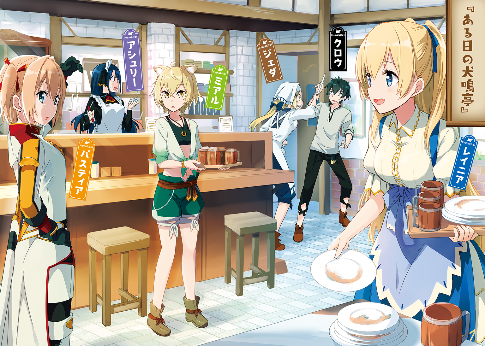

| 黒騎士さんは働きたくない | |
| 雨木シュウスケ | |
この本は縦書きでレイアウトされています。
また、ご覧になる機種により、表示の差が認められることがあります。

 ダッシュエックス文庫DIGITAL
ダッシュエックス文庫DIGITAL
黒騎士さんは働きたくない
雨木シュウスケ
プロローグ
炎とともに崩れ落ちていく。
それは石造りの城の形をした歴史であり、一つの節目であったのかもしれない。
夜だった。
月は柱となって昇っていく黒煙に隠されてしまっている。だが、城下の街は燃え盛る大炎によって紅く染まり、明暗が激しく移り変わっていく。
炎を吐く城の周囲は混乱していた。
統制を失った魔物たちが城から大挙して溢れ出し、包囲していた兵士たちはそれを抑えきれずにかき回された。
誰も彼もがなにが起きているのかをちゃんと把握することができなかった。
その混乱を利用して城から逃げ出す者たちは大勢いた。逃がしていることはわかっていたが、それを止める術はなかった。
城を守っていた魔物たちは強力で、そして英雄たちは首魁を討ち果たすためにこの場にはいない。
暴れ回る魔物を街へ向かわせるわけにいかない兵士たちは、命をかけるしかなかった。
だが、あまりの混乱ぶりに逃げ出す者たちを止めようにも止められなかった。
この二人もまた、そういう者たちだった。
一人は少女だった。フード付きのマントで全身を隠しているが、マントの合わせ目から覗く衣服はいかにも高価そうに見える。ときおり振り返り、城を見上げる際にフードから覗く顔も美しい。
どう見ても、城から逃げ出した貴人だ。
なにより、その後ろに付き従う者を見れば、少女が高い身分の者であることは明白だ。
その者は夜を焼く炎にも屈しない黒に覆われていた。
意匠を凝らされた全身鎧によって覆われ、その色は黒一色に染まっている。夜を行く少女に付き従う姿は、さながら影の巨人だ。
だが、少女はその存在を恐れない。
燃え落ちる城を振り返ることはあっても、付き従う黒い騎士を見ることはなかった。
ただ、城を見上げる目には憂鬱さがあった。
それはそうだろう。
少女は城から逃げ出している。つまりは敗残の姫だ。捕まればその未来は暗く、逃げ切ったとしても失ったものは帰ってこない。
そして逃げ切った先に未来があるかどうかも怪しい。
そんな少女に付き従う黒い騎士の足が止まったとしても不可思議なことではないだろう。
どれだけ美しくとも、その姫に栄光は待ち受けていない。
騎士が付き従う理由はすでにない。
だがそれは、その少女にとっては異常な出来事だった。
「どうしました？」
「なにやってんだおれ？」
兜を震わすその声はこもって不明瞭になるものの、壮年の男を想像させる。
だが、その口調はその姿に似つかわしくない。
どちらかといえば、それは少年が発する口調だった。
「え？」
聞いた少女も、戸惑った。
信じられないという顔で黒い騎士を見上げている。
次の言葉も、さらに信じられなかった。
「あほらし」
そう言ってその場に兜を脱ぎ捨てた。
そこから現れたのはさきほどまでの声の雰囲気とはかけ離れた、少女と同じ年頃の少年だった。
「ク、クロウ？」
「合流とか、めんどくさい。なんで帝国のためにそんなことしないといけないんだ？」
兜を介さない声は、年相応の若さだ。
「クロウ......あなた、もしかして」
戸惑いながら、少女は脳裏に閃いた言葉を確かめていた。
そして、その言葉が宿す希望にも気付いていた。
暗く、そして戸惑っていた少女の顔が明るくなっていく。
そして、全身鎧をぼろぼろと外していく少年に声をかけた。
「では、二人で逃げましょう」
「は？」
思わぬ言葉に、クロウと呼ばれた少年は少女を見た。
「帝国のためにこれ以上なにかする必要はありません。二人で逃げましょう」
「......あて、あるのか？」
「はい！ いきましょう！」
少女の伸ばす手に、少年は応じた。
こうして、帝国の姫レイニアと、黒騎士と呼ばれ恐れられた少年クロウの二人は、歴史の表舞台から姿を消した。
獣人街のヒモ騎士さん 01
大森林と呼ばれる場所がある。
古代の神気を深く宿したこの森には魔法よりも歴史のある存在が座し、人はおいそれと手出しできない。
そんな超自然の存在に守られた広大な原生林の一角に、獣人街と呼ばれる街が存在する。
その名の通り、人と獣の間にある者たちが暮らしている。
大森林と接する人々の国とは違う、独自の文化を形成している。
そんな街にも人々が集まり、食事を提供する店がある。
犬鳴亭という看板を下げたその店は開店してそれなりに長いのだが、最近、メニューを新しくしたわけでもないのにとても繁盛している。
「いらっしゃいませ」
その原因は、笑顔で出迎える看板娘が戻ってきたからだ。
割烹着姿のその少女は、あのとき燃える城から逃げ出した少女だ。
美しい金髪を後ろにまとめ、料理を運ぶレイニアに客たちは気楽に声をかける。それに応える彼女の顔も明るい。
「いやぁジェダさん。レイニアちゃんが戻ってきてくれて店は大繁盛だね」
カウンター席にいる豚鼻の客に言われ、厨房にいた気難しげな女性、ジェダは満更でもない表情を浮かべた。
「まぁね。もともとあの子は働き者なんだ、ここにいた方が幸せなんだよ。それをあのひょろすけが」
「まぁ、親父さんにも色々あったんだよ」
「それだけじゃない......よっ！」
怒りに任せて分厚い包丁で肉を切るものだから、豚鼻は震えた。
「あいつのせいで、あの子はいらないコブを付けちまった」
「あぁ、まぁ......あれのことはねぇ」
ジェダは苛立たしげに、客は彼女の雰囲気に怖々と、厨房の奥に目を向ける。
そこには畳敷きの部屋がある。
店の者が休憩に使う部屋だ。
そこにいま、一人、寝転がっている者がいる。
少年だ。

獣人街では珍しい、獣の因子を持たない人間の少年だ。
少年は休憩室で寝転がったまま、動こうとしない。寝ているのか？ いや、横に積み上げられた絵草紙に手を伸ばしては、すぐに下ろしたりもしている。
読み飽きたのか、それとも読むことさえもめんどうだと思ったのか。
「あの、馬の骨め」
「まぁまぁ、あんなんでも帝国の偉いさんだったんだろ？」
「その帝国がなくなったんだからただの役立たずだよ」
「まぁ、色々あったんだから温かく見守ってやろうや」
豚鼻の客がそう言って宥めようとしていたそのとき、厨房に戻ってきたレイニアが慣れた手つきで作り置きの料理を皿に載せ、ご飯を盛り、休憩室に運んでいく。
その背中を見るジェダの表情の凄まじさに、豚鼻が震え上がる。
「ほら、レイニアちゃんは優しいから」
「ああやだやだ！ うちの姪っ子がヒモ男にひっかかるなんてまっぴらごめんだからね！」
そんなジェダの怒鳴り声は、もちろんレイニアにも、そして寝転がっている少年、クロウにも届いている。
「なんか、すげぇ言われてる」
「ごめんなさい。おばさん、怠け者嫌いだから」
「......お前も否定しないよな」
「わたしは、いまのクロウさんでいいですから」
「はぁ、居心地悪ぃ......」
言いながら、のったりと起き上がると卓袱台に載せられた料理に手を付ける。揚げた魚の酢漬けでご飯をかき込む。
「でも、料理はうまいよなぁ。うん、労働しなくても飯はうまい」
そう言ったクロウの顔に噓はない。
黒髪は寝ぐせまみれ、目はいつも眠そうだ。冷水をぶっかければそれなりに端整な顔立ちになりそうだが、いまは全てが弛緩している。
「おかわり」
「はい」
「おかわりじゃねぇよ！」
茶碗を差しだしたクロウは蹴り飛ばされた。
蹴ったのは、ジェダだ。
動じることなく元の場所に寝転がったクロウの胸にジェダは足をのせる。
その手には、さっきの分厚い包丁が握られていた。
「おう、うちは肉屋じゃねぇんだ。生の豚に用はないぞこら」
その迫力は凄まじいのだが、クロウはまったく動じない。
「獣人にそのネタ使われると、こっちはどうしていいんだかわからなくなるわ」
「ほう？ そのよく回る舌を引っこ抜いて網焼きにしてやろうか」
「怖いわぁ。殺されるわぁ」
「おば様、やめてください」
クロウと包丁の距離が狭まっていくのを、レイニアが止めた。
「だけど、レイニア」
ジェダから漲る殺気がそれで揺らぐ。
近所では料理はうまいが鬼より怖いと有名なジェダの弱点は、このただ一人の姪なのだ。
その姪がいなくなってからは、獣人街のみなは怖くて近寄りがたくなっていたのだ。
「クロウさんは父とわたしがご迷惑をお掛けした方なんですから、この方の家賃はわたしが働きますので......」
「レイニア」
「ですからどうか、思う存分、食っちゃ寝させてあげてください！」
「それはダメ人間しか作らないんだよ、レイニア！」
レイニアの言葉に、ジェダは情けない顔をする。
そしてクロウはまったく動じない。
「いえー、ダメ人間万歳」
「お前は少しぐらい申し訳ないとか思え！」
叫び、ジェダはそれからこめかみを押さえた。
「......まぁ、レイニアが自分の給金でペットを飼おうって言うんなら、それはそれでいい」
「おう、ペット扱いになったよ」
「だけどあたしは、躾のできてないペットは嫌いなんだよ」
「犬だけにな」
ちなみに、ジェダは犬の獣人だ。耳は人間のそれではないし、鼻の頭が少し黒い。そして犬歯がとても発達している。獣人としての特徴は彼らの中では少ない方だ。そしてレイニアの叔母というだけあって、人間の目から見ても美人だ。
だがそんなこと、クロウの言葉で怒らない理由にはならない。
「っ！ っ！ っ！」
「ああ！ どうか落ち着いてください、おば様！」
包丁を振り上げたジェダを、レイニアは必死に押さえた。
「とにかく！ 働かない奴は大嫌いだ！」
身を挺すレイニア越しに、ジェダは叫んだ。
「だから、出前の食器を回収してこい」
具体的な労働の指示に、クロウは目を丸くした。
どうせいつものように働かない奴はクズだなんだと叫んで終わりだと思っていた。
「いますぐ？」
「いますぐ！」
「え？ まだおかわりもらってないんだけど」
「いいから行ってこいや、ゴラァァ!!」
蹴球のごとく食堂から蹴り出され、しかも出前用のおかもちまで放り投げられてきた。
「いってぇ」
頭を打ったおかもちを摑みながら、だらだらと立ち上がる。
「クロウさん」
「おう、レイニア、お前のおばちゃん怖すぎるぞ」
「はい、怖いですよ。これ、出前に行った先のメモです」
当たり前のような顔でメモを渡されて、クロウはげんなりとした。
「......ゴロゴロさせてくれるんじゃないのかよ」
「働くのも楽しいですよ」
平然とそう言いのけられて、クロウは言葉もない。
「やれやれ」
「いってらっしゃい」
諦めておかもちを摑み、クロウは歩き出す。
見送るレイニアにジェダが後ろから話しかけてきた。
「なぁ、レイニア。厳しくするのも人のためだと思うぞ」
「わかっています。でも、いまはいいんです」
自信に満ちた顔でそう言われると、ジェダはなにも言えない。
昔からそうだ。レイニアの笑みが確信に満ちると、誰も逆らうことはできない。
「わたしの堪忍袋は、あんたほど丈夫にできていないよ」
ジェダの言葉にも、レイニアの笑みは変わらない。
その笑みはとても強い。
あのグータラだって動き出すのだから。
†
獣人街で獣の因子を持たない人間は珍しい。
だから、好奇の視線が飛んでくるのはしかたない。
クロウはだらだらと歩き、出前に使われた食器を集めていく。
獣人街を包む大森林、その外側にある人間の生息圏は王国という。王を頂点とした国家だ。
いまは、ラスティーユ新王国という名前のはずだ。
その前は帝国と言った。
さらにその前はラスティーユ王国といった。いまは過去の王国を旧王国と呼ぶらしいということは、犬鳴亭にやってきた闇商人たちの雑談から聞こえてきた。
それはともかく、そういう人間たちの街は石や煉瓦造りの建物が多かった。
ここは木にだけは困らないからか、木造の家が多い。
その代わり、色にこだわっている。壁板に色を塗ったり、絵を描いたり、あるいは屋根瓦の色や形にこだわる。
こだわり方には色々あるが、その傾向が外の世界とは違う。
雰囲気の違う場所を歩くのは、やはり少しは、楽しい。
「まっ、たまには散歩ぐらいはな」
そんなことを呟いて、クロウは歩く。
そんな彼に集う視線を感じながら。
その視線の源を辿ると、子犬の群れのような集団がいる。
獣人の子供たちだ。
子供たちは興味津々の瞳で、おかもちを持ってだらだらと歩くクロウを眺めている。
「あれが帝国の黒騎士？」
「うっそだぁ」
「噓だよな」
「絶対噓だ」
「帝国の黒騎士だよ。万魔を従える黒衣の将軍」
「冷酷非情！」
「群がる王国騎士をちぎっては投げちぎっては投げ」
「王都をたった三日で陥落させた戦の天才」
「それがあれ？」
「うっそだぁ」
「噓だよなぁ」
好き勝手に言いまくる子供たちの後ろで、少し年長の子が黙ってクロウを眺めている。
むっつりとしているようにも見えるし、なにか物問いたげなようにも見える。
そんな視線を眠たげな顔で浴びていたクロウがいきなり目を合わせてきた。
その顔は気付いてるぞと言いたげだった。
「へっ」
びくりとする子供たちを見て、クロウは唇を吊り上げて笑う。
そしてそのまま歩き去っていく姿に、今度は怒り出す。
「うわっ、なにあれ」
「むかつく」
「変なの！」
「絶対偽物だ。レイニア姉ちゃんは騙されてるね」
子供たちがわいわいと言い合う。
「ねぇ、みんな」
そんな中、年長の子が口を開いた。皆とは違う視線を向けていた子だ。
「なに、ミアル？」
「あいつが本物かどうか、試してみようよ」
「どうやって？」
「それは......決まってるよね」
ミアルと呼ばれた子に言われ、子供たちはニヤリと笑った。
†
景色を楽しむのも食器回収三軒目で飽きた。
「まぁぁったく......」
そうなれば愚痴が一つや二つどころではなく歩数と同じだけ出てくる。
「いいじゃないかだらだらしたって。こちとらこの間までひたすら働いてたっての」
内容はどれもそれほど変わりはないけれど。
「それに......」
街を見渡し、クロウは呟く。
すぐ側にあった住宅の板壁には苔が這っている。無人であったり放置住居というわけではない。
それ以外の部分は手入れが行き届き、この中に人の生活があることを窺わせる。
そんな家は他にもある。
鮮やかな色や絵や装飾で森から浮き立たせながら、同時に自分たちを守る森との同化を望んでいるかのような光景だ。
だが、クロウが見ているのはそういうことではない。
苔に呑まれようとする家々がこんなにもたくさんある。
それはつまり、それだけの時間、この街は大きな災いに呑まれたことがないということだ。
「こんなところでおれになにしろってんだよ。やることないって」
どんなすごい将軍も、平和な街でやることはない。
そんなことを思いながら、重くなってきたおかもちに振り回されるように歩く。
背中から近づいてくる連中のことは最初に視線を感じたときから気付いていた。
「とりゃぁっ！」
「おっと」
「ぬらっ！」
「ほいっ」
「たあぁっ！」
「そいやっ」
次々とおかもちに抱きつこうとする子供たちを、クロウはのらりくらりと避ける。
「............」
「............」
突撃が止まったところで無言の睨み合いになった。
「いや、なんだよお前ら」
「隙ありぃぃぃぃ！ ............あれ？」
後ろからの最後の声を捕まえる。
服の背中の部分を摑んで吊した子供は、小生意気そうな猫の獣人だった。
「え？」
自分の状況が信じられなくて、子供はきょとんとしている。
「いや、本当になんなんだよお前ら」
そんなクロウの戸惑いを無視して、子供たちは騒ぎ出す。
「やばい、ミアルが捕まった」
「大変だ。警察呼ばなきゃ」
「事案だ。事案」
「うるさいよ。ガキンチョ捕まえてなにが事案だ。おれはノーマルだ」
クロウのその一言でミアルと呼ばれた子供が吊されたままなんとか首を捻って睨んできた。
「うるせぇ、おれは女だ！」
「噓を吐くな！」
「噓じゃねぇ！」
「えぇ......」
強情にそう言いきるミアルを、クロウはまじまじと観察してみる。
まさしく猫っ毛の色素の薄い髪は短く整えられている。目付きは鋭く、気が強そうだ。犬とは違う丸っこい耳がひくついている。
体つきは、子供なのだから男女の違いなんてありはしない。
だが、それにしても......。
「まじまじ見んな！」
「まぁ、どっちでも良いよな」
子供の性別がどっちだろうと、たいした問題ではない。
「ああそうだ。そんなにこれが欲しいんなら食器集めてきてくれよ。これリストな」
「するかバカ！」
「うげ」
ばたついたミアルの足がクロウの腹に刺さる。
思わぬ不意打ちに、クロウも思わず膝をついた。
クロウの手から離れたミアルは、無様に地面に落ちることはなかった。猫らしくくるりと回って着地すると、すぐにクロウから離れていく。
「死ね、バーカ」
「バーカバーカ！」
「バーカバーカ！」
「やーい、童貞」
「誰が童貞だごらぁっ！」
「ぎゃぁぁ！」
クロウの怒鳴り声に悪ガキたちが逃げ散っていく。
「なんだあのくそガキどもは」
人間の身軽さ以上の速度で視界から消えていく。獣人の身体能力を見せつけられる光景に呆れながら、クロウは立ち上がる。
それで、右手が空なことに気が付いた。
「......あ」
すぐ近くでおかもちが横になって転がっていた。
†
逃げ散った子供たちには合流場所がある。
ここは彼らの庭だ。
ディキシー家の裏には巨樹があり、根元には大きな洞がある。
暖かい季節ならそこにそのまま泊まることもできる場所に、ミアルたちは集まっていた。
話題はもちろん、クロウのことだ。
「くっそう、なんて迫力だ」
最後に食らった怒鳴り声を思い出して、一人の男の子が震える。
「やっぱりあいつ、黒騎士なのかも」
童貞という言葉がもたらす破壊力を、この子たちはまだ知らない。
「ふっざけんな、あんな奴が黒騎士なはずないだろ」
ただ一人、ミアルだけが顔を真っ赤にして怒っている。
「ミアルねぇちゃん、がっかりすんなよ」
「そうだよ。こればっかりは権力じゃどうしようもできないんだから」
「時間の流れに期待してみよう？」
「うるさいよお前たち！」
子供の恐ろしいところは意味を知らないままに聞きかじった言葉を使いこなすところだ。
そして少しばかり年長のミアルは、もう意味を知ってしまっているわけで、今度は恥ずかしさで顔が赤くなった。
「ミアルねぇちゃん、なんであんなにピリピリしてんだ？」
「おねぇちゃん、本当は黒騎士が好きなんじゃない？」
「あぁ、それはあるかも」
「おねぇちゃん、強い人が好きだもんね」
「戦争中はいっつも闇商人が持ってくる戦争話を楽しみにしてたもんね」
「おねぇちゃん、帝国派だったし」
「ていうか、王国派なんて、うちらにいないし」
「まぁね！」
王国にとってみれば皇帝を僭称する裏切り者による乗っ取りでしかなかっただろう。
だが、王国に属しないままその影響を受ける者たちにとっては、皇帝が嫌な奴を叩きのめしてくれたと思っている者も多い。
獣人街の住人は、とくにそちら側が多い。
「王都陥落まではかっこよかったよね、黒騎士」
「それからは全然活躍しなかったね」
「ああもう、うるさいうるさい！」
やいやい騒ぐ子供たちに、ミアルは爆発した。
「もう今日は解散！」
ミアルの迫力に子供たちは散っていき、ミアルは一人になる。
「くっそ、もう、なんなんだよもう......」
イライラした気持ちで洞の中で座り込む。
「あんな奴、絶対、黒騎士なんかじゃないよ、もうっ！」
子供たちの言う通り、ミアルは黒騎士に憧れていた。
昔から大森林に接する土地のほとんどを領有しているのが王国だ。だからこそ、神域を名乗り人間の支配を拒むこの領域を好ましく思っていないことは確かだ。
大森林に手を出そうとしたことは数知れず。
それに失敗したのも同じ数だけある。
その腹いせのように獣人街はいろいろと嫌がらせを受けていた。
他の人は知らなくても、町長を親に持つミアルだけが知っていることもある。わかりやすいのは闇商人の摘発という名目で、大森林にやってくる少ない行商人まで捕まえたりしたことだ。
そのために森の中だけでは補えない物が不足して、とても困った。行商人が運んでくる物には医療品もあったのだ。
そんな嫌な王国に一発食らわしたのが帝国だ。
多くの魔物を率いる皇帝と黒騎士。魔物の軍勢を作るなんて誰にもやり遂げられなかったことを実現させただけでもカッコイイのに、その魔物を自在に操り、王国軍を打ち破り、王都を陥落させた。
その指揮をしたのが黒騎士だという話だ。
魔物たちを手足のごとく使い、それだけでなく剣の使い手でもある。自ら戦場に立って、何人もの有名な騎士を打ち倒したという。
すごく、すごく、カッコイイ。
それなのに......。
（なにあのだらだら、信じられない）
レイニアと一緒にやって来た人が黒騎士だと父親から聞いて、とても期待していたのに！
それなのに、彼はこの獣人街に来てからずっと、だらだらだらだらだらだらだらだらだらだらだらだらだらだらだらだらだらだらだら！
「もうもうもう！」
あんなのが黒騎士だなんて思えるわけがない。
もうこれ以上、こんな失望と付き合いたくない！
「くっそ、もうあんな奴庇う必要ないって、パパに言って......」
そんなことを呟きながら洞から出る。
いきなり、苦しくなった。
だけどそれもすぐになくなった。
目の前が真っ暗になって、自分が立っているんだか横になっているんだかもわからなくなった。
たぶん、意識が一回途切れ、それから元に戻ったのだと思う。
だけど、なにがどうなっているのかわからない。
真っ暗は変わらないし、口には布のような不快感があって外せない。
（目隠し、猿轡......捕まってる！）
それに気付いた瞬間、体が硬くなった。
空気が冷たい。街の温かさがない気がする。背中に回された手も動かない。手首に縄の感触がある。足も一緒だ。
（どうなってるの!?）
頭の中はうるさいが、体は静かに縮こまっている。
そうして気配を窺っていると、草を踏む音がした。
それと同時に幾つかの気配が動き出す。
たくさんだ。
こんなにいたのかと、ミアルはさらに体を硬くした。
「ご苦労」
「まっ、攫うのは得意ですからね。しかし立場が立場だ。すぐ騒ぎになりますよ」
「わかっているさ。もちろん」
「脅しに使われるので？」
「もちろん、脅す。あいつはこの街がどれだけの金を生むのかわかっていないからな」
「ええ、まったく」
ひそひそとした話し声には冷たさがあった。
「わたしら後ろ暗い商売の者たちにとって、この街は天国になりえる場所だ。いまの町長がもっと頭が柔らかければ、ですが」
「柔らかくするための薬がこいつだよ」
「うぐっ！」
腹部にいきなり衝撃が来て、ミアルの真っ暗な視界がチカチカした。
（蹴った。こいつ......）
傷みと衝撃に震えながら、ミアルは歯を嚙みしめた。
（こいつ、絶対、許さない！）
震えに怒りが混じったところで、いきなり耳元に氷のような冷たい声を注ぎ込まれた。
「ミアル」
怒りを怯えに変えさせるには、十分な冷たさと圧力と生臭さを備えた声だった。
「ミアル。お前の花嫁衣装を親父さんはとても楽しみにしている。だから、な。お前を死体に変えさせるようなことはしてくれるなよ？」
「むうっ！ ううっ！」
「勘違いするなよ。おれが嫁にとろうって話じゃない。まぁ、おれが見繕うことになるだろうがな」
下卑た笑い声が周りから響いて、まるで降り注ぐようだった。
嫌な笑い声が体に当たって痛かった。怯えてすくんで筋肉が引きつり、それが全身に痛みを生んでいる。パチパチと弾ける痛みだ。
（くそう、こんな奴ら......こんな奴ら！）
そんな痛みに負けそうになっている自分が悔しくてたまらない。
「なんだよ、そういう需要の話になるのかと、ちょっとお兄さんドキドキしちゃったじゃないか」
「なっ！」
「誰だ！」
いきなり周りの空気が変わった。驚きに揺れる気配には逃げる好機があった。
いきなり手足の拘束がなくなり、目と口を覆っていたものもなくなった。
これ以上ない好機だと思う。
だけど、ミアルも動けなかった。
いきなり割り込んだ声のためだ。
その声に覚えがあった。
というよりも、ついさっきまで追いかけ、ちょっかいをかけた奴の声だ。
その声は、場の雰囲気にそぐわない能天気さがあった。
気だるげともいうかもしれない。
声はどこから？
「いや、しかし......ロリはいかんよ？ ノータッチを信条にしろよ？」
（え？）
後ろだ。
振り返ると、眠たげな顔をしたクロウがミアルの真後ろでしゃがみ座りをしていた。
「なんの話をしている？」
「いや、お前らの話だけど」
「誰がロリか!?」
「いやぁ、子供攫って花嫁とか言っちゃってる時点で、疑われてもしょうがないでしょう」
いきなり現れたクロウに、他の男たちは驚き、取り囲んだ。
「こいつ......噂の黒騎士か」
「は？ 黒騎士!?」
最初の声が花嫁とか脅すとか言っていた方だ。
それならその次が、ミアルを攫った方か。
最初が獣人、その次は人間だ。豚鼻と牙、猪の獣人にやせっぽちのひょろなが人間。
ひょろながが闇商人で、猪がそれを手引きする獣人街の悪い奴だ。
「帝国の黒騎士！ 皇帝の全てを引き継いでいるという、あの......」
ひょろなががクロウを見て、怯える。
つい先日まで大森林に接する王国を制圧した帝国の幹部の名前だ。
知らないはずはなく、周りの空気がざわめく。
「はっ、まさか」
だが、猪は嘲笑う。
その気持ちは、ミアルもわかってしまう。
「冷静になれよ。黒騎士が本当に生き残っていたとして、こんなガキなはずないだろう」
理由はミアルとは違っていた。
「た、たしかに」
「黒騎士を名乗って用心棒代を稼ごうとかいうケチな奴だ。証拠に日がな一日、食堂の奥で昼寝してるって噂だぞ」
「ま、否定はしない」
クロウはだらだらと肩をすくめた。
「おれが黒騎士だなんて信じる奴はいない。それでいいんだよ」
「おどろかせやがって」
ひょろながが額の汗を拭って、クロウを睨む。
「おれが誰でもどうでもいいけどさ。とりあえず、このガキンチョはおれに寄こせ。こっちも用があるんだ」
「状況が読めないバカだな」
猪がそう言うのも当たり前だ。
「どうやってここに来たのかは知らんが、どうせ手品の類だろう。見られたらおしまいだ。逃がさんぞ」
そう。ここにはひょろながと猪以外の獣人と人間たちが複数いる。剣や弩で武装している。この二人の護衛や手下だろう。
いまはその武器を抜き、クロウに向けている。
「なぁ、いいから黙って、このガキとおれを帰してくれない？」
「偽物でも本物でも、一人でなにができる」
猪が指を立て、そして振り下ろした。それがなんの合図かは言うまでもない。
弩からの矢がクロウに向かって放たれた。
だがその矢が望む結果を生むことはない。
「まっ、普通はそう思うよな」
「なっ？」
矢が放たれたのに、クロウから痛がる声はなかった。
それどころか、飄々とした声は変わらない。
「だがあいにくと、一人でなんとかできちゃうんだな、これが」
クロウの前で放たれた矢が止まっていた。
そして、クロウの周りには不可思議な黒い物が漂っている。煙とも粘液のようなものともとれるそれは飛来した矢を捕らえ、クロウを守った。
「まさか......魔錫？ 魔錫使い！」
信じられないという顔でひょろなががクロウを見る。
そんな彼らの前で、黒い流体は瞬時に一つにまとまり、剣になった。
黒一色の長剣だ。
「まさか、本当に黒騎士......」
「そ、そんなばかな」
驚きの声に包まれる中、クロウは相変わらず眠たげな目で彼らを見、気だるげな声を吐く。
「さて......言っとくが、おれの剣の師匠は手加減て言葉が嫌いだったからさ。こっから先は覚悟してもらうぜ？」
黒騎士は、王国の名だたる騎士を打ち倒した。
その逸話がミアルの頭で再生されたし、きっと他の連中の頭でも似たような言葉が流れたことだろう。
怯えの気配が一気に吹き上がった。
「ええい！ こんな奴が黒騎士のはずがない！ はったりだ！ やれっ！」
猪が叫び、その声に押されて手下の連中が向かってくる。
「しかたねぇなぁ......」
気だるくため息を漏らし、クロウは漆黒の剣を振るった。
ただそれだけだった。
刹那、黒い嵐が起きたようにミアルには見えた。
向かってきていた手下たちの動きが止まった。
「......まぁ、師匠が手加減が下手だったからって、おれまで手加減したらだめってことでもないんだけどな」
動きが止まった手下たちにクロウはにやりと笑って見せた。
「だけど、次はない。おれはいま、面倒くさがりなんだ」
その言葉の後に、止まっていた時が動いた。
手下たちの誰かが、足を一歩、踏み出した音がした。
途端、ずさりという音が連続した。
剣の先、着ていた鎧の部品、千切れたベルト、半分になった鞘、真っ二つの弩、底の抜けた矢筒から矢......手下たちの体に付いていたものが次々に落ちていくのだ。
それは手下だけではない。
彼らに守られ少し離れたところにいたはずの猪やひょろながまで、武器を切られ、服を落とされている。
明らかに、剣の長さを無視したことが起きている。
「できたら、死体の後始末とかそういうの考えたくないんだよな」
そんなことをしてのけたクロウの口調はいつも通りだ。
気だるげな様子は変わらない。
獣人街で覗き見た姿とほとんど変わっていない。
ただ、ほんの少し、黒い煙のようなものがクロウの体から溢れている。
それだけなのに、すごい威圧感がある。
（これが、黒騎士なんだ）
ミアルは怖いと思っているのに、同じように胸がドキドキしていた。
会いたいと思っていた黒騎士が目の前にいるのだ。
（本当に黒騎士なんだ）
そのクロウはほとんど裸になった連中に剣先を向けた。
「ひっ、ひぃ......」
「くっ、くそっ！」
武器を失い、服も破かれ、彼らは完全に戦意を失っていた。
「嫌ならそのガキ置いて、さっさと消えろ」
その言葉で、猪もひょろながもその部下たちも、みんな逃げ去ってしまった。
クロウはそれを止めなかった。
ミアルにはなにかを言う余裕もなかった。
ただ、逃げ去る連中を見送るクロウの横顔はミアルの見たことがない表情を浮かべていた。
それもすぐに消える。
「おい、大丈夫か？」
「う、うん」
いつもの眠たげな顔でそう問われ、ミアルは頷いた。
「そうか。それなら......」
そこでいきなり、クロウが後ろに手を回したかと思うとミアルの前に何かを置いた。
おかもちだ。
地面に置いたとき、ガチャガチャと音がした。
「これを割ったのはお前だって、ちゃんとジェダに証言しろよ」
それはそれで、とても怖いことをクロウは言う。
だけどミアルはそれに、いつもの調子で不平を言うこともできなかった。
ただ、黙々と頷いただけだった。
†
そんなことのあった数日後。
「あら、ミアルちゃん」
「どうも」
こそこそと犬鳴亭に入り込んだミアルだったが、すぐにレイニアに見つかってしまった。
レイニアは、なんとなく苦手だ。
好きなんだけど、逆らえない強さがある。
帝国の姫なんだから、それは当たり前なのかもしれないけど。
でも、そんな彼女が店の割烹着で食堂の客を笑顔で出迎えているのは、とても不思議だ。
「......あ、あいつは？」
そして、あいつがいることも。
「うん、クロウさん？ それならいつものとこ」
そう言って、レイニアは含みのない笑みで厨房の奥にある休憩室を示した。
そこに、いつものようにごろごろだらだらしている役立たずの姿がある。
あれが、帝国の黒騎士なのだ。本物の。
でも......。
「なんであいつ、あんなにグータラなんだ？」
「あら、どうしてそう思うの？」
「だって、働いてないじゃないか」
「いまはね」
そうして変わらない笑みを浮かべるのだ。
レイニアの笑みには揺らがない確信があるのだ。
だから、逆らえない。
「でも、その前はちゃんと働いていたわ。わたしのお父さんに巻き込まれてむりやりにだけど」
「......うん」
レイニアの父親のことはミアルも少しは知っている。
帝国の皇帝。ここの住人ではないけれど、そんな悪いことをするような人には見えなかった。
「いまは一仕事終わっているの。それなら、少しは休んでもいいんじゃないかしら？」
「う、む、むう......」
納得できるような、できないような。
「でもやっぱ、パパはグータラはだめだって」
「その通りです」
「え？」
「あら？」
いきなり、別の声が入ってきて驚いた。
振り返ると、獣人街では見ない衣装の女性がいた。
旅用のブーツが食堂の床を強く蹴る。
そうしてそのまま、厨房へと入っていった。
「ちょっとあんた！」
ジェダに怒られても怯むことなく黒い髪の女性は休憩室へと向かい、クロウへと怒鳴りつけた。
「クロウ様！」
「あん？」
「ちゃんとしてください！」
そう叫んだ女性は、アシュリーという。
かつて黒騎士のメイドだった女性だ。
メイドなサキュバス 02
獣人街の入り口には門がある。
石造りの高く大きな門には硬く鋭い棘を備えた蔦が絡みつき、季節によっては艶やかな花を咲かせる。
いまは花よりも葉が強い。大森林の背の高い木々をすり抜けた陽光を受けて、薄い緑の葉は光を散らす。
それは獣人街を訪れる者たちを祝福しているかのようだ。
「あいかわらず、でかいな」
緑に反射する光を見上げ、クロウは気だるく目を細めた。
「獣人街に来た人が最初に目にする場所ですからね」
レイニアが少し誇らしげに笑みを深める。
「まさか、入れるとは思わなかったな」
クロウは感慨深く呟いた。
獣人街には特別な決まりがある。
獣人街というよりは、この森にはというべきか。
その決まりのほとんどは街を覆う大森林を守護する神によって決められている。神の力が干渉する有無を言わさぬ約束事だ。
その約束事とは『この森は獣人に招かれたものしか入れない』というものだ。
大森林を守護する神は多くの人間がこの森に干渉することを拒み、獣人だけを受け入れた。
その獣人に招かれた人間だけが、客人としてこの森に、そしてこの森に存在する獣人街に滞在することが許される。
レイニアの母親は獣人で、彼女にもその血が流れている。だからこの森に足を踏み入れる資格があるし、彼女に招かれることでクロウも入ることができた。
だが、獣人の全てが善人なわけでもこの森に敬意を払っているわけではない。
そのことを獣人自身が理解しているから、この門は造られた。
落ち延びてきた帝国の姫と黒騎士なんてこの門で弾かれると思ったのだが、そうはならなかった。
帝国が興る前、レイニアがここで暮らしていたからだろう。
だが、それにしても......
「ここの連中は危機感がないのかね？」
「そんなことはないですよ」
レイニアが帝国の姫をしていたことを獣人街の住人たちは知っていたはずだ。
ここに帝国の姫や黒騎士がいることが王国にばれたら政治的に干渉される恐れもある。場合によっては犯罪者を匿っていると決め付けられ、軍を差し向けられるかもしれない。
「街の住人だったわたしを守ってくれているのもあるのでしょうけど、獣人街の人は王国が嫌いですから」
「ふうん」
レイニアの言葉に頷きながらクロウは門を見上げる。
門を構成する石の一つ一つがとても大きい。それを三階建ての建物ほどの高さまで積み上げているのだから、大変な労力がかかっているだろう。
「......レイニアを送り届けたら、とりあえずはいいかって思ってたんだけどな」
クロウの発言に、レイニアが驚いた顔をした。
「そういうわけにはいきません」
「まぁ、そんときにはここに入れると思ってなかったからさ」
「そのときには、わたしもこの街に戻りませんでした」
「おいおい」
こちらを向いて真剣な顔をするレイニアに、クロウは思わず戸惑った。
「わたしは、クロウさんをお世話しないといけないのですから」
「レイニア......ありがとうよ。おれをだらだらさせてくれるのはお前だけだぜ」
「クロウさん」
「レイニア」
「はいそこまで！」
なんとなくノリに従ってレイニアと手を取り合っていると、それにミアルが割って入ってきた。
「ていうか、イチャイチャなんだかダメ人間製造談なんだかわからない会話をすんな！」
「おう、お前のこと忘れてたわ」
「むきぃぃ！」
そういえば、ミアルの付き添いでわざわざ門まで来たのだった。
「あんまり生意気言ってると、屋台のお菓子奢ってやらないぞ」
「むう」
財布を見せつけて胸を張るミアルに、クロウは唸った。
門のこちら側から街へ向かうまでの間に幾つかの屋台が並び、さらにはどこかで楽しげな音楽が奏でられている。
今日はちょっとした祭りがあるのだ。
「なら、焼きもろこしを買ってくれ」
「は？ やだ。練りアメ買わないとかありえない」
「練りアメとか虫歯一直線じゃねぇか」
「焼きもろこしなんか、歯にひっかかりまくりじゃん。きもい」
「あ、わたしはわたあめを買おうと思ってるんですけど......」
二人で無邪気にいがみ合っていると、おずおずとレイニアが手を上げる。
「............」
「............」
そんな彼女を、クロウとミアルはじとっと見た。
「え？ あの......」
ふわふわのわたあめを少しずつ囓りながら屋台を巡るレイニアの姿が二人の頭には浮かんでいた。
「そこでわたあめかよ」
「うわぁ、レイニア姉ちゃん、狙いすぎ」
「あざといわぁ......」
「な、なんでそうなるんですか！」
そんなやりとりをしていると、いきなり野太い角笛の音が響いた。
開門を報せる音だ。
「あ、来た！」
レイニアのことを忘れて、ミアルが目を輝かせて門を見る。
鉄製の巨大な門が開ききると、そこから賑やかな音とともに長い馬車の列が入ってきた。
クロウたちと同じようにそれを待っていた獣人たちが歓声を上げる。
入ってきたのは旅芸人たちだ。
しかも、ただの旅芸人ではない。そこにいる者たちはみな、獣人なのだ。大森林のことがあって王国の貴族連中には嫌われているが、この獣人ばかりのゾアント一座は庶民に親しまれている。
今回の祭りに合わせて帰ってきたゾアント一座を皆が歓声で迎え入れる。
興奮して一座を見送るミアルの横で、クロウは大きくあくびした。
「彼女も来れたらよかったのですけど」
一座を追いかけて走り出したミアルの後を歩いていると、レイニアがそう言った。
彼女というのは、先日やってきたアシュリーのことだ。
「まぁ、あいつがいるおかげでここに来れたんだけどな」
「そうなんですけど」
レイニアは納得いっていない様子だ。
そもそも、姫だった時ですら侍女たちが自分のために動くことに申し訳なさそうな顔をしていた。
きっとレイニアは自分のために誰かが動くことが嫌なのだろう。
だけどアシュリーは他人のために働くのが好きなのだ。
「おれは助かるけどな」
そう言ってクロウが笑うのを、レイニアはいつもとは違う顔で見つめた。
「なんだよ？」
「なんでもありません」
責めているようにも思えたけれど、クロウにはよくわからなかった。
†
犬鳴亭は今日も盛況だ。
いや、その度合いは数日前よりも増していた。
原因は、新たに増えた店員にある。
「いらっしゃいませ」
そう言って出迎えるのは、いつもの割烹着姿のレイニアだけではない。
黒地のロングドレスの上からピナフォアと呼ばれるエプロンを着けた、いわゆるメイドの衣装を着た女性だ。
獣人街での人間は、珍しいが見ないわけでもないという種類だが、メイドという職種が付くと話は別になる。
メイドを連れて獣人街に来るような人間はいないし、メイドが一人で獣人街に来るはずもない。
もちろん、客が増えた理由はそれだけではない。
家事手伝いという本業をこなす上でメイドの衣装というものは地味であるものだ。幾ら物珍しいといっても、一度見てしまえばそれで好奇心は満足するだろう。
だが、それを着た女性が美人であればどうだ？
「なーんか、いいよなぁ」
豚鼻の常連客が鼻の下を伸ばす、ではなく、鼻の先を垂らしてそう言った。
「あんな子に家の世話をしてもらいてぇ」
「自分でしな」
「いや、してもらうからいいんだろう？ とても働き者だ。それに......ぐふっ」
弛んだ頰を揺らして笑いを殺そうとする豚鼻がキモくて、ジェダは冷たい目で見下ろした。
「いや、ありがたいんだけどさ」
レイニアが帰ってきてから忙しくて人手が足りていなかったのだから、働き手が増えたのは正直嬉しい。
だが、問題もある。
彼女の存在がさらに客を増やしたことも問題ではある。
だが、別の問題の方がジェダにとっては深刻だ。
「なんか、おかげであいつのダメさ加減がひどくなってないか？」
そう言って、休憩室に目を向けた。
いつものようにクロウがそこで寝転がっている。
だが、ジェダには違って見えたようだ。
一言で表現するなら、それはもう溶けていた。
だらだらしすぎて畳と一体化しそうな様子だった。
その原因ははっきりしている。
新たに増えた店員だ。
彼女の名はアシュリー。
あの少年、黒騎士のメイドだった女性だ。
「申し訳ありません」
ジェダの視線に気付き、アシュリーが小さくなって謝る。
「いや、あんたが謝ることでもないんだけどさ」
まるで自分のことのように申し訳ない顔をされて、ジェダはなにも言えなくなる。
レイニアとはまた違う意味で、このアシュリーという女性はやりにくい。
理由は働き者だから。ジェダは働き者が好きだ。
だからこそなのか、その条件を満たしている相手には強く出られないところがある。
強く出られないから、「しっかりしてください！」と言いながら、甲斐甲斐しくクロウの世話をするアシュリーを止められない。
あそこまで徹底的に世話をしたら、それこそトイレ以外で動く理由もないだろう。
畳と一体化してしまいそうになるはずだ。
だけどアシュリーは自分が原因になっているとはまったく思っていない。
これがまた、厄介だ。
「いいえ、クロウ様にお仕えする身として、主人の体裁を整えることができないのは......」
「いや、メイドは主人の職探しまでしないだろ」
呆れた顔でそう言うと、アシュリーはさらに申し訳ない顔をして俯く。
「ていうか、あいつもう給金払うの無理なんだからさ、あんたがここにいる理由はないんじゃないのか？」
「そ、それは......」
はっとして顔を上げると、アシュリーは慌てて首を振った。
「だ、だめです。メイドとして、主人を見捨てるなんて」
「あんた絶対、メイドを勘違いしてるぞ」
首を振り続けるアシュリーと呆れるジェダ。
そんな二人を、ミアルがおもしろくない顔で眺めていた。
「ねぇ、レイニア姉ちゃん」
食べ終わった食器を集めるレイニアに話しかける。
「なぁに、ジュースおかわりする？」
「いや、そうじゃなくて......あいつなんだけど」
「うん、アシュリーがどうかした？」
再び視線を厨房に戻すと、すでにジェダとの会話は終わっていて、アシュリーは休憩室へと向かっている。
夕食の仕込みをする前の空白時間だ。客の方もわかっているからこの時間帯には自然といなくなってしまう。だから、いま残っているのは食べ終わっていない客と、追加の注文をする気のない客だけだ。
ジェダも休憩のために店を出た。いつも通りなら知り合いの喫茶店にいるはずだ。
彼女が戻ってくるまでの間に、食器を洗ったりするのがレイニアとアシュリーの仕事だ。
それなのに、アシュリーは真っ先にクロウのところに向かう。
「なんで、あんなにクロウにべったりなわけ？」
「さあ？」
「さあって......姉ちゃんはなんにも思わないの」
「仲が良いのは良いことよ」
「そういうことじゃなくて......」
「ふふふ、ミアルちゃんはクロウが気になるの？」
「なっ！」
いきなり直球の質問をされて、ミアルの顔はすぐ真っ赤になる。
「ち、違うし！ そんなんじゃないし！ ただ......黒騎士がどんなのか気になるだけだし」
レイニアに微笑ましく見つめられて、ミアルはなにも言えなくなる。
「ああ見えて、アシュリーは実は魔物なの」
「えっ!?」
驚いてアシュリーを見る。ここから見えるのは彼女の背中だけだが、正面の姿だって思い出せる。
獣人ではないのはわかるが、人間だと確信できる自信はない。
ミアルは猫の獣人で、ここでは人間は珍しいのだから。
だけど、ミアルがイメージする獣人ともぜんぜん違う。
ロングドレスの背中部分が妙にだぼだぼしているのだけが気になるぐらいだ。
「ど、どこが？」
「見た目が人とほとんど変わらないのに魔物と呼ばれてしまう人たちもいるの。アシュリーもそう」
レイニアは食器を洗いながらそう言った。
「アシュリーはね、サキュバスなの」
「サキュバス......」
その名前はどこかで聞いたことがある。
（どこで聞いたっけ？）
思い出した。
父親の書斎。下の引き出し。
内容を思い出して、ミアルは顔が真っ赤になった。
「あら、ミアルちゃんは知ってるの？」
「パ、パパの秘蔵本にあった！」
「あら、だめよミアルちゃん。勝手に見たら」
「なんで？」
「......お父さんの性癖なんて、知りたくないでしょう？」
「う、うん」
性癖の意味はよくわからないが、父がそういうものを見ていたなんてと思うとショックで、しばらく父を避けたものだ。
「でも......じゃあ、あの人がサキュバスってことは、兄ちゃんとあの人は......」
父親のあの本のごときことを日夜......。
本の内容にクロウとアシュリーを当てはめ、ミアルは顔から火が出そうになった。
「大丈夫よ。アシュリーはそういうことしないから」
「で、でも......」
「大丈夫」
でも、サキュバスなのだ。
淫魔と呼ばれ、夜な夜な男たちの寝床に忍び込み、堕落へと誘う。
それがサキュバスだ。
（なにが大丈夫なの？）
平然とした顔で皿を洗うレイニア越しに、ミアルは休憩室を見る。
服のこともあってきれいだけど地味な人という印象だった。それなのにジェダと話していた豚鼻が鼻先を垂らしていた理由がわからなかった。
だけど、そのわからないところが淫魔の由縁なのかもしれない。
そう思うと、彼女の背中がとても妖しいもののように思えて、ミアルは「むむむ」と唸るのだった。
そんなアシュリーは厳しい表情でクロウを見下ろしていた。
アシュリーは畳の上という場所に合わせて正座しているのに対して、クロウは寝転がったままなのだから見下ろしてしまうのは仕方ない。
「クロウ様、いい加減、立ち直られてはいかがですか？」
「あん？」
「もう帝国は滅びたのです。クロウ様もそれはショックもおありでしょうけれど」
「いや、ショックはないぞ」
「そ、そうなのですか？」
予想していたのと真逆の言葉だった。だから強がらないでと切り返してさらに、論を詰めていくつもりだった。
それなのに、クロウがあまりにもあっさりとした顔でそう言うものだから、二の句が継げなくてあうあうしてしまった。
さらに次の台詞で言葉を失ってしまった。
「おれ自身も洗脳されてたわけだし」
「ええ！」
洗脳？ まさか、そんな......。
「まさか、皇帝陛下がそのような」
「いや、お前ら支配するのもおんなじことじゃん？」
「ですが......」
「まっ、別にそれは良いんだ」
「い、いいのですか？」
「じゃあ、アシュリーはおれを恨んでるか？」
「え？」
「皇帝から習った魔物を支配する術でお前を支配してこき使ってたんだぞ？ 恨んでるか？」
皇帝は魔物を操り、軍団を作って王国を打倒した。
その軍団を作った基礎となる魔法が『魔錫鬼王』と呼ばれるものだ。
身のうちから溢れる黒い流体は魔錫と呼ばれ、それを魔物に注ぐことで、その魔物に内在する力を高め、そして支配する。
帝国建国後、皇帝は多くの弟子を抱え、彼らに軍団の管理を任せた。彼らは『魔錫使い』あるいは『皇帝の弟子』と呼ばれるようになる。
彼らの頂点に立つのが、『皇帝の最初の弟子』、『万魔の将軍』、黒騎士と呼ばれる人物だ。
「いいえ！ そんなことは！」
そんな彼に訊かれ、アシュリーは全力で否定する。
アシュリーの答えに、クロウは唇を吊り上げて笑った。
「そういうこと。おれも、皇帝陛下のことは別に恨んでない」
「は、はい」
恨んでいないと言われて、アシュリーはほっとした。
「まぁでも、帝国そのものにはやっぱ愛着はないんだわ。だから、なくなってもショックではない」
「それでは大丈夫ですね」
すっきりとした顔で笑顔を浮かべた。
「なにが？」
「働きましょう！」
「............」
「過去に囚われていないのなら、こんなところでグズグズしている必要はありません。さあ、前を向いて明日のために労働です！」
「............」
「ほら、クロウ様。労働は楽しいですよ」
「......あっ、やっぱショックだわ。ショック。ああもうショック。寝込んじゃって動けないぐらいショック。ショックショック。ユーはショック。おれもショック」
「クロウ様！」
ぶつぶついいわけを繰り返して寝転んで背中を向けるクロウに、アシュリーは顔を真っ赤にして怒鳴るのだった。
そんな二人を見て、ミアルは不満げだ。
「なにやってんだろ？」
唇を尖らせるミアルを見て、レイニアは微笑む。
その彼女の視線がミアルから外れた。
こんな時間に新しい人が犬鳴亭に入ってきたのだ。
「ミアル、ここにいたのか？」
「あ、パパ」
ミアルが振り返る。
小太りの中年男性が立っていた。獣の因子の出方は人それぞれだが、ネイハブという名のミアルの父はその出方が強い。ネイハブは、二足歩行の虎猫と言いたいぐらいだ。
そして、この人物が獣人街の町長だ。
「これはネイハブさん」
「やあ、レイニア。クロウ殿とは話ができるかな？」
「ええ、ちょっと待っててください」
「ちょっと込み入った話がしたいんだが。ジェダはいないのか？」
「シマさんのところでお茶をしてると思います。あっちのテーブルでどうぞ」
「ありがとう」
レイニアは笑顔を残してクロウの所に向かう。
「パパ、この間の話？」
「ああ、ミアルはそこにいるんだぞ」
「むう」
不満げにしていると休憩室でアシュリーのせっつく声が聞こえてくる。
「ほら、クロウ様！ 労働する好機ですよ」
「なんでお前はそんなに働きたいんだよ」
「労働は素晴らしいからです！」
アシュリーに背中を押されて、クロウはネイハブの所にやって来た。
しぶしぶと言った感じで座るクロウを、ネイハブはにこにこと受け入れる。
「まずは改めて、先日は娘を助けてくれてありがとう」
「いや、おれは皿割った犯人捕まえただけだから」
クロウのその答えに、ネイハブは針金のような髭を震わせた。
「まぁ、それはそれとして。結果的にうちの娘は助けられ、この街で進行する企みを一つ、見つけ出してくれたことには変わりない」
「そういや、なんか金儲けがどうとか言ってたな」
クロウは寝ぼけた瞳を天井に向けて思い出す。
「帝国の黒騎士に語ることではないかもしれんが。この獣人街は人を寄せ付けぬ大森林に守られている」
「まぁね。森の主には会えていないけど」
「いかに黒騎士でも、簡単には会えないさ。あのスレイドだって会ってないはずだ」
スレイドというのはレイニアの父のことを指す。
つまり皇帝だ。
皇帝スレイド・フォヴス・スローヴェント。
「しかし、家名というのはめんどうだな」
皇帝の名前を呟き、ネイハブはそう言った。
「昔、王国の貴族が使者で来たとき、家名を持てと言われた。だが、自分が何者か、おれたちはこの顔が教えてくれる。家名なんていらないと言ったらその貴族はひどく不満そうだった」
どのぐらい昔なのかはわからないが、ネイハブはいきなり思い出話をした。
「人間てのは、家名を付けないと区別ができないのか？」
「人間の方が数が多い。それに家名を付けさせたいのは人間が獣人たちを分類させるためでもあるし、文化的に侵略もしたかったんだろ」
「文化的に侵略？」
「相手がなに考えてるかわかんなかったら、操れないだろ？」
「はっ、なるほど。さすがは黒騎士だ」
手を叩くネイハブに、クロウは嫌な顔をする。
「そんな風に搦め手を回さないといけないほど、獣人街を守る大森林の力はすごいってことだ」
「その通り」
ネイハブは自信満々に頷いた。
横で聞いているミアルも何度も頷いている。
どちらの顔も誇らしげだ。
「大森林の主、圓樹王は獣人と彼らの認める者のみを己の懐に入れると契約した。その契約によってこの獣人街は成り立っている」
「おかげで、おれもここにいられるわけだけどな」
「そう。レイニアの母親は元々ここの住人だし。レイニアだってここに住んでいた経歴がある。おれからしてみれば、住人が友人を連れて里帰りしただけなんだが、王国にとっては罪人を匿っているとも見えてしまうわけだ」
「おー、なんか黒い社会の話みたいだ」
クロウがそう言うと、アシュリーに後ろから咳払いで叱られた。
ネイハブは気にしていない顔で先を続ける。
「そういうことを大々的にやって、この街を法の手が届かない暗黒街にしたがっている奴らがいるんだ」
「あー......犯罪者を匿って儲けの何割かをもらう的な？」
「盗品市や奴隷市、法の厳しい場所ではおおっぴらにできないものを扱う一大市場だ」
「おおこわ。利権を巡って血で血を洗う戦いになりそうだ」
「そういうことだ」
もうネイハブは笑っていなかった。猫の顔は厳しく、細い牙が見え隠れしていた。
「いまも多少はそういうことが行われてはいる。だがそれは、この街でも違法であることには変わりない。捕まえれば、時に王国の役人に引き渡すこともあった」
ネイハブは怒っている。
「獣人は無害。人間たちに対してそういう態度を取ってきたからこそ、この森と街は生き残ってこられた。その姿勢を崩すわけにはいかん」
街を治める者として。
「なにより、うちの娘を攫ったことを後悔させてやるために」
そして、父としても。
「そのため、クロウ殿にも協力を願いたい」
「うぇ」
頼られて、クロウは嫌な顔をする。
その表情は予想通りだとネイハブは笑みを取り戻した。
「まっ、居候代だと思って、な」
クロウが嫌がっても、彼を動かしたがっている者は背後にもいる。
了承以外に逃げ場はないのだ。
その背後のテーブルに女たちは集まっていた。
「そんなに気負わないで、アシュリー」
疲れた様子のアシュリーをレイニアが慰めている。
「クロウ様はいったい、どうなさったのでしょうか？」
レイニアに慰められて疲れが表に出てきたらしく、アシュリーが肩をがっくりと落とした。
「ちょっと疲れたのよ。アシュリー、大目に見てあげて」
「しかし、姫様。わたしの知るクロウ様とはあまりに違いすぎます」
「そうかしら？」
「そうですとも。あんな自堕落な姿は見たことありませんもの。全くの別人です」
「そんなことはないと思うわ。アシュリー、いまのクロウさんをよく見てあげて」
「ええ......」
応じる声には力がない。レイニアの言葉を慰めとしか受け取っていないのだ。
ミアルは息苦しくなって質問を投げた。
「ねぇ、昔のクロウってどんなだったの？」
その質問に、アシュリーはぱっと表情を明るくした。
「昔のクロウ様ですか。それはもう謹厳実直という言葉がよく似合う、とても素敵な方でした」
陶然とした表情でアシュリーは語り出す。
「朝は日の出とともに目覚められ、夜は誰よりも遅くまで起きておられました。仕事は真面目で、帝都の見回りも欠かしません。それはそれは真面目で、兵士のみなさんや魔物たちだけでなく、帝都市民の方たちにも頼られていました」
しかし、そんな顔を浮かべられていたのもほんのわずかだ。
「それなのに......」
ネイハブの頼みに嫌な顔をするクロウが見えて、アシュリーの表情が再び崩れる。
「昔っていっても一月も経っていないというのに、どうしてあんなことに」
「ま、まぁまぁ」
「わたしの憧れたクロウ様は皇帝陛下に洗脳されてできた仮の姿だったのでしょうか」
「き、きっと大丈夫だよ」
さめざめとそんなことを言うアシュリーに、ミアルは内心で「洗脳ってなに!?」と思って、レイニアを見た。
彼女は微笑みを絶やさない。
今回の場合、レイニアの笑みはとても怖く映る。
「大丈夫よ、アシュリー。クロウさんはなにも変わっていないから」
「姫様ぁ」
「それと、わたしはもう姫ではありませんから、名前で呼んでください」
「うっ、ぐす......失礼しました。レイニア様」
ぐすぐすと鼻を鳴らすアシュリーにミアルはまたも質問を向ける。
静かになるのが怖かったのもあるし、単純に興味もあった。
「アシュリーは、真面目に働いてるからクロウが好きなの？」
この人（魔物？）はどうしてクロウを好きになったのだろう？
そう思ったのだけど、好きっていう単語が出た途端、アシュリーの顔が真っ赤になった。
「す、好きとか、そのような感情では......わ、わたしはクロウ様にお仕えできることが幸せだと感じていますので、あの......」
とてもサキュバスとは思えない反応で、ミアルは目を丸くする。
夜な夜な男の寝床に侵入して惑わす淫魔......とはとても思えない。
まるで白馬の王子を本気で信じている純真な乙女といった様子だ。
「じゃ、じゃあ......なんでクロウに仕えようと思ったの？」
「そ、それは......」
訊かれたアシュリーは真っ赤になっていた頰ごと、顔を隠してしまった。
「あー、なんかいいことがあったんだ」
「ひ、秘密です」
顔を隠してしまったアシュリーの黙秘は鉄壁で、ミアルはレイニアを見る。
「レイニア姉ちゃん、知らないのか？」
「さあ？ 初めて会ったのがクロウさんのメイドとしてでしたから」
そうだ、メイドなのだ。
サキュバスなのに。
「魔物なのにメイドなんだね」
「......魔物と言えば恐ろしいものだと思っていました？」
レイニアの問いにミアルは「だって」と唇を尖らせる。
「だって、皇帝は魔物の大軍団を初めて作れたから、王国を破って帝国を建国できたんでしょ？」
「そうですね。ほとんどの魔物はミアルさんの仰る通りに、戦場で戦うことを目的に皇帝陛下やクロウ様に支配されていました」
アシュリーが手を下ろして説明する。
「でも、中にはわたしのように戦いには役に立たない魔物もいたのです」
「役に立たない......」
その瞬間、ミアルの脳で別のものが刺激された。
いまそこにいる父親の秘蔵本にそんなシーンがあったのだ。
「あの、ミアルさん？」
「な、なんでもない！」
なぜか真っ赤になったミアルを二人が不審がるが、ミアルだって答えられるはずがない。
（まさか、クロウはこの人相手にあんなことやこんなこと。『えーい、この役立たずメイドめ』とか『まだ仕置きが足りないのか！』とかやっていたっていうの!?）
いや、アシュリーの反応からしてそんなことはないと思いたい。
思いたいのだけど......。
ミアルが悶々としている間にクロウたちの話が終わり、移動することが決まった。
「おーい、出かけるぞ」
「どちらへですか？」
「森」
レイニアに尋ねられ、クロウは嫌そうにそう答えた。
「んで、アシュリー」
「は、はい」
「ついてきてくれ」
「は......はい！」
クロウに呼ばれ、アシュリーは嬉しそうに出かける支度を始める。
ミアルが気付いたときにはクロウたちの姿はなく、ジェダとレイニアが夕食時の仕込みを始めていた。
「え？ あれ？ みんなは？」
†
獣人街は周囲を森に覆われている。
四方だけでなく、上も下もだ。空を見上げれば深い緑が層をなして陽光を受け止め、跳ね返している。
そして下、地下には根が張り巡らされている。
いま、クロウたちがいる空洞はその根によって作り出されていた。
「しっかし、こんな地下があるなんてな」
冷たい湿気が体温を奪っていく。クロウは震えながら天井を見た。わずかな明かりに照らされた空間は、様々な根が折り重なって作られている。
最初、地下に行くといわれて細く入り組んだ狭い場所に連れて行かれるのかと思ったが、そんなことはなかった。
階段と案内付きの親切な設計ではなかったが、何人もの人がまとめて移動できるほどに広い空間がずっと続いている。
「大森林を支える水源です」
ネイハブに付けられた案内人がそう言った。ネイハブと同じ猫の獣人だ。暗い地下の中、手にした明かりのように彼の目も光っている。
「てことは地下湖みたいなもんか？ 大丈夫なのか？」
クロウの心配は水が来ないかというものだ。足下や横には岩盤がある。水で削られ、滑らかだ。壁を触れば幾つかの線がある。水位の変化を示すものだ。最も高いものは手の届かない場所にある。
あの位置まで水が満ちれば、さすがに生きていられない。
「何年かおきに地下湖が場所を変えるんですよ。どういう理屈かはわかりませんがね」
「なるほどね」
場所を変えるということは、こういう場所が他にもいくつかあるということだ。
「......その周期がわかっていれば、自動で証拠隠滅してくれる隠れ家になるっていうことか」
「やめて欲しいですけどね。ここの水は街の井戸にも繫がりますから」
「そいつは大変だ。......と」
クロウは隣を歩いていた案内人を止めた。
そのまま黙って手にしていた明かりを指で叩く。
消せ、という合図だ。
「どうしました？」
案内人が声を潜めて尋ねる。
「奥から音がする」
「え？」
案内人が耳を動かして音を拾おうとしているが、できていないようだ。
「わかりません」
「アシュリー。どうだ？」
このときになってようやく、アシュリーに目が向けられた。
彼女は声をかけられるまで、ずっと二人の後ろに黙ってついてきていたのだ。
「はい」
アシュリーは暗闇の中、目を閉じる。
すでに視界は利いていない。
だが、アシュリーの脳内では視神経以外が捉えた情報をもとに結実された映像が映し出されていた。
長い年月を掛けて水流で削られてできた空間はさほどねじ曲がることなくまっすぐに道を伸ばし、その先に広大な空間を作り上げている。
そこに、色々とあった。
「聞こえます」
それら全てを含めて、アシュリーはそう答えた。
「え？ すごい」
「アシュリーは獣人的にいえば蝙蝠だからな」
「ははぁ......」
話題が自分に注がれてアシュリーは暗闇の中で小さくなる。見えていないはずなのに視線が体中に突き刺さっているような気になって体が震えてしまった。
（情けない。もっとしっかりしないと）
そうは思うのだけど、だめなのだ。
男性の視線が注がれると、動けなくなってしまう。
城でメイドとして働いていたときや、犬鳴亭で給仕の仕事をしているときは良い。そのときは、メイドや給仕をしている人であって、それ以上ではない。
だけどいまのように、自分の生まれ持った能力に関わっていることで注目されると、身がすくんでしまう。
サキュバス。
その単語を視線に感じてしまって、身構えてしまうのだ。
（わたしには、そんな大それたものはありません）
心の中でどれだけ叫んでも、そして実際に叫んでも、アシュリーの訴えはどこにも届かなかった。
その訴えが届いたのが......。
「まっ、それはともかく......」
アシュリーの前で、クロウはそう呟く。
「こっからはちょっと慎重に行かないとな」
小声で語るクロウの横顔は、犬鳴亭にいるときよりもはるかに引き締まっている。普通の視覚では見えない暗闇でも、アシュリーの音波知覚なら色はなくとも形ははっきりとわかる。
（真面目な顔をしたら以前のままなのに）
思いつつも、その素顔を見ることができたのはアシュリーだって数えるほどだ。
帝国時代、クロウは四六時中、黒騎士の姿でいた。その姿でいることを皇帝に命じられていた。
万魔の将軍、黒騎士の正体が十代の少年だというのは知られてはいけない秘密だった。
そのため、彼の正体を知っている者は帝国でも少なかった。
だからこそ、クロウの素顔が見られるときをアシュリーは見逃さなかった。
そんなに希少だったクロウの素顔が、いまは見放題だというのに......。
ぜんぜん、うれしくない。
（なんとか、あの頃のクロウ様に戻る方法はないのかしら？）
犬鳴亭でのあの姿は、アシュリーにとっては見るに堪えない姿だ。
だけど、いまここにいるクロウは、アシュリーの知る謹厳実直な黒騎士の雰囲気が強い。
「あんた、悪いけどここで待っててくれ」
クロウが、案内人にそう言った。
「いや、しかし」
「こっからは光なしで行く。あんた夜目は？」
「ここまで暗いと......」
「だよな。おれもだめだ。だから、こいつに運んでもらう」
そう言って、クロウはアシュリーを示す。
光を消しているから案内人も見えていないけれど、気配でこちらを見る。
「さすがに、見えない奴を二人も連れて行くのは無理だ」
「わかりました。ここで待ちます」
「なんかあったら火を付けていい。逃げるなり来るなり、任せる」
「逃げてもいいって......道は？」
「もう覚えた」
こめかみを叩いて、クロウは音もなく笑った。
案内人と別れ、クロウはアシュリーに手を引かれ洞窟を進んでいく。
（うう、クロウ様と手を繫いでしまった）
触れ合う手の感触にアシュリーは緊張する。
（いえいえ、こんなことで動揺していてはサキュバスとして......ああ！ 違う！ でも、おばあさまたちは......違う違う！ うう、でも種の存続として......ああもう！ 違うの、いまは冷静に......）
ただ手を握っただけでこんなにも混乱してしまって情けなくなる。
だけど、これがアシュリーなのだ。
男性に対してひどく臆病で、そしてとてもサキュバスらしくない。
そんなアシュリーを心配して、おばあさま方はよく助言をくれていた。
『よいか、アシュリー。我らサキュバスは男に頼らねばならぬ。我らの時代は魔法使いと手を組むことでうまくやれた』
『だが、やりすぎてしまった』
『アシュリー。新しいことを、おまえはやらないといけないよ』
『儂らのツケで苦労させるねぇ、アシュリー』
（新しい方法）
サキュバスに男はいない。
性別として女ばかりの種族、それがサキュバスだ。
そのため種を存続させるためには別の生物の男に頼らなくてはならない。
だからアシュリーは人間の世界に溶け込むことを目指してメイドになった。
（クロウ様......わたしの見初めたご主人様）
メイドには主人が必要だ。だからこそ、クロウにはメイドに相応しい主人になって欲しい。
（でも、いまのままでは......）
クロウはメイドの主人には相応しくない。
働いていないし、居候だし、なにより人の上に立つ気品が欠如してしまっている。
（でも、ここにいるクロウ様は昔のよう。やっぱり、クロウ様はなにかをなさっているときの方が素敵）
目的がないのがだめなのではないのだろうか。
いや、それだけではない。
クロウとて万能ではない。黒騎士としての実力が発揮できる仕事の方がやりがいを持てるかもしれない。
（ううん......でもそれだと、危険がつきまとう仕事がいいのかしら。兵士？ 将軍？ もう冒険者は時代遅れかしら。でも、冒険者も傭兵も同じ場所にはいられない職業だし......）
もやもやと考え事をしながら歩いていると、いきなり手を引かれて足が止まった。
（はっ）
物思いに耽りすぎて、かなり先に見えた明かりに気が付いていなかった。だからクロウは足を止めたのだ。
（危なかった）
「ご苦労さん」
失敗するところだったとドキドキしていると、クロウが肩を叩き前に出た。
わずかな光を頼りに進んでいるのに、クロウの足取りは確かだ。
彼の行く先になにがあるか、アシュリーの音波知覚はそれも捉えている。
人の身長よりも高い木と鉄の棒を組み合わせた箱が幾つもある。中から息づかいが聞こえてくる。どれも穏やかで一定の呼吸音だ。
（眠ってる？）
薬を使われているのかもしれない。
木と鉄の箱は檻だ。車輪が付いているようだから、縄で引っ張って移動するのだろう。
檻の中で眠っているのは獣だけではない。
（人もいる。この人たち、奴隷商人？）
食堂で聞こえていたクロウとネイハブの会話を思い出す。
『娘の誘拐を企てた奴が奴隷商人の一団を森に引き入れているらしい。それがあいつのいまの力だ。それを潰したい』
『ていうか、犯人の目星って、もう付いてんじゃないの。それ？』
『付いてはいるが、いま追いつめて暴れられたら迷惑だ。あいつの力はことごとく削ぎ落としてしまいたい』
『手堅いね』
『手間が入るとそれだけ費用がかかる。もらい手になってくれるとありがたいね』
『へいへい』
そういうやりとりがあった。
なら、あそこにいるのは奴隷として捕まえられた人々なのか。
いや、人だけではない。動物もいる。もしかしたら魔物も？
（ああ......）
ふっと、アシュリーの脳裏に過去の映像が蘇った。
（クロウ様、がんばって！）
あのときのことを思い出し、アシュリーは心の中でクロウを応援した。
クロウは迷いなく進む。
音の反響しやすい洞窟で音を殺して歩くのも慣れたものだ。
帝国を興す前は冒険者として、皇帝とともに世界中の遺跡を巡ったものだ。眠る魔物の隣で宝箱を開けたことだってあるし、音に反応する罠を避けたこともある。
王国軍との戦いで夜戦も経験した。かがり火を目指しながらギリギリまで気付かれないようにすることも教えられたし、それを実行もした。全身鎧を纏った状態でそれをこなしたことを思い出せば、布の衣服と滑り止め付きの靴で再現することぐらいなんてことはない。
この距離まで来れば、焚き火の明かりで檻の中のものも見える。
クロウは声を放った。
「ここじゃ、全員風邪引いちまう」
「誰だ！」
冷え切った空気に乱暴な緊張が差し込まれ、立ち止まったクロウを幾人もの男とランタンの光が取り囲む。
「部外者だバカヤロウ」
やってきた男を蹴り倒し、クロウは怒鳴った。
「ひっ、く、黒騎士！」
クロウの顔が光に照らされ、誰かが悲鳴を上げた。
ひょろ長い男だ。
猪の獣人と一緒にいた闇商人だ。
「お、この間のバカも一人いるな。上等上等」
「おい、スラーダ。スラーダ！」
クロウがニヤリと笑うと、ひょろながが震え上がって誰かを呼んだ。
「なんの騒ぎですか、これは」
応じたのは神経質そうな男だった。毛織のコートを大事そうに羽織っている。元は上等だったのだろうが、すり切れや焼け焦げがあちこちにあって、見映えはよろしくない。
「黒騎士だ。なんとかしろ!?」
「黒騎士ぃ？」
「あん？」
スラーダと呼ばれた男は眉を寄せてクロウを見る。
無遠慮に近づいてくる顔を覗き見るスラーダをクロウも見返す。
怪訝に歪めていた顔が、嘲笑で弾ける。
「んん......はっ！ どこが黒騎士だ。黒騎士はもっと分厚いし、声からしていい年したおっさんだ」
（クロウ様、迫力を付けるために大きめの鎧を着けさせられてたから）
遠くから様子を窺っていたアシュリーが内心でそう呟く。
声にしても、兜の反響で上の年齢のように聞こえていた。
もちろん、アシュリーの心の声は誰にも届かない。
（少なくとも黒騎士姿のクロウ様を知っておられるということかしら？ となると......）
「お前、もしかして皇帝の弟子か？」
クロウの質問に、スラーダはニヤリと笑う。
「その通り、魔錫使いよ」
言葉とともに、スラーダの両手から黒い流体のようなものが現れる。
それはランタンと炎で照らされた空間を這い回り、一定の距離でその先を消失させている。
霧と化して、目的の場所へと向かったのだ。
背後の檻へと。
次の瞬間、幾つもの檻が破裂するように壊れ、中から獣が姿を現した。
黒い毛に覆われた四足の獣だ。見た目は丸っこく、大きな胴体に比べれば頭は小さくてかわいらしいが、頭上には威圧的なものが存在している。
角だ。頭頂部を支配するような太い根から育った角は二つに分かれ大きな胴体に負けない長さを有し、その先端も鋭い。
「バルファロイか」
王国の丘陵地帯に生息する魔物だ。
魔錫を注がれて興奮状態にあるバルファロイは、荒い息を吐きながら、それでも抑えられた動きでスラーダの左右に整列する。
「黒騎士ごっこのガキが、名乗って後悔したか？」
スラーダの傲慢な笑みに動じることなく、クロウはバルファロイを眺めた。
「あんた......皇帝の弟子なんて、いまは周辺国家で引く手数多だろうに、こんなところで小悪党となにやってんだ？」
「んなっ！ ガ、ガキには関係ない話だ！」
思わぬ言葉にスラーダが狼狽した。
「お前、ちょっとこっちの内情に詳しいみたいだけどな......」
「逃げるのに必死で外の情報を拾い損ねたのか？ いや？ でもあんたらは戻るところがあったはずだ」
「だから......」
「能力がたいしたことなくて失望されたか？ それとも調子に乗って不正でもして逃げ出したか......」
「だから、お前......」
「ああ、もしかしておれ一人の力で皇帝みたいなことができるかも!? みたいな変な野心を抱いて下野したんだけど、自分に声をかけてくれたのはケチな奴隷商だけだったとか？」
どうやらそれが当たりだったらしい。
真っ暗な中でもわかるぐらい、スラーダの顔が赤く染まった。
「うるせぇよ、クソガキ。いけぇ！」
クロウの言葉が起爆剤になり、スラーダはバルファロイに命じる。
その瞬間、左右に並んでいたバルファロイが一斉にクロウに向かって突進を開始した。
「ははぁはっ！ バルファロイの爪牙にかかって、死んで後悔しろ！」
「いや、あのさ......まぁいいや」
興奮するスラーダに呆れるものの、クロウは迫るバルファロイ相手に逃げようとはしなかった。
ただ、迫るバルファロイたちを見......。
「止まれ」
そう言っただけだった。
それだけでバルファロイたちは足を止めた。
「はっ？ な......」
起こった現象にスラーダは言葉が出ないようだ。
「あのさぁ、バルファロイは草食だぞ。こいつ犬歯ないし、すり潰す系の歯だから。そりゃ、嚙まれたら痛いけどな。あと、爪も蹄だから。踏まれりゃ、この体重だからそりゃ死ぬかもだけどな。こいつの武器は突進と角。大群で突進させて兵を搔き回すのが仕事。こんな洞窟やら森の中やらに連れ込んでなにするわけ？」
クロウが呆れてバルファロイの解説をするのだが、スラーダは茫然自失のままで聞いていない。
「お、おれが支配してた魔物を止めた。し、支配を奪われた？」
「まぁ、狭いところでもこういう使い方があるな......囲んでモフらせてやれ」
「わっ、ぎゃああ！」
クロウの言葉と指でバルファロイは向きを変え、スラーダを取り囲み、圧迫する。
ごわごわの体毛に埋もれて、スラーダは身動きができなくなった。
「まっ、こんなもんかな」
バルファロイに埋もれるスラーダを見て、クロウは呟く。
それが、聞こえていたのかどうなのか......
「ふざけるなぁ!!」
バルファロイのもふもふの向こうでスラーダが叫んだ。
その瞬間、バルファロイの丸い胴体に無数の黒いなにかが絡みつく。
魔錫だ。
それを見て、クロウはなにが起こったのかすぐにわかった。
魔錫はスラーダに群がるバルファロイを摑み、そして瞬く間に中心部に引き寄せ、黒い塊に変じた。
質量を無視したかのようなその塊は、即座に次の変化へと移行する。
今度は膨れあがり、クロウを追い越す巨体へと変じたのだ。
「ああ、業魔の段階に進んでたのか、なんだ、意外に優等生だったのか？」
そこに現れたのは毛むくじゃらの巨人だ。
身長はクロウの二倍ほどになり、頭には肩幅を超える長さの角を備えている。
全身を覆う毛はバルファロイのそれだ。
頭に生えている角もよく見ればあの毛むくじゃらの魔物と同じものだとわかる。
これもまた魔錫鬼王と呼ばれる魔法の、一つの姿だ。
魔錫鬼王の魔法とは、一つの効果を示すだけのものではない。
魔錫と呼ばれる黒い流気を生み出し、それを自在に操り、そしてその魔錫を以て魔物を操り、あるいはより強い力を与え、そして魔物と自らを合する。
それが魔錫鬼王という魔法だ。
「どこまでも生意気なガキだな。お前は！」
毛むくじゃらとなった顔が吠える。
その口から発せられたスラーダの声は、元の軽薄さがそのまま残っていた。
「どうせ、城で小間使いかなにかしてただけだろう。覗き見していただけの小僧が魔錫鬼王を語るな！」
「いやー、この状況でまだそれを言えるって、むしろお前ってすごいのかもしれないな」
「やっとわかったか！ だが、もう遅い！」
「いや、褒めてはないんだけどな」
「死ねっ！」
もはや会話も嚙み合わないまま、スラーダの巨大化した拳が振り下ろされる。
バルファロイは確かに草食動物だが、その巨体を支える筋力は生半可な人間がたちうちできるものではない。
その筋力と質量が乗った拳をまともに食らえば、クロウの体など簡単に引き裂いてしまうことだろう。
だが、そうはならない。
なぜなら、彼は黒騎士だからだ。
クロウの右手があがった。
彼の生身の右手はそのままだ。
では、これはなんだ？
彼の肩の部分から黒い流気......魔錫が湧き上がり、寄り集められたそれは巨大な手へと変化した。
振り下ろされた拳をその手が受け止める。
「なっ！」
「だから、褒めてないんだって」
拳を受け止めた魔錫の手は表面がわずかに崩れ、スラーダの毛むくじゃらの体にまとわりつく。
「な、なにを」
「いや、バルファロイに罪はないし」
言うや、巨腕の形をなしたクロウの魔錫はスラーダの体に食い込み、そして思い切り引きはがす動作をした。
それとともにスラーダの体から毛が失われ、角が失われ、質量も失い、元の姿となってその場に転がった。
抜き出されたバルファロイも元の姿でごろごろと転がる。
「ぐはぁ！」
魔物の回転に巻き込まれ、スラーダは悲鳴を上げて失神した。
「そいつはラステ羊の先祖だ。そのゴワゴワカッチカチの毛をふんわりの羊毛に変え、肉をうまくするのにどれだけの苦労があったのか......まっ、おれの努力じゃないけどな」
そんなことを喋っている間にクロウは指を動かし、起き上がったバルファロイを他の連中に向かわせて、同じようにその毛の中に埋め込んでいった。
「まったく、魔物のことも知らないくせに支配してんじゃねぇよ」
バルファロイに潰されて気絶したスラーダにそんな言葉を投げかける。
（あっ......）
その言葉で、アシュリーはあのときのことを思い出した。
†
最初の出会いは幕を隔てて、声だけだった。
「皇帝陛下、呼んだ？」
「うん、呼んだよ。いや、困ってるんだ、実は」
「なに？ まだ組織立って逆らう奴らいるのか？」
「そういうんじゃなくて、これ」
「これ？」
そう言ったところで、幕が引かれてアシュリーの姿が二人の前に晒された。
幕の向こうにいたのは黒騎士クロウと、皇帝スレイド・フォヴス・スローヴェントの二人だ。
このときの黒騎士は鎧を着ていなかった。王国の騎士階級が着る平服姿だった。
その隣にいる、長い金髪を後ろでまとめている男性が皇帝だ。
線が細く、瞳は細く長い。目尻は鋭いけれど口元は優しい。
そんな皇帝が困ったように視線をそらし、隣の黒騎士が目を見開いて事態を把握できていない顔をしている。
そして、二人に見られているアシュリーはどうしていたかというと。
「............」
震えていた。
ここは皇帝の寝室だった。
アシュリーがいるのは皇帝のベッドの上で、下着よりも恥ずかしい革の服を着させられていて、そして鎖で繫がれていた。
そんなアシュリーを見て、黒騎士はこう言った。
「......いきなり性癖暴露とか、引くわー」
「違うよ！ そういうんじゃないよ！」
ようやく我に返ったクロウの言葉を、皇帝は全力で否定した。
「今日、外交で来た隣国の貴族が献上とかいって置いていったんだ。クロウくん、わかる？」
「羽は隠してるが、サキュバスか？」
「そう」
「......ふうん。そいつがなに考えて押しつけたかわかるな。あんたを骨抜きにでもしたかったのか」
「そうなのかな」
「だとしたら、びびって手を付けてないってことか？ 手を付けてたらばれてるだろうし」
「ああ、そうだね。本当にそうだ。よかった。それならこの子はひどい目にあっていないんだね」
皇帝はあからさまにほっとした態度を見せた。
そんな皇帝を無視して、クロウはアシュリーに一歩近づく。
「おい、お前」
無遠慮な声にアシュリーは自然に体が震えた。
「だめだよクロウくん。怯えてるんだから」
「ふん」
体を硬くして目を閉じるアシュリーにクロウは手を伸ばし、そしてすぐに離れた。
チャリンという音に気付いて目を開けると、鎖がベッドに落ちていた。
「お前らサキュバスがエロくないのなんてこっちはとっくに知ってんだから。心配すんな」
その一言に驚いて、アシュリーは顔を上げた。
サキュバス。
淫魔。
夜に舞い、男の寝床に忍び込む者たち。
男を惑わし、操る者たち。
だけどそんな魔物は、本当はいない。
サキュバスに男はいない。だから種族を存続させるためには他種の男に頼るしかない。
その生態を古代の魔法使いたちが戦争や政争に利用した。男を簡単に誘惑する魔法を与えられ、寝物語に乗じて意識に滑り込む魔法を教えられ、古代の夜を蹂躙した。
そのときの印象が現代にまで残ってしまって、サキュバスは淫魔ということになってしまった。
だけど、古代の魔法使いたちから与えられた魔法は、すでに失われている。
いまのサキュバスは女しかいない蝙蝠の特性を持つ人間型の魔物、というだけの存在だ。
とはいえ、そんな事情を知る人間にいままで出会ったことはなかった。
そのことを人間に言われたのはそのときが初めてだった。
アシュリーたちがサキュバスだと知ったときの男の反応はクロウや皇帝とは違う。
欲望剝き出しの視線は、アシュリーには恐くて恐くてたまらなかった。
それなのに、クロウは違うのだ。
「もう、君はもう少し言い方をだね」
「公私はきっちりわけているので、ご心配なく陛下」
皇帝は困った顔をするが、クロウは動じない。
そして、皇帝も困ったままではいない。
「それでね、クロウくん。君、預かってくれない？」
「はぁ？ おれにはもう部下はいらないだろう？」
「うん。君はもう前線に出なくていいよ。魔物たちの制御は弟子たちに任せるから」
「それなら」
「でもまだ、君の身の回りの世話をする人が決まってないよね」
「いや......」
「君の正体のこともあるから口の堅い子を探していたんだけど。この子ならほら、いざとなれば君が支配できるし」
我が強そうな少年にしか見えないクロウを、皇帝は簡単に言い負かしている。
それだけ、クロウは皇帝のことを信頼しているのだとアシュリーは思った。
「はぁ......まぁ、外に出したら出したで......」
「そういうこと。察しがよくてたすかるよ」
「皇帝陛下の侍女にしてもいいだろ」
「こんな若い子を付けたらレイニアの目が怖いよ」
「ったく。なぁ、名前は？」
「ア......アシュ、リー」
「アシュリーね。人間の飯は作れるよな？」
「は、はい」
「決まりだね」
「まっ、給料払うのおれじゃないしな」
こうして、アシュリーは黒騎士クロウのメイドとなった。
サキュバスの真実を知っている人間に出会ったことも、その真実を受け止めて偏見に惑わされることなくサキュバスを見ることができる人も、初めてだった。
クロウと皇帝はアシュリーにとって、大切な恩人だ。
おばあさま方たちが言っていた『新しい生き方』を、二人はアシュリーに示してくれたのだ。
その生き方の喜びを感じさせてくれたのは、クロウなのだ。
（わたしのご主人は、クロウ様だけです）
そこまで考えて、ふっとなにかが落ちてきた。
落ちてきたのは、『納得』という言葉だ。
（あ、そうか）
クロウを見る。
すでに戦いは終わっていた。
魔錫使いが倒されてしまうと他の連中は抵抗することさえなかった。逃げ場を失ったひょろながたちはバルファロイの剛毛に捕らえられていた。
騒ぎを聞きつけた案内人がやって来て、クロウと彼らをここから出す算段の相談をしている。
そのクロウの横顔をアシュリーはじっと見た。
そういえば、初めて見たクロウの素顔も眠たげでめんどうそうだった。
（レイニア様の言う通り、クロウ様は変わっていないんだ）
ただ、状況が変化してアシュリーの知る黒騎士でいる必要がなくなっただけなのだ。
クロウはなにも変わっていない。
（クロウ様、よかった）
その確信が得られたことがアシュリーはなによりも嬉しい。
「おい、誰かいるか!?」
それなのに、その喜びをかき消すような大声が聞こえてきた。
聞こえてきたのは、ひょろながたちの檻がある辺りからだ。
どうやら檻の中には魔物だけでなく人間もいたようだ。
「わたしはパスティア・メイユ・サルザール。ラスティーユ新王国の騎士である。誰かわたしをこの檻から出せ！ さもなくば壊してしまうぞ！」
パスティア・メイユ・サルザール。
その名をアシュリーは知っている。
帝国を打倒した革命軍の尖兵、恩人である皇帝を倒した憎き英雄フリッツの仲間。
剣聖パスティアだ。
ライバル気取りの剣聖 03
個人で風呂を持つのは裕福さの証だ。
多くの獣人たちは家で体を洗いたければ、桶に湯を張ることになるし、あるいは濡らした布で体をこするだけということもある。
もっとすっきりしたいとなると風呂屋に行くことになる。
そういうわけで今日は風呂屋に行くことになった。
「うーん、めんどくさい」
「でも、汚いのもくさいのもだめですよ。うちは料理屋なんですから」
「それ以前に身ぎれいにするのは当然のことです」
レイニアとアシュリーに畳み掛けられクロウは渋い顔をする。
「あっついんだよ」
「いいからいいから、行こう行こう」
ミアルに背を押され、クロウは嫌々ながら風呂屋に入った。
獣人街の風呂屋は蒸し風呂から始まる。焼石で香草や薬草を漬けた水を熱し、その蒸気に満ちた部屋でしばらく過ごすのだ。
そうすることで汗とともに垢が浮き、それを布なのでこそぎ落とす。
そうして汗と垢を落とした後で、湯が張られた風呂に浸かる。
「あーあついー」
「だめよ」
すぐに湯船の方へと逃げようとしたミアルをレイニアが引き止める。
「ちゃんと汗を流さないと」
「うー......だって」
「はい、こっちに来て座って」
「うー......」
レイニアは嫌がるミアルを引っ張ってイスに座らせる。獣人街の風呂屋は初めてのアシュリーは、二人の後に黙って従った。
「なんだか、不思議なにおいがしますね」
タオルが落ちないように気を遣いながら、アシュリーが物珍しげに狭い蒸し風呂の部屋を見回す。
蒸気で視界がなんとなく歪んでいる気がする。
鼻を動かすと、部屋を囲む木の香りの他に、薬のような、花のような、そんなにおいが漂っているのがわかる。
「湯に薬草や香草が漬けられているの。それが蒸気になって肌や髪に染みこんで、代わりに汚れが出てくるのよ」
「はぁ、なるほど」
「獣人街では、美人はみんな蒸し風呂好きだよ。あたしはそういうのはいいから、じゃっ」
「まだだめです」
「ぐぅ......」
逃げ出そうとするミアルをレイニアは逃がさない。
「......人もいませんね」
レイニアとミアルのやりとりを微笑んで見守りつつ、さらに尋ねる。
「そりゃあ、閉店時間が近いから」
ミアルがすでに暑さにうんざりした顔をしている。
犬鳴亭の後片付けをしてから駆け込みでやって来ているのだ。本来なら、新しい客は入れない時間だ。レイニアたちが入れたのは顔見知りだからだ。
ジェダは風呂屋に入るときは朝一なので、来てはいない。
「朝も昼も忙しくてクロウさんを連れてこられませんから。仕方なくこんな時間になるんです」
レイニアが苦笑気味にそう言ったので、アシュリーの使命感に火が付いた。
「お任せください。これからわたしがクロウ様の身の回りの世話をいたしますので」
「そうね。二人でやればもう少し時間に余裕があるものね」
「あ、いえ、そうではなく......」
「ん？」
「いえ、なんでもありません」
にっこりとそう返され、アシュリーは少しだけすっきりしなかった。
（あれ、わたしってもしかして......？）
クロウの世話を自分だけでしたかったのだろうか？
（いえいえ、そうではないですよね。レイニア様がこんなことをしているのが、やはりまだ納得いってないだけですよね）
アシュリーにとってレイニアは、帝国の姫だ。
皇帝の娘としてきらびやかな服を着て、多くの侍女に傅かれていた存在だった。
そんな彼女が、いまは獣人だらけの街で食堂の給仕をしているのだ。
もともとはここにいたのだと説明されても、いまいちしっくりこない。
（そうです。そうに違いありません）
だらだらと流れてくる汗のためか思考がまとまらない。
（帝国の姫といえば、あの方のこと、どうなさるつもりでしょう？）
アシュリーの脳裏に先日の一件で保護された女性のことが浮かんだ。
パスティアと名乗った彼女は、王国の騎士で、しかも帝国との戦いで活躍し剣聖と呼ばれるほどの人物だ。
そんな人が獣人街に入ってきてしまったのだ。
もっと警戒しないと、と思うのだけど、クロウの態度は変わらないし、レイニアにしても「あらあら」と言ったきりだった。
（いったい、どうなさるつもりなのかしら？）
物問いたげにレイニアを見てみるが、彼女は流れる汗を心地好さそうにタオルで拭っているだけだった。
「そういえば、剣聖ってどうするの？」
ミアルがいきなりそんなことを言ってくれるので、アシュリーは驚くとともに内心で彼女に喝采を送った。
「いまはうちで保護して、パパが事情を聞いてるけどさ」
「さあ？」
ミアルに問われても、レイニアはのんびりとした態度を崩さなかった。
「その方がどんな方かもわかりませんし」
「えー......絶対、姉ちゃんたちを捜しに来たんだと思うけど」
「そのときはそのときです。この街を危うくするような方であれば、わたしたちが出ていけば済むことですし」
堂々とそう言ってのけるレイニアの態度に、アシュリーは息を呑んだ。
悲観した様子はどこにもない。
どうなるかわからない運命を怯えることなく受け入れる覚悟があるのだと、その態度には表れている。
「そんなのは嫌だよ」
ミアルが哀しそうに言うのでアシュリーも同調して何度も頷いた。
「そうはならないと思いますけどね」
レイニアが微笑み、この話はここで終わった。
汗が十分に出たところで、体を擦って汚れを落とす。
三人はお互いに布やへちまたわしを使って体を擦った。
「あれ、でもさ......」
へちまたわしで背中を洗われていたミアルがふと、首を傾げた。
「クロウにいちゃんって、自分で体洗うの？」
「え？」
「それは......」
ミアルの質問にレイニアとアシュリーは答えに詰まった。
以前のクロウなら体はきれいに洗っているだろう。
だが、いまは？
めんどくさいと蒸し風呂を通り過ぎ、湯船に浸かって十も数えない内に出てくるのではないか？
（ありえる）
風呂に入ったはずなのに薄汚いクロウを想像して、さすがに体が震えた。
「お、お背中流しに行った方が、良いのでしょうか」
へちまたわしを握りしめて、アシュリーは立ち上がる。
「待ちなさい」
入り口に戻ろうとするアシュリーをレイニアが止める。
「そちらからではさすがに店の人に止められます」
「し、しかし......」
「そうそう。あせんなくてもいいよ」
「な、なにがですか？」
「だって、先のお風呂はほとんど混浴だもん」
「は？」
ミアルの思わぬ言葉に、アシュリーの思考が停止した。
（こ、混浴？）
混浴ということは、男女の別がないという意味の混浴だろうか？
というかそれ以外の意味を混浴という言葉は持っているのか？
いや、ない。
え？ それはつまり、お互いに裸を見られる距離感でお湯に浸かるということなのか？
「落ち着いて」
目の前がぐるぐる回りだしたアシュリーにレイニアが声をかける。
「お湯の間に柵があるからお互いには見えませんから」
「あ、あ......そうですか。そうですよね！」
レイニアの言葉にアシュリーはあからさまにほっとした。
「まぁでもあんな柵、越えようと思ったら簡単だけどね」
「はうっ」
ミアルの言葉で、アシュリーはまた眩暈がする。
サキュバスということで自分に向けられた視線のことを思い出してしまう。
男湯には他にも人がいるかもしれない。彼らの視線をタオル一枚で防がなければならないことを考えると、恐怖で体がすくんでしまう。
（うう、しかし......だけど、だけど！）
わたしはアシュリー。黒騎士クロウ様のただ一人のメイド。
クロウ様のお世話をするのが、アシュリーの使命。
彼の清潔を守るのは自分しかいない。
「やります！ わたしが、クロウ様を洗います」
「だからアシュリー落ち着いて」
使命感に燃えるアシュリーをレイニアが宥める。
「この時間はわたしたち以外、誰もいませんから」
「あ......」
そういえば、最初にそう言っていた。
「し、失礼しました」
クロウを洗うために男湯に入らなければならないと考えて、そこで視野狭窄になってしまっていた。
「そういえば......」
ミアルがまた口を開く。
さっきから時機をはかるかのように話題を差し込んでくるが、なんだかミアルのおかげで自分の運命がろくでもない方向に転がされているような気がしてきた。
だけれど、彼女があまりに無邪気に訊いてくるから、止めることなんてできなかった。
「女の人が男の人を洗う時って、なにか特別なことするの？」
「特別なこと？」
ミアルがなにを言いたいのかわからなくて、レイニアも首を傾げている。
「前に風呂屋の前にたむろしてたおじさんたちが湯女がどうとか言ってたのよね。鼻の頭真っ赤にして、目もほっぺもぜーんぶ、垂らしてさ」
「はぁ」
ミアルがなにを言いたいのか、やはりまだわからない。
「あれは絶対、えろいこと考えてた顔だと思うんだけど、お姉ちゃんたちなにか知ってる？」
えろいこと。
まさか、そちら側に話題が転がっていくとは。
身構えてはいたものの、まさかそんな方向の深い場所に話題が入り込んでいくとは思わず、アシュリーは顔が真っ赤になった。
「し、知りません！」
「うーん、聞いたことないですけど」
慌てふためくアシュリーに対して、レイニアは落ち着いた様子で首を傾げる。
だけど湯女という言葉に、アシュリーはなにか嫌な予感を覚える。
どんなものかわからないが、湯女というものが風呂屋の店員ならまだ残っているのではないか。
（もしかして、男湯には女湯にはないなにかがあるのでは？）
そして湯女にクロウが目を付けられてしまっていたら。
「いけません！」
すでにアシュリーの頭の中では、あだっぽい妙齢の女性が背中を洗いながらクロウを誘惑している光景が展開していた。
「クロウ様をお助けしなくては！」
もうアシュリーは止まらなかった。
レイニアの制止を振り切り蒸し風呂から飛び出すと、落ち着いて観察すれば壮観な風呂を無視し、広大な空間を二つに分ける柵の一つを倒してそちらの領域に押し入った。
「クロウ様！」
叫んでみたものの、そこには誰もいなかった。
「え？ あれ？」
繰り返すが、そこには誰もいなかった。
「クロウ様？」
静まりかえった風呂の中で素っ裸のアシュリーが立ち尽くしているという光景だけが残されることになる。
タオルはとっくに外れている。
なんだかすごく恥ずかしくなって、アシュリーはお湯に体を沈めた。
その後、掃除するため待機していた湯女さん（四十）にとても怒られた。
クロウは女性陣が長話をしている間に体を洗い終えて、待合所でだらだらとしていたのだった。
†
帝国には新しい都を作るほどの時間はなかった。
だが、国の機能を統括する場所は必要であり、それは国の主が座すにふさわしい場所でなくてはならない。
新しく作る余裕がないのなら、以前からあるものを流用するしかないのは自然な思考の流れだ。
故に、旧王国の首都はその主とそれに従属する人間たちの首をすげ替えただけでそこに存在し続けた。首都で暮らす人々も従順であった者たちは変わらぬ生活を続けることが許された。
無意味に税金が重くなるわけでもなく、辛い労働を強いられるわけでもなく、国の顔と名前が変わったことによる弊害で多少の不自由はあったかもしれないが、それ以上のことはなにもなかった。
帝国は自らが陥落させた都市に居座った。
それは同時に、元の住人であった反抗勢力である革命軍に弱点を晒していることにも繫がっていることをわかっていないわけではなかった。
パスティアは語る。
あれはフリッツたちと帝都に潜入したときのことよ。
あ、フリッツは知っているわよね？ フリッツ・ニール・マリオンヌ。革命軍の戦士。いまは新王国で将軍をしているけど。
そうそう！ それで、帝都攻略の鍵を探るために彼とその仲間たちで潜入したときに、黒騎士と初めて遭遇したの。
もちろん、名前は前から知っていたけど。
あいつは、皇帝が帝国を興して大きな抵抗勢力を潰した後は、帝都の守りについて外に出てこなかったから姿を見る機会は全然なかったのよ。
それでね、わたしはだから、そのときに初めて黒騎士の姿を見たんだ。
もちろん、見つかったってことだから大ピンチだったんだけど......。
パスティアたちは追いかけられていた。
ともにいたのは後に『英雄』『光輝の神の代理人』と呼ばれることになる赤髪のフリッツ。『優しき豪傑』『森の賢者』と呼ばれる斧使いのガイナス。そして革命軍の旗頭、現新王国の初代女王ヒルメリアの片腕『法の体現者』ウルミヒア。
そしてもう一人、この帝都から救い出した貴族がいた。
彼の先祖は旧王都とその城の建設を任されており、彼自身も王都の拡大と城の補修計画を任されていた。王都奪還のためにはどうしても必要な人物だ。
だから、取り返すためにフリッツたちは潜入し、そして彼を確保し、逃走していた。
だけど、誰にも見つからずにとはいかず、こうして帝国軍の兵士や魔物に追われている。
そしてその指揮をしているのは、あの黒騎士だ。
黒騎士の指揮は的確で、パスティアたちは次第に追いつめられていた。予定していた逃走経路を辿れてはいるのだが、相手にあと一歩でも先んじられれば終わってしまう。
そういう状況だった。
誰かが決断しなければいけない。そう思っていたのはパスティアだけではないはずだ。
だから、パスティアが先んじた。
「フリッツたちは先に行って！」
「しかし......」
「こうなってしまったら時間を稼ぐしかないでしょ。それに男爵を連れ帰ればまだ他の方法が見つかるかもしれない」
「くっ......わかった。パスティア、死ぬなよ」
「もちろん」
笑みで答え、パスティアは剣を抜く。
走るのに邪魔だから抜かなかったが、本当は抜きたくてしかたなかった。
なぜなら、いまパスティアたちに最も近づいている者は魔物でも兵隊でもなく、黒騎士本人だからだ。
黒い巨体が生み出す圧力に、パスティアは笑みが止められない。
潜入が決まった時からずっと思っていたのだ。
黒騎士と戦ってみたいと。
「男爵はどうした？」
「そんなの、あんたに教えるわけにはいかない！」
「ふん。まぁいい」
黒騎士の手に剣が生まれる。魔錫と呼ばれる謎の力を凝縮して形作られた大剣だ。大人が両手で扱わないといけないようなサイズの剣を黒騎士は片手で握っている。
パスティアよりも大きな剣だ。
「お前を捕まえてから専門の連中に訊き出させる」
「わたしを捕まえられると思うなっ！」
そして、パスティアと黒騎士の戦いが始まった。
†
「それでそれで！」
好奇心で目を輝かせてミアルが話の次をせがむ。
ここは獣人街の食堂、犬鳴亭。厨房の奥にある休憩室だ。
そこには先日、奴隷商人の檻から解放されたパスティアがいて、ミアルを相手に昔話を語っている。
「どうなったの？」
「正直、わたしの分が悪かった。わたしの剣も実力もそのときのあいつには及ばなかった。あのままならわたしは負けて捕まっていた」
「でも、捕まらなかったんだ」
「男爵を帝都から脱出させたフリッツが戻ってきてね。助けてくれたんだ」
「おお！ カッコイイ！」
「その頃のフリッツはまだ光輝の神と契約してなくて、実は弱かったんだけど、まぁカッコはよかったよ」
「ヒューヒュー」
ミアルに囃されるが、パスティアは怒るでもなく照れるでもなく鼻を高くしている。
「それで、パスティア様はなぜ捕まっていらしたのですか？」
飲み物のおかわりを運んできたアシュリーが尋ねた。
その笑みが若干引きつって見えることに、パスティアは気付かない。
「黒騎士が獣人街に潜んでいるという情報を手に入れたんだ。それを確かめるためにこの街に入る手段を探していたのだけど......」
それで、ミアルがわかったという顔をした。
「ああ、騙されたんだ」
「うむ。情けない」
真面目な顔で自分の恥を肯定するパスティアの姿に、いじわるな気持ちになっていたアシュリーは機先を制されてしまった。
そして、そんな二人の会話を黒騎士本人がぼんやりと聞いていた。
（そういえば、そんなこともあったなぁ）
クロウにしてもフリッツたちを初めて見たのはその一件だったような気がする。
（たしか、こいつ強かったよな）
そして、とてもやりにくかったと覚えている。
なにしろこのパスティア、ミアルと同じぐらいのサイズなのだ。そんな彼女が普通の剣をとんでもない膂力で振るい、そして体格のままに身軽に飛びまわるのだ。
鎧を使って大柄な男を演じさせられていたせいで、とても動きにくかった。
だから、パスティアのようなタイプはとても苦手だった。
そんな彼女がいま、クロウのすぐ側にいる。
黒騎士を捜すためにやって来たのだという。
だからアシュリーなどは接客の笑みの裏でとても過敏になっている。
必死に隠された緊張感だが、クロウはそれを感じとってしまっているので正直、うんざりとしてしまっている。
（おれはだらだらしたいだけなんだがなぁ）
しかし、なかなかうまくいかない。
「お姉ちゃんは黒騎士をどうやって捜すの？」
ミアルが無邪気に質問を投げてくれる。アシュリーは自分の感情を隠すので精一杯だし、レイニアがあの笑みの奥でなにを考えているのか、実はクロウもわかっていない。
だから、ここはミアルになにも含ませることなく側に置かせておけばいいと判断した。
いまはクロウのこともばれていないようなのだから、ミアルの無作為の質問に疑問なく答えてくれるだろう。
「うむ、獣人たちの街だというのだから黒騎士を捜すのは楽だろうと思ったが」
「うん」
「......よく考えれば、わたしは黒騎士の素顔を知らなかった」
あっさりとそう言ってのけられ、そこにいた全員が言葉を失った。
（そうか、バカなのか）
クロウもそんな感想しか浮かばなかった。
「それで町長に訊いたら、ここに行けって」
さらにそんなことを言うのだからクロウは内心で頭を抱えた。
（あのおっさん、問題丸投げしやがったな）
自分の問題は自分で片付けろと言いたいのだろうが......。
（家賃とかいって報酬ケチりやがったくせに、めんどくせー）
奴隷商の一件で報酬をせがむと、町長はのらりくらりと誤魔化して大して払わなかったのだ。
微妙な立ち位置にある獣人街を取り仕切るにはあれぐらいのやり手が必要なのだろうが、個人としてはとても迷惑だ。
「そこの男」
「うん？」
「お前がクロウか？」
「ああ、そうだ」
パスティアに呼びかけられ、クロウはだらだらとそちらを向いた。
「町長が、お前はとても頼りになると言っていた。あの奴隷商人たちの逮捕もお前の功績なのだろう？」
「おれは町長のおっさんに頼まれて調べに行っただけだけどな」
「どちらにしろ、それでわたしは助かったんだ。ありがとう」
「......どういたしまして」
「それでな、黒騎士捜しにも協力して欲しいのだが」
「うーん、いないと思うぜ？」
（名乗り出るつもりはないしな）
「そんなことはない。わたしの情報は確かだ」
（鎧は脱いできたから、ここに来たのが外にばれてるとは思えないんだけどなぁ）
自信満々のパスティアに、クロウは首を傾げる。
黒騎士の鎧のおかげで、素顔どころか年齢や体格まで誤魔化せていたのだ。そう簡単に見つかるとは思えない。
もし見つかるとしたらまずはレイニアのはずなのだが、その彼女はすぐそこで堂々と食堂の給仕をしているのにパスティアはまるで気が付いていない。
「へぇ、そんな情報、どこで聞いたんだ？」
「いま、王都の女子たちに人気の占い師、パルゴン☆ネイヤに教えてもらった」
「誰だよ」
「だから、人気の占い師だって。すごいんだぞ一時間も並んだんだからな」
（うわぁ、こいつ本物だよ）
さっきまでとは違う明るい顔に、クロウは再び頭を抱えた。
パルゴン☆ネイヤとやらの実力がどうなのかわからないが、そんな確証のないものを無邪気に信じて獣人街にやって来たのだ。
しかも獣人街に入る段階で騙されて、危うく奴隷としてどこかに売られそうになっていた。
（逆に厄介だけどな）
警戒心をどこかに置き忘れたかのような行動をしているが、だからといって油断もできない。
そんな不確かな情報を信じて、こんなところにまでやって来るのだ。
思い込みが強いということだし、だとすればその思い込みを打ち破るのはなかなか大変な作業のように思えた。
生半可な説得でおとなしく帰ることはないだろう。
（どうしたもんかな？）
寝ころんだまま思い悩んでいると、休憩室に新たな人物がやって来た。
レイニアだ。
「こんにちは」
「あ、こんにちは。お邪魔してます、パスティアです」
「はい。わたしはレイニアです」
『っ！』
正直に名乗ったことに、クロウだけでなくアシュリーにミアル、厨房で料理を作っていたジェダまで振り返って表情を引きつらせた。
パスティアは......どう出る？
全員の視線がパスティアに集う中、彼女は思い当たることでもあるような顔で首を傾げた。
「レイニア？ たしか、見つかってない皇帝の娘の名前もレイニアって......」
「同名ですね」
「しかし......」
「同名です」
「そっか、同名か」
「ええ、よくある名前です」
「そっかー」
一瞬だけ鋭かったパスティアの表情はレイニアの変わらぬ笑みと断言を前にして瞬く間に崩れてしまった。
「そんなことよりケーキはどうですか？ 外では珍しい大森林産のフルーツを使っていますよ」
「わぁ、ありがとう」
すでにパスティアの関心はレイニアのケーキに移っている。
レイニアという名前に感じたひっかかりをもうすっかり忘れ去っている顔だ。
（すげぇ......）
レイニアの名前を聞いたところで、パスティアは少し警戒した。
だが、疑ったことを即座に否定された瞬間、彼女は戸惑った。レイニアはその戸惑いを利用して力尽くで納得まで押し切った。
（さすがは皇帝の娘......か？）
それにしても、レイニアはなんのつもりでパスティアに話しかけたのか。
「ところで聞こえてきたのですけど、パスティアさんは黒騎士を捜しにこられたのですか？」
「ああ！」
「逮捕なさるのですか？」
「まさか！ そんなつまらないことはしない」
「それでは？」
「あの日に付けられなかった決着のためだ！」
「決着!!」
ミアルが子供の顔で目を輝かせる。
「ああ！ フリッツが助けに来なければわたしが勝っていたんだ。それを証明するために、わたしはここまで来た」
それに応えるパスティアの顔も、無邪気な男の子のようだ。
（おお、言ってくれるねぇ）
勝つためという言葉に、さすがのだらだら大好きクロウもカチンと来た。
たしかにパスティアは強い。剣の技倆は英雄フリッツよりも高いと言われ、いまは『剣聖』と呼ばれているほどだ。
（見た目にはそんな威厳はないけどな）
それを口にしようかどうしようかと思っていると、レイニアが先に口を開いた。
「わかりました。ぜひ、お手伝いさせてください」
思わぬ言葉に、クロウとアシュリー、それにミアルも驚いた顔でレイニアを見た。
「おお、すまないな。たすかる」
表情を綻ばせるパスティアにはかまっていられない。クロウはレイニアの袖を引いた。
「おい？ レイニア？」
だが、返ってきたのはいつもの笑みだ。
「クロウさんも手伝ってくださいね」
「お、おお......」
その笑みに宿る強さを押し返す術を、クロウは知らない。
そういうわけで、今日もクロウはだらだらとできないのだった。
†
早速行こうとパスティアに急かされ、レイニアは夕食の仕込みの手伝いをアシュリーに任せるとクロウを引っ張って犬鳴亭を出た。
「それで、なにか当てはあるのか？」
食堂の外で待っていたパスティアはすぐにでも飛びだして行きそうだ。
どうしてそんなにやる気があるのかと、クロウはうんざりとする。
（敗者のことなんて放っとけばいいのによ）
パスティアたち革命軍は帝国を打ち破り勝者となったのだ。敗者となったクロウのことなど放っておけばいいのだ。
危険因子を排除したい気持ちはわかるが、こちらは反乱分子になる気もない。
（まっ、そんなこと主張する場所もないけどな）
名乗り出れば捕まって処刑台行きだ。
探しに来る物好きをやり過ごしていくしか方法はない。
そして、こんな所に辿り着いてしまった物好きをいまはどうにかしないといけない。
「わたしの当てはやはり食料品の関係になってしまいます」
「それでわかるのか？」
「どうでしょう？ でも、生きているなら食べないといけませんし、商売をなさっている人たちは顔を覚えるのが得意ですから」
街に潜伏しているなら、他人との接触を完全に断つことはできない。その中でもっとも接触しやすいのは生活の生命線を握る商人たちだ。
食堂で働くレイニアは、商人たちの中でも食料品を扱う商人たちとの繫がりが強い。
クロウも納得できる理由だ。
「なるほど！ それもそうだ」
だから、パスティアだって納得する。
（だけど、完璧すぎだ）
やはり、レイニアがなにを考えているのかわからない。
（レイニアはどうするつもりなんだ？）
いまは、彼女のやることを黙って見守るだけだ。
そのレイニアの先導でクロウたちは獣人街の中にある商人区画の市場へ入っていった。
食堂や屋台をやるような者は早朝に仕入れるし、普通の買い物客も午後までには済ませてしまう。夕方に近いこの時間、市は閑散として並んでいる商品も少ない。
レイニアは七輪を囲んで酒盛りをしている連中に近づいていった。
七輪では売れ残りの魚が焼かれている。
「おう、レイニアちゃん」
酒盛りをしている一人がこちらに気付き、赤ら顔を嬉しそうにさせてレイニアを呼んだ。それで全員がこちらを向き、同じように表情を緩める。
みな、レイニアを知っている顔だ。
「こんにちは」
「なにか足りなかったかい？」
優しげな声で問いかけてくるが、そこに下心はあまり感じられない。
知っている子供に接するかのような声色だ。
「ううん。今日の用はこの方なんです」
レイニアがいつもの笑みでパスティアを紹介した。
「うん？」
酒盛りの男たちに無遠慮に見られても、パスティアは堂々と名乗った。
「わたしはパスティア・メイユ・サルザール。王国の騎士だ」
「パスティア？ 王国の騎士？ ああ......」
酔っ払いたち全員が、すぐに納得した顔を浮かべた。
（そりゃ、奴隷商人に捕まった王国騎士なんて噂になるよな。本人に隠す気もないし）
物珍しげな目で見られてもパスティアはやはり変わらず堂々としている。
「それで、なんの用だい？」
「人捜しをしている。帝国の黒騎士だ」
「黒騎士ぃ。そりゃぁ......」
酔っ払い商人たちが全員、変な顔をしてクロウを見た。
そこにいるだろう？
言葉にできないまま顔だけでそう言っている。
（そりゃ、そんな顔もするよな）
クロウは小さく苦笑して酔っ払いたちの視線に応え、パスティアの反応を窺う。
それで、どうする？
クロウがレイニアを見ると、彼女はいつもの笑みのまま人差し指を口に当てていた。
内緒で、と伝えているのだ。
（ああ......）
ようやく、レイニアの意図がわかった。
同じく酔っ払い商人たちも理解した。
「知らないなぁ」
「本当にか？ よく思いだしてくれ」
パスティアはしつこく尋ねるが、商人たちは揃って首を振るばかりだ。
「そりゃ、帝国が潰れてすぐの頃は大森林の周りにも怪しい連中がうろついてたし、入ってきたのも何人かいたが、こいつとか」
「へぇい」
指差されたクロウはだらだらと手を振った。
「クロウさんはわたしの父のお弟子さんです」
「戦争で居場所がなくなったんで、レイニアと一緒にこっちに移住したのさ」
「わたしは元々、父と離れてここで暮らしてましたし」
クロウとレイニアでそう説明する。
なに一つ噓は吐いていない。
ただ、レイニアの父が皇帝だという事実を言っていないだけだ。
それだけなのに、不思議と戦争の被害者のように聞こえてしまう。
「そうなのか。すまない、苦労させているな」
そしてパスティアは申し訳ない気持ちになってこちらのことをさらに掘り下げたりはしない。
ここに来る前にレイニアのことをただの同名だと思わせたことも影響して、クロウを疑いもしなくなる。
完全にレイニアの手のひらの上で踊らされている。
「だが心配するな。新王国には優秀な内政官がたくさんいる。すぐに元の暮らしができるようになるぞ」
「ああ、そうなるといいな」
パスティアは励ますと、すぐに商人たちに向き直る。
「それで店主。黒騎士の方は？」
「だからいないって。入ってきたのはいるが、それから居着いたのはこいつぐらいのもんだろ」
「むむむ......」
再び酔っ払いたちがクロウを指さすが、一度疑いが外れたためか、もう一度疑うということはない。パスティアはただただ唸った。
「だいたい、おれらは黒騎士の中身を知らないしな」
「そ、そうだな。背格好はこの男よりも一回り大きいな。店主の背を伸ばした感じでもいい。声は兜で反響してわかりにくかったが、三十から四十ぐらい......」
慌てて説明するパスティアの様子は、小柄なこともあってまるで子供のようだ。
だからか、罪悪感でも出てきたのか酔っ払いたちは少しだけ顔をしかめた。
だけどレイニアを思ってか、芝居は通してくれた。
「そんなでかい奴がうろついていたら目立つと思うが、知らんなぁ」
「そうか......」
パスティアはがっくりと肩を落とした。
だが、気落ちした時間はほんのわずかだ。
市場を出たときには元のやる気を取り戻してレイニアを見る。
「レイニア、まだ当てはあるな？」
「ええ、それはもちろん」
「よし、ではそっちに行くぞ！」
それからレイニアの案内で色んな所を巡った。乾物屋、調味料の店、炭屋、調理道具店、さらに他の食堂なども。
パスティアが急な思いつきで駆け込んだ店も何軒もある。
だが、その全ての店でレイニアは彼女の後ろで人差し指を唇に当てて、自分の意思を通してしまった。
レイニアは捜索者を連れ回し、連れ回されながら、同時に箝口令を敷いて回っているのだ。
（笑顔でやるかこんなこと？ こえぇ......）
クロウはただただ恐れ入ってついていくだけだった。
日が落ちたときには、ようやくパスティアも諦めたようだ。
「どうやら、ここには黒騎士がいないようだ」
その言葉をパスティアが言ったとき、クロウは内心でほっとした。
「どうなさいますか？」
「今日は帰る」
深いため息を吐いてパスティアは答えると、一人でとぼとぼと歩いていく。
向かっているのはネイハブの屋敷だ。王国騎士ということで、町長自らが彼女を引き受けている。
「レイニア、とことんやるな」
その背が十分に離れたのを確かめてから、クロウはレイニアを見た。
「うふふ」
彼女のいつもの笑みが、いまは少し得意げだ。
「それはそうですよ。あなたが見つかってしまったらこの街にも迷惑がかかりますし」
「それはそうだけど、な」
「それに、あなたがゆっくりできなくなってしまいます」
「うん？」
「ここにはあなたに休んでほしくて来ていただいたんですから」
そう言うとレイニアはいつもの笑みを収めて真面目な顔をした。
獣人の血を引きながら、獣人らしいところはどこにもない。金髪を輝かせた可憐な雰囲気とその中にある凜とした空気、そしてなんとはなしに従わずにはいられなくなるほのかな威厳と、まさに『皇帝の娘』という言葉が相応しい。
（都から逃げ遅れて、おれたちに媚を売ってた貴族やその娘どもとは大違いだな）
豪華な衣装を着ていなくても、彼女には『皆が望む姫の気風』がある。
だが、彼女はそれを望まない。
なにより、彼女の国はもうない。
そんなレイニアの横顔から笑みが消えていた。
「アシュリーとの会話、すいませんが聞こえていました。洗脳されていたこと、わかっていたんですね」
「まぁ、さすがに解けたらわかるよな」
クロウは肩をすくめた。
「恨んでいないのですか？」
「恨めっていわれてもな」
問いかけてくるその顔に、クロウは恍けてみせる。
「アシュリーにも言ったが、そういうのは別にない」
しかしそうしてみせた途端、レイニアは悲しそうに表情を歪めた。
「父は赤子のあなたを攫い、自身の復讐の尖兵にしたんですよ」
「まぁ、そうなんだけどさ」
そのことも知っている。
皇帝は復讐のために赤子のクロウを攫った。そのことは皇帝自身から聞かされていた。そのときはすでに洗脳されていたからか、何とも思わなかった。
そして洗脳が解けたいまも、そのことを何とも思わない。
「だからっておれ自身、生んでくれた人たちのことを覚えてるわけでもないしさ」
少しでも覚えていれば、なにか感じることもあったかもしれない。
だけど、なにも覚えていない。
覚えていないものに執着するには、クロウには気力が足りなかった。
もしかしたら、そんなクロウがレイニアには不憫に見えるのかもしれない。
「わたしは、クロウさんに休んでほしいんです。父のせいでクロウさんは望まない人生を送ってしまったのですから。いまは休んで、ゆっくりと次のことを考えてほしいんです」
「レイニア......」
クロウを獣人街に誘ったのには、感じた不憫さのためだったのかもしれない。
「ありがとうな」
帝国の黒騎士という肩書がなくなってしまえば、クロウには何も残らない。そのことを気遣われている。
だけど、パスティアのような存在もいる。なくなってしまった肩書の名残を追いかけてくる者は他にもいるかもしれない。
レイニアがこの街に導いてくれなければ、あるいはどこかで野垂れ死んでいたかもしれない。
「皇帝陛下のことはやっぱり恨めない。どれだけ悪いことをしたか、それにおれがどれだけ荷担させられたか、積み上げればとんでもないことになるんだけどな。それでも......」
まだ、皇帝がただのスレイドで、レイニアは獣人街に預けられていた頃、復讐に燃える魔法使いスレイドは、最初の弟子、クロウを連れて旅をしていた。
色んなところに行った。古代迷宮、朽ちた都市、機能不全の亜空間、そして人類の敗北した大陸......古代の知識を搔き集め、『魔錫鬼王』を復活させた。
その全てをクロウは見届けた。
「それでも、皇帝陛下は最高の人なんだよ。なんたって、レイニアの父さんなんだからな」
なんのためにスレイドが王国を打倒したのかも知っている。
いつしか、スレイドの復讐心はクロウのものになってしまっていたのかもしれない。
その熱に従って、クロウは黒騎士になった。
黒の全身鎧に魔錫の気を詰め、挙兵したスレイドの先陣に立った。
人類と共存できない獣、魔物たちを搔き集め、従え、指揮して、王国の軍隊と戦った。名だたる王国騎士と打ち合い、打ち勝った。
不落の都と謳う傲慢に満ちた王都を陥としもした。
だが、皇帝と精神的に同化していたのはそこまでだ。
それから帝国が敗北するまで、黒騎士は帝国の最後を見届けるだけの存在になった。
あるいはその間に、黒騎士は皇帝の手足からクロウになることができたのかもしれない。
そしてレイニアがこの街に導いてくれた。
「レイニアにこんなにしてもらってるのに、恨むなんてできるわけがないんだよな」
「クロウさん......」
「だからさ、おれはお言葉に甘えさせてもらうよ」
拳を握りしめ、クロウは天に誓う。
「思いっきりだらだらする。これでもかってぐらいにだらだらする」
ここに来たとき、あの犬鳴亭に案内されたときから、そう決めたのだ。
旅から旅、書から書、知識から知識、魔法から魔法、戦いから戦い、物心が付いてから帝国が炎に陥ちるそのときまでクロウはずっと動きっぱなしだった。
帝都の守備についてからも、決してのんびりとしていたわけではない。皇帝の命を狙う手は軍勢から暗殺と謀略に切り替わり、旧王国から取り込んだ貴族、国外からの支援者たちの陰険な政略戦とそれらを覗きに来る密偵たちとの探り合い。
冒険から国興し、そして戦争と勝利と敗北。
おそらくはいまだ十代のクロウには濃密すぎるものを体験した。
もう十分。
おれはよく働いた。
もう働かない！
「いいよな、だらだら生活！ いやぁ、なにもしなくてもご飯とかが用意される生活って最高すぎる！ もう働きたくない。なにもしたくない。だらだら最高！ それをおれに与えてくれるレイニアは神。マジ神。光輝の神なんて格下崇めてる奴らなんて超愚か者。レイニア最高！」
クロウとしては感謝と喜びを全開で表現したつもりだった。
そしてそれこそがレイニアが望んでくれているもののはずだった。
なのになぜだろう？
再び浮かんだレイニアの笑みが、いつもよりも硬く冷たい気がする。
「......やっぱり少しは働いてください」
「えっ!!」
思わぬ言葉にクロウは目を丸くする。
追撃は思わぬ方向からやって来た。
「ていうかっ、お前は死ねぇ！」
「うおっ！」
いきなりの跳び蹴りに、クロウは吹き飛んだ。
「なに姫様に働かせとるんじゃ、このボケナスヒモ野郎がっ！」
地面に倒れたクロウにさらなる悪罵を吐き散らす美しい女性の名は、ルーミィ。
帝国時代、レイニアの侍女だった女性だ。
ぎりぎりラインな侍女 04
クロウはだらだらと歩いていた。
その表情に覇気はなく、眠たげで、やる気がない。
その手には小ぶりの包みが握られ、腰にはいかにもお金が入っていますという感じの袋が吊るされている。
そんな隙だらけのクロウが獣人街の通りをだらだらと歩いている。
獣人街の住人も善人ばかりではない。クロウの腰にある銭袋を狙ってスリが近づいてくるのだが、不思議と彼らは銭袋に手が伸びる寸前で体をよろめかせて離れていく。
スリは自分の失敗を信じられないのだが、だからといってここでしつこく付きまとうような愚かなまねはしない。首を傾げながら離れていく。
そんなスリの動きを、クロウはあくび一つで無視していく。
「うん？」
そうやって歩いていると、前方に知った顔が見えた。
小柄な女の子だ。
いや、正確にはもう女の子と呼ぶには多少無理のある年齢のはずなのだが、その容姿は女の子と呼んでしまいたくなるほど幼さが残っている。
なにより、獣人だらけのこの街では獣人因子のない人間は目立つ。
パスティアだ。
歩く姿は完全におのぼりさんで、とても帝国を打倒した英雄の一人とは思えない。
そんな彼女の後ろに別の路地からふらりと現れた男がいた。
さきほど、クロウに仕掛けてきたスリだ。
さっきまでクロウの後ろにいたことを考えると、とても素早い。そのスリはパスティアの腰にある銭袋を狙って自然に近寄り、躓いたような動作で彼女との距離を詰めた。
その手が銭袋に伸びるのをクロウは見た。
同時に、その手が関節の可動範囲を無視した方向に曲がるのも、目撃した。
パスティアの手刀だ。
彼女の左手は、本人の少し抜けてそうな表情とは真逆の俊敏さでスリの手首を打ち、その関節を外してしまったのだ。
絶叫してその場に転げるスリのことなどまるで見えていない顔でパスティアは物珍しげに建物を眺めながら進み、クロウに気付いた。
「おや、お前か」
喋り方は偉そうだ。
「おう」
クロウも軽く挨拶を交わした。
「相変わらず、黒騎士捜しか？」
「もちろんだ！」
パスティアは明るく頷き、クロウは内心でげんなりとする。
（そこまでして勝ちたいもんかね？）
もちろんクロウにだって負けん気ぐらいはあるが、遺恨があるわけでもない相手との勝負にそこまで拘る気持ちは理解できない。
いや、もしかして......。
「なぁ、もしかしてあんたにとって黒騎士って、誰かの仇だったりするのか？」
帝国と王国との戦争で多くの死者が出た。
その中にパスティアの家族や大事な人がいたりしたのだろうか？
黒騎士によって父親や兄、あるいはもしかしたら恋人や婚約者が殺されていたりするのだろうか？
だから、黒騎士をこんな所まで追いかけているのか？
「いや、そんなことはぜんぜんないぞ」
「ないのかよ」
けろっとした顔で否定されて、クロウは脱力しそうになった。
「ああ、戦争でわたしの父が倒れたが、それは黒騎士がいた戦場ではないしな」
「そうか」
「それに、生前の父がよく言っていたことだが、『王や貴族、騎士なんてものは、どこかで人を殺していなければなれないものだ。故にこそ、私怨に駆られて無益な血を流そうとするのは愚かなことだ』とな」
「それは立派な考えだ」
そんな考え方だと、皇帝とは相容れなかっただろう。
「ところで、お前はこんなところでなにをしているんだ？」
「うん、これだ」
パスティアの質問にクロウは手にしていた小包を見せた。
「それは？」
「包丁。研ぎに出してこいってさ」
「ふむ」
何か考える仕草をするパスティアに、クロウはなんだか嫌な予感がした。
「じゃっ」
そう言って横を通り過ぎたのだが、パスティアはすぐに方向転換して追いかけてくる。
「おもしろそうだ。ついていってもいいか？」
「いや、まったく面白くないと思うぞ？」
「そんなことはない。匠の技というのはそれだけで見る価値がある」
目を輝かせてそんなことを言うのだから、本心からの言葉なのだろう。
断る労力の方が面倒だ。
「それならまぁ、ご自由に」
「うむ！」
だらだらと歩き始めたクロウに、パスティアは嬉しそうについていった。
クロウがやってきたのは、職人通りと呼ばれる場所だ。
この通りには様々な物作りの職人たちの店が軒を連ねている。
鍛冶師たちが集まる一画に辿り着くと、そこら中から槌の音が聞こえ、周囲の温度も少し高くなったように感じる。
店先に並べられた鉄製の道具に目を奪われるパスティアを尻目に、クロウは目当ての店を見つけると暖簾をくぐった。
「こんちは」
狸顔の店主が人間の客に訝しそうな顔をしている。
「おう......うぅん？ ......ああ、ジェダさんとこの居候か」
「そうそう」
「なんの用だい？」
「この包丁を研いでくれってさ」
「見せてみな」
包みを渡すと、店主は目を細めて中身の包丁を確かめる。
「さすがジェダさんだ。相変わらず、きれいに使い減らしてるな」
「すり減り方にも特徴ってあるものなのか？」
感心する店主の様子に興味を引かれたのか、パスティアが質問した。
「そりゃそうよ」
頷きながら、すぐに砥石の支度を始める。包丁と砥石を水で濡らすと、シャッシャッと音をさせて研いでいく。
「へたくそは包丁の一部分だけに変に力を入れるから、そこだけボロボロにするんだよ。だけどな、うまい奴はその場その場で一番いい切り方ってのをする。力加減も的確だ。だから全体的に荒くはなっても、欠けることはない。研ぎ時もわかってるしな」
「なるほどな」
パスティアが真面目に聞くものだから、店主も良い気になって薀蓄を語っていく。クロウは話し相手を任せていると、だんだんとうつらうつらしてきた。
（最近、あいつがうるさくて寝られてないからなぁ）
あいつとは、レイニアを追いかけてきた侍女のことだ。
（まったく、めんどくさい）
思いながら、クロウは遠慮なく目を閉じた。
その間のパスティアと店主の会話はぼんやりとだが聞こえていた。
「研ぎ師というのは、刃物の限界を超えさせることはできるのか？」
「そこまですごいことはできんなぁ」
店主が笑う。
「限界っていうなら、おれができるのはその刃が持っている限界を伸ばしてやることだな」
「伸ばす？」
「ああ、その刃物の持ちを伸ばすことと、切れ味を伸ばすことだな。本体の出来は鍛冶の技倆で決まっちまうから、そればっかりはどうしようもできないが」
「なるほどな。ではその包丁は、それで限界なのか？」
「いや、こいつはジェダの好みだな」
「そうなのか。それなら、こいつはもっと鋭くなれるのか？」
「なれるなぁ。なにしろ、ジェダに惚れてた奴が精魂込めて作ったからな。まっ、そいつは振られちまったが」
店主は笑うが、パスティアは横道にそれた話題には興味を示さなかった。
ただじっと、研ぎ直された包丁の刃を眺めている。
「わたしは、剣士として自らの限界に近づけたいと思っている。刃物で言えば自分がどこまで切れるようになれるのか、それを知りたいと思っているんだ」
「へぇ」
店主もパスティアの噂はすでに聞いていた。
彼女が剣聖と呼ばれる優れた剣士であることも知っている。
そんな彼女が、そこでうたた寝している男を追いかけてきていることも、そして真実に気付いていないことも、その真実を隠しておくようレイニアが望んでいることも店主は知っている。
（こんなによい子なのになぁ）
真実を語る気はないが、店主は無駄足を踏まされているパスティアに同情的になってしまった。
それがまた、間違いの元だったのだが。
「この刃物は、自分の限界を知ることはないのだろうか」
不憫そうな顔でそんなことを言うものだから、店主は思わず言ってしまった。
「よっし！ なら、おれが見せてやるぜ。こいつの限界をな！」
「おお！」
パスティアが目を輝かせ、店主は改めて包丁を摑む。
そこからは剣聖の希望と匠の技倆とのぶつかり合いが起きたのだが、その頃にはクロウの眠りがうたた寝から本気寝に移ってしまっていたので、もうなにも聞こえなかった。
そしてクロウは、なにも知らないままにそんな成果物を持って犬鳴亭に戻った。
そして、その刃がいま、クロウの眼前にある。
「おい、なんのつもりだ？」
殺気混じりのジェダの質問に、包丁を白刃取りしたままのクロウは首を傾げるしかない。
「いや、知らんし」
「知らんで済むか!?」
怒りの理由はさすがにクロウにもわかる。
渡した包丁でさっそく野菜をみじん切りにしようとして、そのまままな板まで切断してしまったのだ。
「おい、包丁ってのはな。まな板の上のもんが切れればいいんだよ。まな板まで切ってどうすんだ？」
「おれが研いだわけじゃないし」
「いつもはちゃんとやるんだよ。お前がいらん入れ知恵したんだろうが！」
「してねぇ！」
クロウの悲痛な訴えはジェダには通用しない。
レイニアが止めに入るのがもう少し遅かったら、クロウの鼻先は二つに分かれていたかもしれなかった。
†
レイニアがあのヒキニートを連れて獣人街に帰還してから、まだそれほど時間が経っていない。
それなのに犬鳴亭には次々と新顔がやってくる。
「小さな街なんだから客が増えるにも限度があるんだ。食べる口ばっかり増えられても困るんだけどね」
ジェダは素っ気なく言い放つが、その表情は満更でもない。
基本的に働き者は嫌いではないのだ。
「いらっしゃいませ」
その働き者の姿は、料理を運び、笑みを振りまいている。
彼女の名前はルーミィという。
銀髪の女性だ。
背はそれほど高くはない。体は細く、少年と見間違えそうなほどだ。
アシュリーと同じように黒地のワンピースにエプロンを纏っている。二人が揃って働く姿はとても絵になる。
だがそこに、本来ならいるはずの割烹着姿のレイニアがいない。
それがいつものことではない。
レイニアは困った笑みで休憩室にいた。
「ルーミィ」
そして困った笑顔のまま、かつての侍女の名を呼ぶ。
「なんでしょうか姫様」
さきほどまで料理を運んでいたはずのルーミィが、瞬く間に休憩室の前に現れた。
厨房から外には決して届かない声だけれど、姫と呼ぶことを憚る様子のない声色にレイニアは表情を曇らせる。
「あの、ルーミィ。わたしも働きますから」
「いいえ、まったく問題ありません、姫様。ここはこのルーミィにお任せくださればよいのです」
はきはきとした答えはレイニアを上に置きながら逆らわせない雰囲気がある。
強く出られなくてレイニアは困った表情を消せないでいた。
「ええと、姫様はやめてください。わたしはもう......」
「そうですね。世を忍ばれておりますものね。お任せください、姫様」
「......ほんとうにお願いよ、ルーミィ」
「はい！ ぜんぜん大丈夫です、姫様」
はきはきとして従順なようでいて、その実、レイニアの願いはまるで聞いていない。
客の所へと戻っていくルーミィを、レイニアは力なく見送るしかなかった。
その様子をミアルも見ていた。
「なんなの、あの人」
「レイニアの侍女」
やや怒り気味のミアルに、クロウはいつものようにだらだらと答えた。
「侍女？」
「レイニアの身の回りの世話をしていたんだよ」
「ふうん」
納得したという顔ではない。
むしろ、新たな疑問が浮かんだ顔でルーミィとアシュリーを見比べた。
「ねぇ、侍女とメイドの違いってなに？」
アシュリーはクロウのメイドだったと紹介された。
今度のルーミィはレイニアの侍女だという。
二つの言葉は知っているし、その仕事はなんとなく想像できる。ミアルの家にだってそういう仕事をする人はいる。ミアルたちはお手伝いさんと呼んでいるけれど。
「知らん」
首を傾げるミアルに、クロウは素っ気ない。
代わりに答えたのは、食器を洗い場に運んできたアシュリーだった。
「どちらも仕事はそれほど違いませんよ」
「え？ どういうこと？」
「簡単に言えば、貴人に仕えて身の回りの世話をする人のことを侍女と言います。メイドというのは身分に関係なく、雇われて家の世話などを頼まれてする人、お手伝いさんですね」
「ふうん」
「することは同じでも、侍女は貴人のお世話を専門にしますから、宮廷作法にも精通しています」
「やることが同じ？ はっ」
同じように空になった皿を運んできたルーミィが鼻で笑った。
アシュリーを見る目は、レイニアに対するものとは違いすぎるほど冷たい。
「無教養ならではの程度の低い認識よね。その上、さぼり癖まであるわけ？」
「す、すいません」
お前もさっきここにいてレイニアと話していただろう......。
なんてツッコミが許される空気はどこにもなく、アシュリーは小さくなって仕事へと戻っていく。
「きっつー」
二人が離れて、ミアルは胸に溜まった息を吐いた。
「ああ、きつい」
クロウも同意する。
「なんか、すごいプライド高そう」
「それと、レイニアのことが大好きだな」
「うう......すいません」
憔悴しきったレイニアというのは珍しい状態だが、長く眺めていたいものでもない。
「プライドは前から高かったと思うけど、あんなだったか？」
レイニアのお付きの侍女だったのだから黒騎士だったクロウも覚えがある。貴族の夫人方以上にお高くとまってレイニア以外には従う様子も見せなかった。
とはいえ、あんな風にレイニアの意向を強引に抑えつけるような真似はしていなかったはずだ。
「おそらく、合流せずにここに来たことを恨んでいるのだとおもうんですけど......」
嘆息とともにレイニアがそう語る。
「合流？」
「ほら、城が落ちて逃げていたでしょう？」
「ああ、そういえば......」
あの辺りの記憶は洗脳が解けたことの混乱で少し曖昧になっている。
フリッツたち突入部隊が城に入り、皇帝は敗北を察したかのように黒騎士にレイニアを脱出させるように命じた。
黒騎士はアシュリーのような直属の魔物や人間の部下に解散を命じ、単独でレイニアを脱出させようとした。
「ああ、そうだ。レイニアのお付き連中も解散させたのに、一人拒んだのがいたな」
「それがルーミィです」
だが、その後は獣人街に誘われるまで思い出せない。
「あのとき、ルーミィは帝都外にいた将軍を捜すため、わたしたちから離れていました。その彼女に連絡もなしに移動しましたから、それで怒っているのではないかと」
「それだけではありません」
再びルーミィが休憩室に顔を出してくる。
さすがにクロウが顔をしかめた。
「お前、アシュリーにえらそうなこと言っといてこっちに来んなよ」
「あら、わたしは自分の仕事をちゃんと終わらせていますから。あなたのエロメイドと一緒にしないでくれますか」
「エロメイドて......」
厨房にいるアシュリーが涙目でこちらを窺っている。聞こえているのは明らかだ。
「負けての逃避行ですから、予定が変わるのは仕方のないことです。わたしが気に入らないのは、黒騎士がゲス騎士にジョブチェンジして姫様をこき使っていることです」
凄まじい視線で睨まれて、クロウは先日蹴られた頭の痛みを思い出した。
どうやらかなり恨まれているらしい。
あの程度で済んだのは、むしろ幸いだったようだ。
「ルーミィ、違うの」
「いいえ、違いません！」
レイニアの言葉を聞こうとしない理由がわかった。
クロウがレイニアを操っていると思っているのだ。いまのレイニアが本物のレイニアだと思っていないから、彼女の言葉を聞き流しているのだろう。
だが、それにしても......。
「世間知らずな姫様を騙してこんな場末の食堂で働かして、自分は楽をしようだなんて」
「誰が世間知らずだって？」
クロウは顔をしかめた。
どうも、レイニアに関して誤解している部分があるように思うのだが。
「ねぇ、レイニア姉ちゃんって昔っからここで働いてたんだよね？」
それはミアルも思ったようだ。
「ああ、ちなみにジェダは叔母だ」
「そうそう。レイニア姉ちゃんって獣人なんだよね。ぜんぜんそう見えないけど」
「四分の一とか言ってたか？ レイニアの母親とジェダとは異母姉妹だったか」
「うーん、複雑だ」
「ジェダのじいさんが頑張り屋だったってことだな」
その結論にはレイニアが顔を赤くする。
そして、二人の会話をルーミィも聞き逃していない。
「えっ！ ではここは姫様の母上様のご実家なのですか？」
「ええと......まぁ、似たようなものです」
「まぁ！ そうとは知らずにご無礼を」
「ああ、まったくな」
厨房に立ったまま、ジェダが苦々しい顔で頷いた。
働き者が好きなジェダだが、場末の食堂と呼ばれたことはさすがに気に入らなかったようだ。
「そいつがヒキニートなのは否定しないが、レイニアはわたしの姪だ。だからその子は昔ながらの貴族なんていいものじゃない。獣人で、しかも庶民だ。こいつの父親は貴族の家系だったが......まぁ血筋的には雑種だな」
「犬だけに」
「......どうにも死にたいやつがいるようだ」
ジェダが厨房からやってきてクロウに包丁を振り下ろし、クロウはそれをはっしと白刃取りにする。
牙剝き出しのジェダとクロウが睨み合う横で、他の連中はなんでもない顔で話を続けていく。
「おい、ちょっとは助けようと思ってくれよ」
もちろん、無視される。
ルーミィはまるで見えていないかのように反省の色を浮かべていた。
「......姫様の生い立ちに関しては父上様のことしか存じ上げておりませんでした。勉強不足です」
ルーミィの反省にレイニアは嬉しそうに表情を綻ばせた。
「そうなの。わたしは生まれついての貴人というわけではないですから、気にしないでここで働か......」
「でも、そんなことは関係ありません！」
反省の向こうには新たな希望が光っていた。
もちろん、レイニアにとってよろしくない光だったのだが。
「姫様はやはり、姫様です」
「あ、うぅ......」
新たな希望に輝くルーミィの前でレイニアの表情は反対に曇ってしまう。
「むしろ確信しました！ その身に帯びたる気高さは血筋によるものではないということです。あなたの魂が宿しているものなのですね！」
「ええ......」
「その慈悲深さは底知れず、そして、だからこそこんなクソゲス騎士に騙されてしまうのです」
「おい、この侍女、口が悪いぞ」
ジェダの包丁を白刃取りにしたままで平然と口を挟むのだが、誰もクロウの発言には耳を貸してくれない。
いや、ルーミィが底冷えのする視線で見下ろしていた。
「姫様の慈悲深さを、こんな愚か者に注がせるわけにはいきません。どんなことがあろうと、わたしが守ります」
つまりそれは、これからもレイニアの代わりにここで働くということだ。
「ううぅ、わたしが働きたいだけなのに」
「まっ、おれは食わしてくれるなら誰でもかまわないけどな」
嘆くレイニアに対して、包丁から脱したクロウは気楽だ。
だが、クロウの発言はルーミィに一笑に付される。
「はっ？ わたしの給金は姫様に注がれるためにあるのですよ？ あんたに食わせるものなんて雑草を摘むのも惜しいわよ」
「雑草さえもか」
「ク、クロウ様のお世話は、わたしにお任せください」
「よし頼んだ」
アシュリーの申し出をクロウは喜んで受け入れる。
もちろん、その後に続くのは周囲からの冷たい視線の雨だ。
だが、そんなものにクロウは動じない。
「こいつにプライドはないわね」
冷たい蔑みの目でルーミィが嘲笑する。
それにアシュリーが反応した。
「クロウ様を侮辱しないでください！」
「は？」
激昂したアシュリーとルーミィが睨み合う。
ただ怒っているだけのアシュリーとは違い、ルーミィの方は冷えた視線で迎え撃っている。
その物腰がミアルをぞっとさせたようだ。
「なんか、あの侍女さん、怖いよ？」
「一応、護衛の仕事もできるからなぁ」
「へぇ」
ただ、アシュリーは戦技を修得していないが魔物らしく基礎能力は人間よりも高い。関節を極められさえしなければ、きっとよい戦いを演じることになるだろう。
「もう、やめてください！」
その前に、レイニアの雷が落ちた。
「ルーミィ、いい加減にしてください。ここにいる人たちも、この場所も、わたしの大事なものです。搔き回すのは許しません！」
「あ、うぅぅ......」
レイニアの激昂は、さすがにアシュリーのようには受け止められないようだ。ルーミィはただ戸惑い、涙ぐむだけだった。
「も、申しわけありません」
「そして、わたしは働きたいんです！」
うな垂れるルーミィにレイニアが叫ぶ。
（あ、あれが言いたかったんだ）
（本心はあれだな）
（間違いないね）
（やれやれ）
休憩室のひそひそ声が聞こえ、レイニアの顔が真っ赤に染まる。
「そ、そんなことより、いい加減、あなたの話をなさってください」
レイニアが慌てて話題を変える。
「あれから、あなたはどうなさっていたんですか？」
「は、はい」
いきなりのレイニアの雷にルーミィは狼狽していたものの、話題が変わるとすぐに態度が落ち着いた。
「わたしは近くにいた将軍と合流の算段はしたものの、肝心の姫様がいなくなられて困っておりました」
「そ、それは、すいません」
さらりと嫌味を混ぜて、レイニアの勢いを殺す。
さっきは仕方ないと言っておきながら、使うべき時にはさらりと武器として使うのだから、したたかだ。
ルーミィはそしらぬ顔で話を続ける。
「それでわたしは、姫様たちの行方を探しながら情報を集めておりました」
そうして、ルーミィは集めたものをレイニアたちに広げて見せた。
「帝都の陥落から三ヶ月経ちましたが、それ以後に大きな戦いはなく、権力の移行はすんなりと行われたようです」
「たしかに、大きな騒ぎの噂は聞かないな」
ルーミィに冷たく睨まれ、クロウは口を閉じた。
「新たな王国は革命軍の旗頭でもあったヒルメリア・タチア・ラスティーユ姫の家名から、ラスティーユ新王国となりました。領土的には以前よりも狭くなりましたが、団結力は強くなったかと。また、革命軍の中でも武勇に優れていたフリッツ・ニール・マリオンヌをはじめとする彼の仲間は新王国軍部の中枢にいます。どこかの誰かさんとは違って、零落れてはおりません」
「へぇ、すごーい」
嫌味たっぷりの最後の言葉を受けても、クロウはまったく動じない。
「......こいつ、本気のクズかしら」
さすがにルーミィも視線の温度を維持できなかったようだ。
それでも、話は続ける。
「それと、彼の仲間の剣聖パスティアが最近になって行方不明になりましたので、一応、ご報告を」
「ああ......」
「それは......」
「なにかご存じで？」
ルーミィ以外の視線がさ迷ったのだ。気が付かない方がおかしい。
教えたのはクロウだ。
「パスティアならいま、この街にいるぜ」
「え!?」
「今日は来てないから、お前に好きに姫様姫様言わせてたんだけどな」
「なっ、なっ......」
「あいつ、おれを探しに来てたんだが......」
「............」
「あいつよりお前、来るの遅かったな」
「............っあ」
「しかも、知らなかったのかよ」
「あうっ」
思わぬ失態にルーミィは悶絶し、その場で膝を折った。
「ねえ、なんかかわいそうなんだけど」
放心した様子に、ミアルが同情したようだ。
だが、それは徒労でしかない。
「そうそう！ 忘れておりました！」
「うわっ！」
いきなり真顔で立ち上がって話し始める。
「お耳に入れておきたいことがあったのですが」
「ねぇ、なんかこの人怖いよ」
「ほんとにな」
そんなミアルとクロウのひそひそ話を無視して、ルーミィはレイニアに報告する。
「わたし、最近までロディマス将軍のところにご厄介になっていたのですが」
「ああ、あのおっさんか」
「将軍の管理していた砦の一つで檻が壊れたそうです」
「えっ!?」
驚きの声を上げたのはレイニアとアシュリーだ。
檻の単語の意味がわからずミアルとジェダが首を傾げている。
わかっているクロウは顔をしかめた。
「大陸産の魔物か」
「大森林に入ったところまでは追いかけられたそうですが、その後はこの森の特性に阻まれて追跡不能になったとか。行くのなら気をつけるようにと言われました」
「そんな重大事を放って、呑気に給仕ごっこしてたのかよ」
「わたしにとっては姫様のことがなによりも重要案件ですので」
澄ました顔で言われて、クロウは諦めて話を進めることにした。
「......逃げ出したのはなんだよ？」
「管理番号はアの参号だそうです」
「地竜かよ」
「クロウさん」
「クロウ様」
レイニアとアシュリーに懇願と期待の目で見られ、クロウは仕方ないと頭を搔いた。
「ミアル」
「うん」
「ちょっと、親父さんをここに呼んできてくれるか？」
「わかった！」
ミアルがうれしそうに犬鳴亭から飛びだしていく。
「森をうろつくなら、......獣人の手伝いがいるからな」
そしてやっぱり、クロウはだらだらとできないのだった。
†
獣人街を出て、森に入る。
入るというのもおかしい。なにしろ街そのものが森の中にあるのだ。
だが、森との一体化を望みながら、それができないジレンマを抱えた街の中と外ではやはり空気が違う。
木々から発せられる成分が満ち、まるで水の中にあるような錯覚さえも感じさせる。
街から出たのはクロウとレイニア、アシュリーとルーミィ、そして、ミアル。
「なんでお前らついてくるんだよ」
後ろを振り返って、クロウは同行者たちを見た。
「ええと、それは......」
「なんと言いますか」
アシュリーとレイニアが困った顔をする。
「そうです。こんな汚れ仕事は姫様がなさることではありません。偉そうに黒騎士なんて名乗って汚れを誤魔化す色をしてるんだから、あいつに任せればいいんです」
「いや、黒って案外、汚れが目立つんだぞ」
「いいからドブにでも入ってろ」
「おおこわっ」
戦闘に通じているのはルーミィだけだが、そもそもレイニアが来なければ彼女がついてくるはずはない。
クロウに対しての反応はこの通りだ。
そしてなによりも不思議なのが、案内人だ。
「ねぇ、その地竜ってどんなのなの？」
「ていうか、なんでお前なんだよ」
前を歩くミアルはまるで恐れた様子もない。
「大森林なら、あたしだって案内できるよ」
「そうかもしれないけどな」
町長に話を持っていくと、あちらはあちらで別の情報を得ていた。山菜採りに出た市民で帰ってきていない者がいるということだ。
いま、ミアルはその行方不明者がよく行っていたという場所に向かっている。
「クロウが近くにいる方が安全っぽいし」
「っぽいってなんだよ」
「それで、地竜ってどんなのなの？」
好奇心を向けられて、クロウはやれやれと肩をすくめた。
竜という言葉はあるものの、その実物を見た人間はほとんどいない。
正確に言えば、皇帝が起つまではこの大陸の人々にとって竜は絵物語の存在だった。
空想が作り出した怪物。
とある国では邪悪の代名詞。
別の国では王の権威を示す存在。
あるいは超自然を司る神と同等の存在。
どうであれ、実在するはずがないと人々の様々な思いを練り上げられて作られたもの......仮想の存在だったはずだ。
だがそれに似たものが現実に存在した。
空想していたものに似た存在がたまたま火と水の大陸の覇者だったのか、それともこの大陸にもかつて竜がおり、それが空想の怪物という形で残されていたのか、それははっきりとしていない。
ただ、空想に酷似した生き物たちを皇帝は竜と分類し、遭遇した人々も自然とそれが竜であることを認めた。
そして、実際にそれを使う側だった黒騎士の感想は......。
「......でかいトカゲだ」
「トカゲ？ ワニみたいな感じ？」
「そうだな......ワニの首を長くして、完全武装の兵隊を二十人ぐらい乗せても大丈夫な大きさと筋力があるのが、おれの知ってる地竜だ」
「でかっ！ 火とか吐くの？」
「吐くのもいるが、そういうのは森には逃げ込まないだろうな。生息地のエレメントに影響されるみたいだし」
「ふうん」
「問題なのは、そんなでかいのが肉食だってことだ。放置してたらそこら中を食い荒らして、生態系を破壊するぞ」
「うえぇ......そんなの、どこから連れてきたのさ」
「大陸の外からだ」
「へぇ......大陸の外？」
森からも出たことがないミアルには大陸の外なんて言われてもピンと来ないだろう。
「歩いては絶対に行けない場所だ。間には海がある。海は知ってるか？」
「う、海ぐらいは知ってるよ」
見栄を張った様子に、クロウは唇を吊り上げた。
「船を使ってもいまだ辿り着いたことのない場所に、人類のいない大陸があるんだ。皇帝はその場所を火と水の大陸と呼んでいた」
北から南に長く続く大陸は凍土から密林まで気候的な地形はなんでも揃っている。動植物も多種多様......ただし人間はいない。廃墟はあっても生きた人間を見たことはなかった。
逃げたのか、あるいは全滅したのか。
代わりに大陸を席巻しているのは、強大な魔物だ。
「魔物の定義は人類と共存できない動植物っていうのが基本だ。強力な肉食獣、疫病の担い手から畑を荒らす害獣まで、魔物の枠はけっこう曖昧だが、あそこにいた連中は特大だ。サイズも、凶暴性も、能力もな」
魔錫鬼王によって魔物を支配する術を得た皇帝は、大陸で多くの魔物を手に入れ、こちらに連れてきた。
「船でも行けないって、そんなとこ、どうやって行ってたの？」
「皇帝の魔法だ。皇帝は魔物を支配する術を復活させ、そして人類と共存不可能な魔物たちが覇権を勝ち取った大陸を見つけ出し、そこから兵力を供給した」
「へぇ」
「......まぁ、そんな危なっかしい生き物をずっと管理するのも大変だし、統治となると普通の兵隊の方が当たり前に役に立つ。ていうか統治にはまるで役に立たない。必要なときだけ向こうから呼びだすなんて便利な魔法はどうやら完成しなかったようだしな。必要な数だけこっちで檻に入れて管理しておこうってことになった」
「それで、使われずに残ったものがあるんですね」
言ったのはレイニアだ。
彼女は全てが整ってから呼びだされたため、詳しいことはほとんどなにも知らされていないはずだ。
「どれだけかはおれも把握してないけどな。王都攻略以来、おれは魔物の扱いから離されてたし」
「どうして？」
ミアルの純真で単純な質問は、むしろクロウには答えにくい。
「皇帝の弟子どもが、おれを邪魔に思ってたんだろ」
「嫌われてたんだ」
「まぁね」
「心配すんな！ あたしはクロウのこと嫌いじゃないぞ！」
「ありがとうよ」
ミアルからの無邪気な擁護にクロウだけでなくレイニアやアシュリーも頰を緩める。
「魔物が問題を起こしているのはここだけではありません」
和やかな雰囲気が気に入らないのか、ルーミィが水を差した。
「帝国軍が崩壊して、管理できていない檻はたくさんあります。そこから魔物が脱走し、各地で問題を起こしています」
「まぁ、そうなるだろうな。皇帝の弟子のほとんどは他国に行ってるだろうし、そいつらがいたって大陸産の魔物を御せる奴がいるかどうか」
「なら、クロウがやれば？」
「おれが、なんで？」
ミアルに言われ、クロウは心底不思議そうに少女を見返した。
「できるんでしょ？」
「おれは負けた側だぜ？ でしゃばる理由はないだろ」
「それもそっか」
クロウの発言は無責任のように思えるが、ミアルはどこか嬉しそうだ。
「クロウはずっとここにいればいいんだよね」
「そうそう、お前が食わせてくれたら最高だ」
「子供にたかるな、クズ騎士」
ルーミィの冷たい言葉で、その場の会話は締めくくられた。
わかりやすい痕が行く手に現れたからだ。
最初に顔をしかめたのはミアルだ。それからすぐにクロウたちもわかった。
「くさぁ......」
ミアルが鼻を押さえる。
冷たい風に乗って嫌な臭いが漂ってきた。
血だ。
さらに進めば、それはすぐに現れた。
千切れるようにして半ばから折れた大木、低木や雑草は踏み荒らされ均されていた。その天然の皿に載せられているのは頭を失い、腹が抉られた鹿だ。
「仕留めるのに頭を一かじりか、骨も肉も関係なしだ」
クロウは鹿を観察してそう呟いた。
「ここにいたな。いや、食事中だったか。鹿を一呑みにしていないところを見ると、それほど大きくないな」
「なんか、知らない臭いがする」
ミアルが顔をしかめたまま鼻をひくつかせる。
「場所はわかるか？」
「わかんないよ。そこら中でしてる」
「移動してるとかあるだろう？ 臭いはどっちに伸びてる？」
「え？ それは......やっぱりわかんない」
「わかんないってことは......動くなっ！」
クロウが叫んだ瞬間、周囲が黒に染まった。
それがクロウの体から吹き現れた魔錫だと、すぐには誰もわからなかった。だが、わからなくとも魔錫はその効用を変化させることはない。凝縮させれば剣にもなるほどの硬度を生み出すことのできる魔錫を使い、クロウは自分たちを覆った。
次の瞬間、その幕を激しい振動が襲う。
「きゃっ」
降り注いだ音に誰かが悲鳴を上げる。おそらくはアシュリーだろう。それに押されて何人かがクロウにぶつかった。
音の正体を跳ね返し、魔錫の幕は霧散する。
光に照らされてクロウたちの状態がはっきりする。
すぐ側にいたのはルーミィだった。その向こうにミアルがいる。
ミアルがクロウに抱きつこうとして、間にいたルーミィが押されたのだろう。
アシュリーはレイニアに抱きついていた。
自分の状況に気付いて、ルーミィが眉を吊り上げる。
「触るな変態騎士」
「余裕があるな」
腕を突いて跳び離れるルーミィにクロウは苦笑した。
「それで、こいつはなに？」
ルーミィの見る先、食いかけの鹿の前にそいつはいた。
クロウの説明の通り、それはでかいトカゲだった。首が長く蛇のようにうねり、その先にある頭は牙を無数に並べた長い顎に占領されている。
なにより特徴的なのは、胴体に比して短い四肢が周りの景色に同化していることだ。
クロウたちが近づいて来たことを察知して、体色を変化して身を潜ませていたのだ。
「地竜だ」
「種類があるんでしょ？」
「身を隠せるとは思ってなかったけどな。分類できるほど研究が進んでるわけないだろう？ あの大陸にいけたのは皇帝だけだったんだから。まぁだが......」
そんなことを喋っている間に色の変化が全体に及び、巨大な地竜の姿が瞬く間に周囲の景色に同化する。
変化を見届けたからまだわかるが、最初から隠れられていたら見つけるのは難しい。
「とりあえず、迷彩竜とでも名付けるか？」
「センスがない」
「なら、お前はなんて名付けるんだ？」
ルーミィに一言で切られて、訊き返す。
「............」
彼女はしばらく考え、そして呟いた。
「......緑彩の猛牙」
「なに言ってんだお前？」
「死ねっ！」
顔を真っ赤にしたルーミィが叫んだのに刺激されたのだろう。地竜か迷彩竜か、はたまた緑彩の猛牙か、名称が定まらなかった竜は短い足を回転させるようにして迫ってきた。
「お前はレイニアたちを近づけないようにしろ」
「あんた一人でできるの？」
「は？」
ルーミィの挑発的な言葉を聞いて、クロウは耳を疑った。
「なに言ってんだ？」
「なにって......」
ルーミィが戸惑うのも意味がわからない。
「さっきは見えてなかったから守ったけどな」
クロウの手が伸び、その指先から細い魔錫が放たれる。
魔錫は地竜の額を突き、そしてそれだけで巨体は突進を止めた。
自ら足を止めたわけではない。止めさせられたのだというのは、震える四肢を見る限り、明らかだ。
「たかが地竜一匹捕まえるのに手間取って、黒騎士を名乗れるとでも思ってるのか？」
「し、知らないわよ」
こんな光景は見たことがなかったのか、さすがにルーミィの声にも動揺があった。
「さてと、問題はこっからだな」
「なにが問題なのですか？」
「どうやって帰すかな？」
レイニアの質問に、クロウは答えと質問を返した。
「火と水の大陸にですか？」
「できるの？」
「できないから、悩んでんだろ」
アシュリーとミアルの質問に、お手上げを示す。
「なら、殺すしかないでしょう？ なにを悩んでいるの？」
ルーミィの冷たい態度に、クロウは目を見開いた。
「ばっか、お前、冷たい奴だな。飼えない捨て犬は池に沈めるタイプか？」
「なんでそうなるのよ！」
「お姉ちゃんそんなことするの？」
「ひどい」
「ちょっとあんたたち......」
「......ルーミィ」
「ひ、姫様！ 違います！ 違いますからね!!」
次々と注がれる冷たい反応にルーミィは狼狽し、クロウを睨んだ。
「この、クソ騎士！ あんたが変なこと言うから！」
「えー、おれのせいか？」
「あんたのせいじゃない！」
「いや、お前が殺すとかいうからだろ？」
「だいたい、あんただってさっき、魔物たちが檻から出て暴れてるっていっても無関心だったじゃない」
「お前、目の前の問題とそうじゃないのも区別付かないのか？」
「ああもう......」
ルーミィは頭を抱えた。
「そうやって近視眼的対応しかしないから、あんたら滅んだんじゃないの」
「かもしれないなぁ」
正論だとは思うが、そんな言葉では苦笑さえも浮かばせられない。
「どうしたもんかなぁ」
ただ、この地竜の扱いについて考えを巡らす。
しかし、答えは簡単には出ない。
地竜は動かない体に苛立ち、息が荒い。
「でっかいねぇ......」
「近づくなよ」
ミアルが近づこうとしたのを、襟を摑んで止めた。
「もう支配してるのではないのですか？」
「支配するっていっても、限度ってもんがある。魔錫は身体機能に強い影響を与えるけどな、支配力が生存本能より上に行くことは滅多にない」
クロウが地竜にそっと手を伸ばす。
次の瞬間、鎌首を持ち上げていた首が閃いた。
圧力がクロウたちの前で風を生む。手を引くのが遅かったらクロウの手はかみ切られていただろう。
「ひえっ」
「腹の減りがけっこう極限だな。まぁ、こんな状況じゃあ仕方がないか」
「どうなさるんですか？」
「殺すのは寝覚めが悪い。なにか方法はないものかな」
「でも、こんなでかいの飼うわけにはいかないじゃない」
ルーミィの声は拗ねている。
「餌代がバカにならないでしょ？ ニートのあんたに飼えるわけないじゃない」
「犬鳴亭が破産しても足りねぇよ」
「ほらっ、どんなにかわいそうでも、害獣扱いになったら殺すしかないのよ。そうしないと、死ぬのはこっちだもの」
正論だ。
苦笑して誤魔化すしかやりようのない正論だ。
「なにか方法はないのですか？」
レイニアに訊かれ、クロウはなんとかひねり出した考えを説明した。
「......先延ばしだが、強制的に冬眠させるって手はある。だが、眠らせるにしてもとりあえず腹一杯食わせてやらないとな」
「お腹いっぱい......」
言われて、レイニアは少し考えるとぽんと手を打った。
「ミアルちゃん、ちょっといい？」
「なになに？」
「あのね......」
レイニアがなにかを耳打ちする。
最初は困惑していたミアルだが、そのうちぱっと顔が明るくなった。
「わかった！」
「お願いね」
「うん、ちょっと街に戻るね」
「アシュリー、ついて行ってやれ」
「は、はい。待ってください、ミアルちゃん」
走っていくミアルを、アシュリーが慌てて追いかけていく。
クロウが見ると、レイニアはいつもの笑みを浮かべていた。
「なに言ったんだ？」
「あの子のお腹をいっぱいにする方法です」
レイニアの視線は地竜に注がれている。
「この前、奴隷商人を捕まえたでしょう」
「ああ」
「それなら、あの人たちの財産を使えば地竜の一食分のお金ぐらい、簡単なのではないかと思いまして」
「なるほどなぁ」
「いい考えですよね？」
悪党の財布が寒くなったところで誰も同情はしないだろう。
「ミアルの親父さんがうんと言うか、だけだな」
「それは大丈夫です。あの人は良い人ですから」
「それなら、おれはそれまで、こいつと睨み合いでもしてるか」
「お願いしますね」
レイニアは笑みを深めてクロウから離れた。
そんなレイニアにルーミィが近づく。
「姫様、ここは危険です。わたしたちも街に戻りましょう」
「いいえ、クロウさんのすることを見届けます」
「そんなものに姫様が付き合う必要はありません」
ルーミィの訴えにレイニアは首を振る。
「もしかしたら、クロウさんは自分とも重ねているのかもしれません」
「どういうことですか？」
「彼も洗脳を受けていたの。もしかしたら同じように操られていた自分と魔物を重ね合わせて、あの地竜を救いたいと思っているのかもしれません」
「それなら、わたしが魔物被害の話をしたとき、どうして無反応だったんですか？」
レイニアの言葉をルーミィは信じていない。
「あいつ自身が言ったように、目の前の捨て犬を見捨てられないだけです。全ての責任を負えないくせに......」
ただの偽善だと吐き捨てる。
「魔物たちの騒動がわたしたちの責任だということはわかっています。だけど、わたしたちは負けてただ生き残っているだけの存在です。本来なら、なんの力もない者たちです。魔物たちの後始末を引き受けるなど、不可能です」
「それはそうですけども」
「しかし、だからといってなにもしないというわけにもいかない。完全なことができないならなにもするなというのも極論ではないですか？」
「うっ......それは、そうですけど」
ただの言い合いならルーミィはまだまだ反論をし続けただろう。
だが、相手はレイニアだ。
（なんだか、昔の姫様がおられるみたい）
そう思ってしまうから、ルーミィは逆らえなかった。
「見届けましょう。わたしにできることはそれだけですから」
クロウを見守るレイニアの立ち姿はやはり帝都にいた頃の彼女のままで、ルーミィは自分の背中に陶酔が走るのを無視することはできなかった。
そしてだからこそ、こう思うのだ。
（ああ、やっぱり姫様は、ここにいてはいけない）
地竜と睨み合っていたクロウは近づく気配があるのを感じた。
しかも大勢だ。
「なんか、変な気配が来るな」
草葉を揺する音に混ざって金属音もしている。
「ろくでもない連中が来るな」
音はさらに近づいてくる。
「ルーミィ、レイニアを逃がせ」
「あんたに言われなくても」
ルーミィが答える。だが、続けた言葉は予想していたものとは違った。
「......でも、逃げる場所は獣人街ではないけどね」
「うん？」
「ルーミィ？」
「申しわけありません、姫様。少しだけ、お許しください」
「あっ......」
戸惑うレイニアがなにかをする暇もなく、ルーミィは彼女を気絶させた。
音はさらに近づいてくる。
クロウは黙って、音が正体を現すのを待つしかなかった。
近づいて来た音の正体は、やはり大勢の人間だった。
そして、見慣れた鎧を着ている。
鎧に刻まれた紋はスローヴェント家のもの。
つまり、帝国兵たちだ。
「飢えた地竜ですら逆らうことを許しませんか。さすがは黒騎士、皇帝陛下さえも恐れた魔錫使い」
先頭に立つ男がそう言った。白髪の初老の男だ。肉厚な体格にのった顔には強い自信が宿っている。
クロウも覚えがある男だ。
「あー......ロディマス将軍か？」
「はい。ご無沙汰しております」
「こんな所になんの用だよ？」
「いえね、是非ともあなたに協力していただきたいと思いまして」
予想通りの答えに、クロウはげんなりとする。
「失礼ながら、獣人街も囲ませていただいております」
「お前......」
「どうかこのまま、我々と同行していただきたい」
そう言ったロディマス将軍の顔は勝利者の顔だった。
黒騎士さんは受け継がない。 05
ゴトゴトという音と揺れがレイニアの意識を引き上げた。
「気が付かれましたか」
「ルーミィ？」
「はい」
落ち着いたその声がぼやけていた意識を引き締めさせた。
だが、辺りは暗い。
「馬車かしら？」
「はい。砦までご案内いたします」
ルーミィの声だけが響いている。他には誰も乗っていないようなのは、空気の感じでわかった。
レイニアはすぐに状況を理解した。
そうか、仕組まれていたのか。
「あの地竜はわざと逃がしたの？」
「さすがは姫様、そこまでおわかりになられますか」
「あなたはなにがしたいの？」
「ルーミィの望みはただ一つです」
暗闇で何も見えない。
だけど、レイニアの脳裏にはルーミィの取り澄ました笑みが浮かんでいた。貴人に仕える者の形を整えながら、その瞳の奥に隠しきれない陶酔の炎を燃やす。
「ルーミィのお仕えする姫様になっていただきたいのです」
それが、いつものルーミィの姿だ。
「......クロウさんはどうしたのですか？」
「あんな無能......」
ルーミィは吐き捨てるが、そこに複雑な感情が宿っているのがわかる。
「近くにいるのですね」
「ルーミィは用がありませんが、砦で待っている人たちには用があるようです」
「将軍はどなたかしら？」
「ロディマス将軍です。ご存じですか？」
「父から聞いたことがあります。特別な方だとか」
「......ただの戦争屋でないことはたしかですね」
「あー......」
クロウも他の馬車の中にいた。
だが、レイニアとは違い、彼は一人だ。窓も閉め切られ、暗闇であることは変わらない。
そもそも、クロウは気絶させられたわけではない。レイニアを人質にされたため自分で乗り込んだのだ。
「どうか、お暴れにならないでください」
御者台の辺りから声が届き、クロウは苦笑した。
「暴れるかよ」
「どうかこのまま砦までお願いします」
懇願する御者の声を聞き流し、クロウは物思いに耽る。
あの地竜は、将軍の管理下にあったものだろう。
彼は大量の糧食をも運んできていた。地竜はそれを食わされ、ようやく大人しくなったところを、クロウが冬眠させた。
あの巨体が前後不覚の眠りにつけば、そう簡単には動かせない。将軍の部下たちにも運べず地竜はあの場で放置ということになった。
あるいはクロウに命じて砦まで運ばせるつもりだったかもしれないが......。
（おれに言うことを聞かせるのを諦めた節があったな）
レイニアを人質に取ったこともあって、クロウの怒りを誘発するような要因を避けたのかもしれない。
（ロディマス将軍ってたしか......）
記憶の通りなら、相手の気分を誰よりも警戒するだろう。
（まだなにか黙ってるかな）
よそ者が入るにはルールがいるこの森に兵隊を繰り出してきていた。
（手引きしたのは町長の政敵か？ だとしたら街にも手が伸びてるのか？）
そう簡単に手が出せるとは思えないが、だとしたらあの街はいまどうなっているだろう？
そちらにミアルとアシュリーを戻してしまったのだが......。
（まっ、無事か）
頭を切り換える。
いまはまず、レイニアをどうするかだろう。
そんなことを考えていると、馬車が止まった。
「着きました。ですが、どうか」
「暴れないよ。おれはだらだらしたいだけだ」
御者からの返事はない。ただ、草を踏む音が聞こえた。
「だから、ほっといてくれ」
馬車の扉が開く。
すぐ近くで控えているのは、顔を隠した誰かだった。深いフード付きの上衣だ。その下には革製の戦闘衣を着こんでいる。隠密性を重視した服装が描くラインは女性のものだ。
「クロウさん」
レイニアの声に顔を上げると、別の馬車から降りてくるレイニアの姿があった。その後ろにはルーミィがいる。
そして......。
「お前たち」
聞こえてきた声に二人はそちらを見た。
そちらには両手を縛られて連行されていく少女の姿があった。
「パスティアさん」
レイニアが驚きの声を上げるが、パスティアは動じた様子もなく尋ね返してくる。
「お前たちも捕まったのか」
「え、ええ......外にいたら」
「そうか。こいつらはどうやらわたしを捕まえるために獣人街を包囲したようなのでな」
「あ、そうなんだ」
クロウの乾燥した返事にも動じることなく、パスティアは堂々と頷く。
まるで、世界の中心が自分であるかのような態度だ。
「うむ。わたしのことでこの獣人街に迷惑を掛けるわけにはいかないから、自ら捕まった」
「は、はぁ......」
そんなだからレイニアの相づちにも戸惑いが浮かんでしまう。
「こいつらにも信義はあった。ちゃんと獣人街から撤退したぞ」
ただ、その情報は有益だ。
「お前たちも、無理なことをしないようにな。わたしがすぐに助けてやる」
「あ、ありがとうございます」
クロウたちを励ますためにあんなに堂々としていたのかもしれない。
考えすぎかもしれないが、パスティアにはそういう他者を思いやる正義感があるように思う。その思いやりが功を奏すかどうかは、相手次第ではあると思うけれど。
連れられていくパスティアを見送っていると、新たな人物に話しかけられた。
「思わぬ収穫がありました」
「だろうね」
聞こえても、やはり懐かしさはない。もともとそれほど接点はなかった。
「脱出する気満々だったぞ」
「気をつけます」
振り返ると、そこにはロディマス将軍が立っていた。
「窮屈な思いをさせて申し訳ありません。姫様、閣下」
「いえ、かまいません」
「わたしの部屋へ。話はそこでさせていただきます」
「そうかい」
ちらりと振り返れば、パスティアはすでに砦の中へと入れられたようで、視界にはいない。
「それなら、お邪魔しようか」
石造りの砦は打ち捨てられたものを改修して作られたようだった。苔むし丸みを帯びた石と角ばってまだきれいな石が混ざり合っている。
見た目にはそれほど高くはない。周囲の木々に埋もれるような高さだ。
周囲はまだ森の中だが、大森林の中にいるような濃密な空気は存在しない。大森林の主である圓樹王の影響下からは外れた場所のようだ。
馬車に揺られた時間から考えてもそれほど離れた場所ではないだろう。
ロディマスが先頭に立ち、クロウたちを案内する。
その周りをフードで顔を隠した女兵士たちが囲む。
「別に逃げやしないよ。いまさら」
「お許しを。地竜を簡単に屈服させるあなたが恐ろしいのです」
「はん」
「だからこそ、我々はあなたにすがらなければならない」
それから砦に入るまでは誰もなにも喋らなかった。
砦の通路は狭い。攻められたときに一度に入ってこられないようにするため、こういう造りになっている。
そのためか、空気も澱み気味だ。
執務室に着くまでに、少しばかり気分が重くなった。
そして、ロディマスの執務室も開放感とは縁がなかった。外を見るための窓はなく、天井近くに通風口があるだけだ。
そしてテーブルに置かれた陶器のグラスに注がれたのはただの水だった。
「申しわけありませんな。物資に窮乏しておりまして」
「ふうん」
グラスを持ち上げ、中の水を覗き見る。
レイニアはグラスに見向きもしない。
「ロディマス将軍、なぜ、このようなことを？」
「なぜ......ですか？」
その質問が心外だったのか、ロディマスの表情は固まっていた。
「ここに、どれだけの兵がいるかご存知ですか？」
「え？ それは......」
思わぬ質問に聡明なレイニアも困り、クロウを見る。
「砦の規模からして満員で五百人。だけど立地条件からして人目を忍んでなんかするのが目的だから、普段は百人ぐらいじゃないか？」
「ご推察の通りです」
クロウの答えにロディマスは満足げに頷いた。
試されている感触が気に入らず、クロウは眉根を寄せた。
「このような砦が把握しているだけで七つあります」
「大森林近辺は手付かずなところが多いからな。だが......」
クロウの答えにロディマスは驚かない。砦の位置を把握しているぞと言外に言ったつもりだが、それも含めて、さらにその先の言いたいこともまとめて、ロディマスは頷いた。
「ええ。残党狩りは続いています。いずれはここも見つかり、滅ぼされることでしょう」
新たにこの大地の主に収まった新王国としては、帝国軍の残党なんてものが存在して欲しくはないだろう。
全力で潰しにくるに決まっている。
「見つかる前にやめちまえばいいだろう。それこそあのパスティアならこちらの言い分も聞いてくれるだろうさ。それで平民に戻るなり、軍部に組み込まれるなりすればいい。まぁ、多少は不自由だろうがな」
「そういう手もありますでしょうな」
「気に入らないのか？」
「気に入らないといえば、どうなさいます？」
再びの試される目に、クロウはグラスを置いた。
いい加減、その目にはうんざりだ。
「どうもしないよ。お好きにどうぞ。おれたちを巻き込むな。以上、そういうわけで帰るな」
レイニアを誘って立ち上がろうとすると、部屋の四方にいた女兵士がすぐに動いた。
腰の剣を抜き、その先を向けてくる。
視界がレイニアのうなじを映していても、それはわかる。
「おい」
だから、顔を上げたときには、少しばかり目に力をこめた。
「お前ら、誰に剣を向けている？」
ざわついた空気がそれで固まった。フードの奥で息を呑む音が揃う。剣先がみっともなく震え、押すも戻すもできなくなってしまっている。
そんな彼女たちを救ったのはロディマスの一言だった。
「やめていただきたい」
その一言で女兵士たちが息を吹き返した。
クロウが視線を戻したからだ。
ロディマスは額に汗を浮かべてクロウを見ている。
称賛の目だ。
「さすがは黒騎士。鎧を着ていなくとも、その気になれば威圧感は当時のままですな」
額の汗を拭い、ロディマスは必死に動揺を収めようとしている。
「だが、できればまだ話を聞いて欲しいのですが」
「なぜ？」
「獣人街に向けた兵士は、まだ残っております」
やはりそうかと思った。
パスティアが狙いではなかったのだから、彼女が自ら捕まったからといって兵士たちを退かせるはずがない。
むしろ、パスティアの投降を利用してより巧妙に周辺に潜んでいる可能性すらある。
（潜伏されると厄介だよな。こいつらって確か......）
そう思っているとロディマス自身が、自分たちの部隊名を口にした。
「我ら哭死兵隊のことは知っておられるはず」
「ああ......やっぱりそうなのか」
「そうなのです」
「クロウさん？」
わかっていないレイニアが不思議そうにしている。
だが、いまその脅しが最も有効なのは実はクロウではなく、レイニアだ。
そのレイニアがわかっていないのだ。
（ヒモとしては、ここはがんばりどころか）
内心でため息を吐く。
まったく......獣人街に来てから、こうやって引きずり出されたのは一体何回目か。
そろそろ落ち着いてほしいもんだ。
「水しかないとか、茶番をやめるなら聞いてやる」
「わかりました」
「茶番なのですか？」
ロディマスの指示で、陶器のグラスはすぐに引かれ、代わりに紅茶のセットとともに山と積まれた焼き菓子に入れ替わった。
その光景にレイニアが単純に驚いている。
「こいつらがどうやって獣人街に入ったと思う？」
「え？ それは......」
すぐにレイニアの頭にも浮かんだことだろう。いや、もっと前に浮かんでいただろう疑問を再び引き上げさせたのだ。
大森林に入るには森の住人である獣人の許可がいる。
では、この砦の連中に許可を与えたのは誰だ？
レイニアはすぐに悟った。
「獣人の中に、通じている方がいらっしゃるのですね？」
「たぶん、町長の政敵だろう。この間捕まえた奴隷商とか魔錫使いとも繫がってるだろうな」
そういう連中と繫がっているのなら貧乏しているわけがない。
裕福ではないだろうが、力を維持するのに十分な物資は得ているはずだ。
「そんな、ではこの人たちは......」
レイニアがなにを恐れたのかもすぐにわかる。町長の政敵がなにを狙っているか、それを町長が語っているとき、レイニアも近くにいたのだ。
「おっと姫様、勘違いをなさらないでいただきたい」
レイニアの表情の変化に、さすがにロディマスも慌てた。
「我々は、獣人街を犯罪者の温床にしたいわけではありません」
「しかし......」
そんなことを言われても、レイニアの不安は消えない。
「そう、しかし、です。本意ではなくとも、そういう輩の協力がなければ立ち行けないのがいまの我々なのです」
「だから、さっさと解散しちまえばいいんだよ」
帝国という根が断たれた以上、枝葉が生きるのは至難の業だ。挿し木するにしても接ぎ木するにしても頼りにする場所が悪ければ生存することはできない。
だが、帝国軍残党という形にさえ拘らなければ、考え方も変わるはずだ。
「このまま存続させようとしたって、裏社会で殺し屋稼業やるか、国外に逃げて傭兵団やるかのどっちかぐらいしかないだろ？ ばかばかしい」
「では、逆にこちらからお訊きいたすが、なぜ、あなたがたは行動を起こされないのですか？」
「なんで起こさないといけない？」
ロディマスの問いにクロウは不思議そうに質問を返した。
「皇帝陛下は目的を果たした。それは将軍も知ってるだろう？」
「......はい」
レイニアが悲しい顔で頷き、ロディマスが始まりを語る。
「陛下は旧王家の政争で家族を失われた。両親と奥様、そして領地......姫君以外の全てを奪われた」
「その復讐が全ての始まりだ」
クロウが続きを引き継ぐ。
これはスレイド・フォヴス・スローヴェントの復讐の物語だ。
「魔法の研究と家族の幸せ以外になんの欲もなかった貴族のスレイドは、政争に巻き込まれて家族を失い、復讐に没頭した。失われた魔物支配の法、『魔錫鬼王』を復活させ、魔物が覇権を得た大陸への転移門を見つけ出し、さらには周辺諸国を煽って兵を借りると、見事に旧王家を破り、仇の貴族どもを皆殺しにし、帝国を打ち立てた」
王都を陥落させた夜のことを思い出す。
玉座を踏み潰し、スレイドは『これからだ』と瞳を燃やして言った。
王都を帝都へと名前を変えさせた日、逆らう貴族の全てを生け捕りにすることを帝国となった領地の全てに布告した。
そして捕まえ、選別した。
復讐の相手を一人残らず、見つけ出したのだ。
その後になにが待っていたか？
城の地下が赤くなり、生臭さがいつまでも消えなかった。
そのときのことを語る皇帝の姿を、クロウは忘れることはないだろう。
過去と重なるように、クロウは自らの内にある皇帝を表に導いた。
「メチャクチャにしてやった。とても爽快だった。そんなことをしてもなにも返ってこないという言葉を、わたしの内なる善意は百万回は吐いただろう。だが、そんなものはクソ食らえだった！ 災難に見舞われる国民たちの姿にいくら心痛もうと、わたしの妻を殺したあいつらが笑いながら生きていると考えただけでどうでもよくなる。わたしは、奴らを、生きながらにして寸刻みにし、その肉片を奴らの口に押し込むことだけを考えて、今日まで生きてきたのだ」
言い放ち、クロウの意識は現実に返ってきた。
いつのまにか天井を見上げていた。視線を平行に戻すとロディマスもレイニアも、他の兵士たちもクロウを見ていた。
そこにある空気をそのままにして、クロウは話を続ける。
「それが、皇帝陛下の全てだ。それ以外はなにもない。帝国を作ったのは兵を借りた周辺諸国と、そう約束したからだ。周辺諸国は周りにとって都合の良い傀儡国家にでもしたかったんだろうが、あいにくと皇帝陛下はその後のことなんてどうでもよかった」
そう。どうでもよかった。
「維持する気なんてなかった。あんたらは梯子を外されたような気持ちになったかもしれないが、そもそもあんたらだって皇帝陛下を利用して自分たちの復讐心を晴らそうとしていただけだろう？ お互い様だ」
その言葉をロディマスは否定しなかった。周りの兵士が怒気を放ったがそんなものは無視できる。
「クロウさん、哭死兵隊とは一体？」
言い返す言葉がないのが気になったのだろう、レイニアが訊いてきた。
ロディマスたちがなにか言うかと思ったが、なにも言わない。
「アシュリーと同じだよ」
しかたなく、クロウが答えた。
「こいつらはな、バンシーって魔物の一族だ」
「バンシー、ですか？」
「バンシーって言えば不幸を呼ぶ泣き女ってイメージだけどな、実際には男もいるし、なにより不幸を操るなんて大層な能力もない。だが、特殊な音波を発して他人の気分を操作することはできる」
音楽でも物語でもそうだが、その内容に心を惹かれ感情が動くというのは誰にでもあることだ。
バンシーは音波を利用することで、感情の振幅を操作することができる。
「それでも、意味もなく喜怒哀楽が変化するってわけでもない。そうなりやすいってだけだ」
力の弱い魔物なのだとクロウは語る。だからこそ、クロウもレイニアも何の影響も受けていない。意思が強かったり、最初から絡繰りがわかっている人間の感情を操るのは困難だからだ。
そしてだからこそ不幸なのだと、ロディマスは憤る。
「それでも、泣き女の不吉な寓話を人々は恐れ、我々は迫害された」
「そしてまぁ、魔錫使いに使われると、感情操作の能力が強まることもわかった。それで皇帝陛下の誘いをこいつらは受けた。敵地へ潜入し、将軍や兵士たちを負け戦の気分にさせたり、国民を反抗的にさせたりと、目立たないところで活躍してくれた」
「そうです。我々は役に立った」
ロディマスは胸を張り、自分たちの功を誇っている。
そして、予想以上にロディマスの目は冷静でもあった。
「帝国が敗北したのは仕方がない。だが、我らが提供した労働への対価をいただきたい」
「対価？」
「我らは我らの国を手に入れる。そのためには強力な魔錫使いであるあなたの協力が必要だ」
†
クロウたちがロディマスと話している頃、パスティアは地下にいた。
砦は外に見えている部分よりも、地下の部分がとても広い。
湿度の高い冷気が満ち、与えられた毛布はかび臭い気がしてパスティアは触る気にもなれなかった。
彼女がいるのは、牢の中だ。
「さて......捕まってみたものの。これからどうしたものか？」
廊下の向こうには見張りもいる。
「しかしまさか、こんな規模の砦がいまだに見つかっていなかったとは、残党狩りは進んでいないんだな」
新王国になってからパスティアにはあまり仕事がない。求めれば新兵たちの訓練などは任されるが、部隊を率いさせてもらえないし、帝国軍の残党狩りや周辺国との境界線での諍いには出させてもらえない。
あまりにも暇だったところに占い師から黒騎士のことを聞けたものだから、城に届け出をすることもなく獣人街を目指したのだ。
しかしまさか、パスティアをどうにかするためだけに獣人街を包囲するとは。
「わたし程度を捕まえるためにあれほどの部隊を出張らせるとは、城の連中がわたしを表に出したがらない理由もこれなのだな」
などという勘違いを納得しつつ、さらに考えを先に進める。
「しかし、のんびりもしていられないな」
この砦にクロウとレイニアがいた。
よくは知らないが、あの二人は獣人街での黒騎士捜しに協力してくれた。
いわば恩人だ。
「獣人街の者とはいえ、民を見捨てるわけにはいかんしな」
「おい、さっきからぶつぶつうるさいぞ！」
看守がやってきて牢を棒で叩いた。
ガンガンとうるさい音が響いたが、パスティアはそんなものでは動じない。
看守は男だ。フードで顔を隠してもいない。男のバンシーなのだろうか。それともただの看守でしかないのか。堂々とした態度が変わらないパスティアを気味悪がっているようだ。
そして、そんな目で見られてもやはりパスティアは変わらない。
「ああ、ちょうどいい。そこの看守。わたしの剣はどこだ？」
「はぁ？ そんなもん、教えるわけがないだろう」
「そこを頼む。なんとか！ お願い！」
手を合わせてまでお願いされて、看守は戸惑った顔をした。
「......どうしてそんなことを知りたいんだ？」
「そ、それは......」
「なぁ、おれも外道じゃないんだ。わけを教えてくれれば、なんとかできるかもしれない」
「名もなき看守......」
「あえて名もなきとか付けるな。それで、わけは教えてくれるのか？」
いきなり看守の態度が変化したのだ。少しは怪しんでもよさそうなものだが、パスティアは信じてしまうのだ。
「実はな。あの剣はどこにいるかわかれば、呼びだすことができるんだ」
「なんだって。それはすごい」
「信じてないな」
「いや、信じてるぜ。なにしろあんたは剣聖パスティアだ。そんなすごい剣を持ってたって不思議じゃない」
「え？ ふふふ、そ、そうか？」
「ああ、それでその剣は他にどんな力があるんだ？」
「あと、あとは......すごく頑丈だぞ」
「頑丈？」
「ああ、どんなものにぶつけても傷一つつかないんだ」
「へぇ」
看守の顔に失望が浮かぶのが信じられない。パスティアの持つ、聖剣エーヴアイゼの価値がわかってもらえていないのだ。
とても悲しいことだ。
だけど、いまはそれはいい。
「さあ、お願いだ。剣はどこにあるんだ？」
「剣か？ その剣は......」
言いかけた看守だが、突然、にやりと笑う。
「誰が教えるか。ばーかっ！」
「なっ！」
「なんでそんな便利な剣の場所を教えないといけないんだよ。ばーか、ばーか」
「くっ、くくく......」
思わぬ言葉に、パスティアは牢の格子を握りしめて、看守を睨んだ。
もちろんすでにこのとき、看守は牢から離れている。悪戯が成功したときの子供の顔をしていた。
こういう顔を大人がすると、子供にされるよりも百倍腹が立つ。
「お、なんだ泣くのか？ 剣聖パスティアがガキみたいに泣くのか？ こっちはお前らのせいでもっと泣いてんだよ。ばー......」
「わたしをばかと言うなっ!!」
その瞬間、パスティアの中にある正義が、少しだけその殻を割った。
牢の格子が引きちぎれ、パスティアが外に出た。
だが、パスティアは気付いていない。
「ばかと言うなばかと言うなばかと言うな!!」
引きちぎった格子の二刀流で暴れまわる。
パスティアは無我夢中で怒りをぶつけた。
ぶつけまくった。
気が付くと看守だけでなく、駆け付けた他の兵もそこら中に転がっていた。
「むう......」
その光景に、さすがに少しは反省する。
反省はするのだが、自制ができない。
「やはり、ばかって言葉は嫌いだ」
それを聞くと、どうしても我を失ってしまう。
握りしめた格子は折れ曲がってぼろぼろ。摑んでいた部分には手の痕ができている。
それを投げ捨て、パスティアは辺りを見回す。
「あっ、なんだそこにあったのか」
看守の待機室にパスティアの剣があった。装飾のほとんどない質素な剣だが、鉄格子を引きちぎる彼女の膂力で握られてもへこみ一つできない。
とてつもなく頑丈。
それは、パスティアの持つ武器としては絶対に必要な条件の一つだった。
そして、もう一つの特別な能力。
パスティアは剣に手を向けた。
「来い」
その声に応じて、壁に立てかけられていた剣が宙に浮き、彼女の手の中に飛び込んでくる。
「うん、やはりお前じゃないとしっくりこないな」
剣の感触に満足すると、気分が真っ新に戻る。
剣聖パスティアがやるべきことはなにか？
「よし、それでは悪党を退治しよう」
つまりはそれこそがパスティアの正義だ。
ちなみに、この時点ですでにクロウたちのことは忘れている。
†
そのクロウたちだが、ロディマスの提案に顔をしかめていた。
「自分たちの国を手に入れる？」
「帝国時代、我々と組んでいた魔錫使いはそれほどたいした実力はなかった。だが、我々は十分な働きをすることができた」
ロディマスの言葉をクロウは肯定する。
「そうだろうな。あんたらのおかげで王都を三日早く陥落できた」
「なら、わかるだろう？ もしも、もっと強力な魔錫使いが我々の側にいたら......」
夢を語る男の顔でロディマスは話し続ける。
「皇帝や黒騎士のような強力な魔錫使いが我々を使っていたなら、操れぬ心などなかったのではないか」
ロディマスが視線を動かす。
指示した先は部屋の隅に控えている女兵士たちだ。
彼女たちは一歩前に出ると自らフードを外した。
そこから覗いた顔は、みな美しい。
だがやはり、泣き女と呼ばれるだけあってあまり幸せそうには見えない。
喪服の似合う薄幸美人という言葉が嵌まりすぎている。
「サキュバスほどではないにしろ、バンシーの女も美人が多い」
なにを考えてそんなことを言い出したのか。クロウはロディマスを見る。
「あなたの力と我々が組めば、この国を裏から操ることも容易い。どうですかな？」
「............」
「彼女たちはあなたのものとなる。それだけではない。望むなら世界中の美女から好きに選ぶことができる。富も権力も思いのまま、悪い話ではないと思いますが？」
「............」
「それに、いままで通りにだらだら暮らすこともできる」
「クロウさん！」
レイニアがはっとしてクロウを見る。
だらだら。
それはいまのクロウにとって至上の言葉のはずだ。
ロディマスがにやりと笑う。
「あなたは我々に力を授けてくれるだけで良い。あとのことは我々がする」
「クロウさん、だめです」
「さあ、黒騎士殿。いや、新皇帝陛下。いかが？」
「............」
勝利を確信して、ロディマスは笑っている。
不安に揺れて、レイニアの表情は凍っている。
両者の視線に挟まれて、クロウは首を傾げた。
あれ？ なんかこれ、おかしくないか？
なんで、レイニアにこんなに疑われないといけないんだ？
いや、まぁ......だらだらしたいのは確かなんだけどさ。
あー......なんか......。
「チョーめんどくせぇ」
「クロウさん！」
脱力したクロウの答えにレイニアが嬉しそうにした。
「いや、ていうか、疑うか？」
「クロウさん、だらだらできればなんでも良さそうですから」
「心外だなぁ。おれをだらだらさせてくれるって約束したのはレイニアだろう」
「そうですけど」
「おれがだらだらさせてほしいのは、お前だけだぜ」
「まぁ、こんなに嬉しくない口説き文句は初めて聞きました」
そんなやりとりで和気藹々とするが、そんな空気は周りには伝染してくれない。
勝ち誇っていたロディマスの表情が今度は凍り付き、そして怒りに震え始める。
ドンッと机に拳を落とした。
お茶が零れ、焼き菓子の山が崩れる。
「なぜか、お聞かせ願えるかな？」
クロウは嫌そうに頭を搔いた。
「めんどくさいだけじゃ、納得してくれないか？」
「それで納得する者などおりませんよ」
「なら言葉を変えるが......利用されるのはもうこりごりだ」
クロウははっきりと言った。
「皇帝陛下のことはいまでも嫌いじゃないが、だけど、あのおっさんにおれの人生を好きに使われたのも噓じゃない。その上で、皇帝陛下の尻ぬぐいにおれを利用しようって？」
冗談じゃない。クロウは吐き捨てた。
「それにお前ら別に魔錫使いに力尽くで操られてたわけでもないだろ？ 交渉して損得勘定して、それで決断して一族郎党引き連れてきたんだろ？ 賭けに失敗したからって人にあたんなよ」
「くっ......貴様！」
ロディマスの我慢が限界に達したそのとき、砦が大きく揺れた。
「な、なんだ？」
「あー暴れだした」
不測の事態にロディマスたちの顔が戸惑うが、クロウはなにが起きたのかを理解していた。
「どうすんだよ剣聖が暴れだしたぜ」
「くっ」
「あいつは単純だからな。案外、あんたらの精神操作に乗ってくれるかもしれないぜ」
「黒騎士殿は......」
「おれ？ おれはレイニアを守ることしかやらないぜ？」
そう言ってソファにふんぞり返り、レイニアの肩を抱く。
「おれの大事な生活基盤だからな」
「くっ！」
「どうすんだ？ 部下に任せておけるほど簡単な相手じゃないと思うし、あいつは手加減を知らないからこの程度の砦、本気で一人で潰そうとするぜ。戦力の逐次投入は一番愚かな選択肢だ」
「......ルーミィ、お二人のお相手をしていてくれ」
ロディマスと女兵士たちが部屋を出る。
代わりに入ってきたのがルーミィだった。
「ルーミィ......」
レイニアの哀しげな瞳に、ルーミィは気まずい顔で俯く。
「ルーミィ。どうしてですか？」
「これが一番、姫様にとってよいことだと思っていました」
反省した顔でルーミィが言う。
「しかしもしかしたら、わたしはこの砦の連中に操られていたのかもしれません」
「えー？ そうかぁ？」
クロウが疑うと、ルーミィが凄い目で睨んできた。
そしてすぐにさきほどまでの神妙な表情に戻れるのだから、ルーミィの精神力の強靱さは計り知れない。
「そう！ これは哭死兵隊による精神操作だったのです！」
「違うと思うけどな」
だけどあいにくと、説得力は伴えていない。
「もうっ！ なんなのよあんたは！」
「いや、あいつらが一人でお前を操れるほど強力なら、そもそもおれを当てにしないだろ？」
「ぐっ」
「思い込みの激しい人間ってのは、行動が揺れてるときは危ないかもしれないが、一度定まっちまったら操るなんて無理だろ？」
「それなら、わたしだって......」
「いや、おまえはそれに加えて、色々と複雑だから絶対無理だろ」
「なんですって......」
ルーミィが怒りに震える。
だが、その怒りを消す方法はもう知っている。
「まっ、それに、簡単に精神操作されるような奴を貴人の側には置けないよな」
「はっ！」
「............」
ルーミィが怖々とそちらを見るとレイニアが険しい顔をしていた。
「ひ、姫様......」
「ルーミィ、操られていたのですか？」
「い、いえ......」
そんな目で見られては、ルーミィとしては否定するしかないだろう。
「そうですか。ならよかった」
それでレイニアの表情がいつもの笑顔に戻った。
ほっとしたことでルーミィの心が緩んだ。
「姫様。......わたしは、姫様があの場所にいることが幸せだとは思えなかったのです」
「いいえ、それは違います」
レイニアは強く否定した。
「幼いとき、父は復讐を誓い、時が来るまでとわたしを獣人街に預けました。父にとってみれば、そして誰から見てもわたしの境遇は不幸そのものだったでしょう」
当時のことを思い出して、レイニアが目を閉じる。
「でも、わたしにはあの日からが幸福の始まりでした。ジェダおばさんのあの店で働くことこそが、わたしの幸せなのです」
「姫様......」
「ルーミィ。わたしは姫と呼ばれるような者にはなれません。お許しください」
「姫......様」
レイニアを見つめていたルーミィがいきなり涙を流した。
「ル、ルーミィ？」
まさしく滂沱の涙といわんばかりの勢いに、レイニアもたじろぐ。
「その、毅然たる態度。他に揺さぶられぬ昂然たる精神。やはり、あなたこそがルーミィの捜し求める姫に相違ありません」
膝をつき、レイニアの手に縋り付く。
「どうか、このまま姫様にお仕えさせてくださいませ」
「え、えーと、おばさんの食堂で働くということでいいなら、かまいませんよ」
「あ、ありがとうございます。姫様！」
「それと、もう姫様はやめてくださいね」
「わかりました姫......レイニア様」
ルーミィが言い直したことでレイニアは満面の笑みでそれを受け入れたのだった。
それで、次なる問題は？
「さて、これで後は帰るだけか」
ルーミィが翻意したのでこの部屋に敵はいないし、その彼女の情報で砦には他に人質になる人物がいないこともわかっている。
長居の必要はない。
「ここの人たちのことは良いのですか？」
「うん？ いや、やりようはないだろ？」
レイニアが心配しているのは哭死兵隊のことだ。
いまも振動がここに届いている。パスティアが存分に暴れ回り、そしてそれを止めることができていない。
剣聖パスティアが本気で暴れているのなら、隠密部隊の哭死兵隊では止めることはできないだろう。
「そうですけど......」
ロディマス将軍たちは自分たちをここに連れてきた悪人だが、パスティアの登場で一転して苦境に陥ってしまった。
バンシーの現状を知ってしまったこともレイニアが同情的になっている理由に違いない。
だけど......。
「なら、第二次帝国軍とやらをやるかい？」
「それは......」
「おれだけじゃなくてレイニアもつれてきたってことは、他の残党とも合流しようって腹があったに決まってる。もう一回、姫とかやるか？ 今度は女帝になれるかもな」
「いますぐ帰りましょう！」
「それが一番だ」
レイニアがその気になったことで、ルーミィが嬉々として案内に立つ。
通路はすでに無人状態だった。振動の具合からしてパスティアが暴れているのは地下だろう。兵士たちはそちらに集中し、こちらにかまっている余裕がないのだろう。
いまなら悠々と歩いて脱出できる。
「......うん」
はずなのだが......。
「どうかしましたか？」
「なんか気に入らないな。さっさと出るぞ」
「は、はい」
三人は全力で走り、砦から飛びだした。
「もう、なんなのよ......」
ルーミィが不平を漏らしたそのとき、地面がいままでとは比にならない揺れを起こし、そして膨らんだ。
クロウは無言で魔錫を出す。
漆黒の流体はレイニアとルーミィを摑み、一方で地面を蹴り、三人を遠くへ運ぶ。
膨らんだ地面はその上にあった砦を崩壊させ、周りの土砂もろとも飛散させる。
その奥から現れた影はあまりにも巨大だった。
「うわぁぁ......」
その存在感にルーミィが言葉を失っている。
クロウとしては呆れるしかない。
「......こんなのまだ眠ってたのかよ」
「クロウさん、あれは」
「竜王だ」
「竜王？」
「火と水の大陸の支配者たちだ」
†
砦が崩壊する少し前のこと。
地下ではパスティアが暴れ回っていた。
聖剣エーヴアイゼを振り回し、取り押さえようとする哭死兵隊を次から次に吹き飛ばしていく。
自制を失っていなければ、彼女は鉄を握り潰す膂力に加え針穴に剣先を通すかのような精妙な絶技を操ることができる。
その絶技を持って、彼女は女兵士たちを殺すことなく、気絶させるにとどめている。
まさしく剣聖の名に相応しい。
その実力差の前にバンシーたちは圧倒されていた。
「わあぁぁ！」
「うわぁ！」
「か、勝てるわけないわっ！」
バンシーたちは悲鳴を上げる。逃げようとしているが、砦の構造が邪魔をして動くに動けない。
ロディマス将軍はすでにパスティアに司令官だと見抜かれ、礫を食らって気絶している。
狭い場所で逃げるに逃げられず、その上で統制まで失ってバンシーたちは混乱の極致にあった。
「どうした悪党ども！ この程度か！」
もはや誰にもパスティアを止めることはできない。
「も、もうこうなったら地下のあれの封印を解くしか」
「だめよ！ あれは地竜なんか相手にならないような危険なものだって将軍が」
「でも、このままじゃあ、わたしたちが」
「わたしたちは、火の海を作るために戦っているわけじゃないのよ！」
「そ、そうよね。わたしたちはバンシーたちが忌み嫌われない場所を作るために」
「わたしたちの国を作るのよ！」
「そいやっ！」
「きゃあああ!!」
決意するバンシーたちをなぎ倒し、パスティアは複雑な顔をした。
「......なんか、わたしが悪者になっているような気がする」
いや、自分が悪くないのはわかっている。
だけど結局のところ、パスティアの善悪とはすなわち王国基準のものでしかなく、彼女たちはその基準に馴染めない存在であることは明白で、そんな彼女たちの目から見ればやはりパスティアは悪人ということになってしまうわけで......。
そんなことを考えていると頭から湯気が出てきそうになる。
「ああもうっ！ こんな砦があるから悪いのよ！」
頭が痛くなってきて、もう終わらせてしまおうという短絡的思考にスイッチが入る。
次の瞬間、パスティアの体が光に包まれた。
「闘気纏いしわたしの剣を受けなさい！」
光は剣へと伝播し、そして一閃とともに膨張する。
パスティアの発光した闘気が剣で凝縮し、そして爆発したのだ。
密閉空間の闘気の爆発は放ったパスティアも巻き込んで砦を内部から崩壊させ、土砂を押しのけ、積み上げられた石を崩し......封印されていた竜王を起こすこととなったのだった。
†
空を玉座にして、竜王はクロウたちを見下ろしていた。
窮屈さから脱したことを喜ぶように全身を伸ばし、翼をいっぱいに広げている。一見すれば翼のある蛇だ。手足が生えているが、体軀に比すれば短い。
「あれが竜王？」
ルーミィが目を細めて空を見上げる。
陽光を背にしているため、色や模様などはここからではよくわからない。
「ああ、火と水の大陸から連れてきた皇帝陛下の秘密兵器だ」
「英雄フリッツを苦しめ、そして光輝の神との契約の契機となったという、あの竜王？」
「......なんかそう言うと、フリッツがすっげぇかっこよくてむかつくな」
「あんた、ただのヒモクズ騎士だしね」
「............否定できんな」
「否定してください！」
真面目に頷くクロウにレイニアが慌てる。
「ルーミィ、クロウさんは休憩中なだけですからね！」
そうやって弁護するレイニアの背後で、炎が膨らんだ。
「きゃああぁぁぁっ！」
巻き上がる髪を押さえてレイニアが悲鳴を上げる。
「おお、怒っとる怒っとる」
竜王はその口から炎の弾丸を吐き、周囲を燃やして回っている。
感じとれるのは怒りだ。
本来なら広大な大陸の覇者として好き放題に飛び回り、その力を振り回していたはずだ。
それが魔錫という初めての存在に接触し、支配された。知らない大地に連れて行かれ、窮屈な場所で鎖に繫がれ、従属させられた。
これ以上の屈辱は感じたこともないだろう。
その怒りがあの乱れ飛ぶ炎の弾に表されている。
「まぁ、でも......あの程度なら」
言いかけたクロウが言葉を止めた。
竜王が特徴的な長い顎を開き、そこに炎の弾をとどめている。
「あっ、これはやばいかも」
その弾が見る間に巨大化していくのを見ればクロウも意見を変えるしかない。
「あんなん爆発したら目立ちすぎる」
クロウの魔錫が伸び、槍となって上空の竜王に迫る。
「っ！」
だが、魔錫が突き刺さる寸前、竜王が体を旋回させてそれを避けた。
集中が切れたことが原因だろう。巨大化した炎の弾は四散したものの、竜王に気付かれてしまった。
竜王の視線を浴びて、ルーミィが震える。
「あんた！ あいつをどうにかしなさいよ！」
上空からの視線だけだ。影になって目がどこにあるかさえもわからないのに、『見られている』と感じただけでルーミィは震えている。
レイニアを背中に隠し、クロウは竜王を見上げる。あの動きは魔錫を警戒したものだった。
「いやぁ、空飛んでるからなぁ」
あの一撃で決められたら楽だったんだが......。
「英雄フリッツはどうにかしたんでしょ!?」
「だってあいつ、神と契約して空飛べるようになってるんだぜ？ ずるいだろ？」
「ずるでもなんでも、あんたもしなさいよ！」
「うーん......」
怯えきったルーミィの叫びに、さすがにクロウも唸るしかない。
「我らにお任せを」
そこに現れたのはロディマスたちだった。
「お前ら」
崩れた砦から命からがら抜け出してきたのだろう。頭から真っ白になるほどの塵を被っている。
「このような非常時の際の手段があります故」
そう言ってロディマスが部下に指示を出すと、彼女たちはなにかを引きずってきた。
「王座の鎖か」
クロウはすぐにそれがなにかわかった。
「それは、なんですか？」
「魔物が暴走したときの、非常装置だ」
クロウがそう語っている間にロディマスの部下たちは準備を進める。
筒のようなそれを地面に置き、竜王に向けると、下部にあるレバーを思いっきり引いた。
次の瞬間、筒の上部にあった蓋が弾け飛び、その奥に込められていたものが飛び出す。
それは、鎖だ。
球状に固められた鎖の塊は、警戒して空高く舞い上がっていた竜王めがけて飛翔していく。
竜王は飛んでくるものを避けようと旋回するが、鎖の弾は追うように軌道を変える。
「あの鎖には魔錫がこめられている」
逃げる竜王、追う鎖の弾。
その光景を見上げながら、クロウが説明する。
「現場の魔錫使いが死亡した場合の非常処置っていうことで、いわゆる魔法のアイテムを生成する錬金術を応用して作られたのが、こいつだ」
鎖の弾はついに竜王に追いつき、その形状を解放する。
竜王の行く手を遮るように鎖は四方八方に広がり、その先端を四肢や翼に絡ませていく。
空で行動を封じられ、竜王の巨体がもがきながら落下を始める。
周りで歓声と悲鳴が交錯する。
だが、クロウはその場から動かず状況を見守り続けた。
「......魔錫使いはほとんど死ななかったからなぁ。実験では中型ぐらいまでは効いてたんだけど」
「え？」
その言葉を聞いていたのは、おそらくレイニアとルーミィだけだったろう。
グォオオオオオオオオオオオオオオオン......
落下すると思われた竜王が突如として停止し、そして咆哮した。
咆哮を浴びた鎖は瞬く間に引きちぎれ、周囲に飛散した。
「ま、そうだよな」
飛散する鎖からレイニアを守りつつ、クロウは呟く。
「皇帝しか使役できないようなもん、非常用の道具でどうにかできるはずもないか」
「なら、どうするのよ！」
ルーミィが悲鳴を上げる。
動揺はロディマスたちの方が激しい。竜王が暴走したときの切り札だと思っていたのか、統制もなく逃げ散っていく。
「怒らせただけだな」
竜王が火球を吐きまくる。クロウは近くに落ちてきたそれらを魔錫の膜で防ぐ。
だが、クロウとてそれ以上のことはできない。
「クロウさん、どうにかなりませんか」
「どうにかって言ってもな」
「竜王さんの怒りで森を燃やすわけにはいきません」
「うーん......」
レイニアの主張はもっともだ。クロウは頭を搔いて唸る。
そんなとき、転機が向こうからやって来た。
「クロウ様ぁ！」
「アシュリー」
レイニアがやってきたアシュリーに気付く。
「噓、飛んでる」
驚くルーミィの言う通り、アシュリーの背中には蝙蝠のものに近い黒い翼が生えていた。
「サキュバスには収納可能な翼があるんですよ」
レイニアの説明を聞き流しながら、クロウもアシュリーの背中に生えた翼を見ていた。
「これは幸運......か？」
思わずそう呟く。
クロウはレイニアに問いかけた。
「竜王は魔錫でむりやり連れてこられた。そいつが目の前で暴れているなら、バンシーどもに偉そうに言った手前だ。無視するわけにはいかないよな？」
問うクロウの顔を見て、レイニアは彼が勝機を見出したことを察した。
「......そうですね。やっていただけますか？」
レイニアの微笑みが眩しい。クロウは気恥ずかしくなって皮肉な笑みで返した。
「やだね、かっこつけないといけないのは。だらだら暮らしたい」
「でも、かっこつけられるクロウさんは、かっこいいですよ」
「はんっ」
レイニアの笑みはこういうとき厄介だ。
信頼されていると感じてしまう。
そして、その信頼に応えたくなってしまう。
「アシュリー、ちょっと力を貸せ」
「え？ え？」
降りてきたアシュリーをクロウは招き寄せた。
「前に試したことがあるよな？ あれをやる」
「あ、あれですか？」
クロウがなにを言いたいのか、すぐにわかったようだ。
「は、はい！ クロウ様のためなら」
「悪いね」
アシュリーの肩に手を掛け、クロウは体内の魔錫を解放した。
漆黒の流体は瞬く間にアシュリーを包み、クロウの側に引き寄せる。
さらに魔錫はクロウの全身をも包み、そして一つの形を作り上げた。
それは、黒の全身鎧を纏った騎士の姿だ。
「黒騎士」
その姿を見て、ルーミィが呟く。
「あ、あのエロメイドはどこにやったの？」
（エロメイドって言わないでください！）
頭の中でアシュリーの声が響く。
「『魔錫鬼王』の第二段階。業魔だ」
「第二段階？」
「魔物を取り込み、その能力を手に入れる。こういう感じでな」
それは闇商人に使われていた魔錫使いスラーダも使っていた。
魔錫鬼王の魔法の中でも業魔という段階を踏んだ者にしか使えない、魔物と一体化するというものだ。
それを使って、クロウはアシュリーを取り込んだ。
いくぞ。
（はい！）
心の声にアシュリーが答える。
「黒騎士、ウィーング！」
声とともに黒騎士となったクロウの背中に翼が生える。
アシュリーと同じものだが、それよりも大きい。
翼を生やした黒騎士の姿にレイニアは手を叩いたのだが、ルーミィはどこか冷めていた。
もしかしたら、レイニアが喜んだので対抗心が湧いたのかもしれない。
「うん、いや、わかったんだけど......その名前はかっこわるいからやめた方がいい」
「なら、お前だとどうなるんだよ？」
「え？ えーと、罪深き黒翼？」
「............」
「おいっ！ 無言で飛んでいくってどういうことよ！」
「ルーミィ、どんまい！」
「ああ、もうっ！」
頭を抱えるルーミィとそれを慰めるレイニアを置いて、クロウは竜王へと向かう。
（ク、クロウ様......）
「おれは飛ぶのになれてないんだから、お前がうまくやってくれよ」
（はい！ お任せください）
竜王の威圧を浴びてアシュリーの精神が揺らいだのは一瞬だった。
クロウに頼りにされて、さきほどよりも精神は奮い立つ。翼は風以外のものを打って、鎧に包まれた黒騎士の巨体を高速で飛翔させる。
竜王の位置に届いたのもすぐだった。
「よう竜王。ちょっとおとなしくする気はないか？」
《ふざけるな！》
クロウの軽口に答えたのは、咆哮よりもきつい精神の大波だった。
その次は炎弾だ。
連射される炎弾を飛翔によって避け、あるいは大剣で切り裂き霧散させる。
「あの大技だけはやらせないようにしないとな」
（わかりました！）
クロウとアシュリーの精神は同調を深め、飛翔の速度はさらに増す。
「さて、竜王の強さを見せてもらおうか？」
†
黒騎士と竜王の戦いを、レイニアとルーミィは地上で見上げていた。
「姫......レイニア様。どうしてクロウは哭死兵隊を助けず、竜王は助けようとしているのですか？」
「どうしてかしら？」
さきほど、クロウはレイニアに両者の違いを語った。
納得ずくで利用し利用された哭死兵隊と、一方的に利用された竜王は違うとクロウは言った。
だから助けると。
あんな巨大な存在を助けるというのだ。
「なんて傲慢なのかしら」
「ええ、本当です」
レイニアが頷く。
だが、そこに浮かんだ感想はルーミィとは真逆だ。
それが、ルーミィは気に入らない。
帝国の姫だったときのレイニアも笑みを絶やさなかったが、こんな温かい笑みは見たことがなかった。
その冷たい高貴さに惹かれたのだけれど、いまはそれよりももっと魅力的な温かさを宿している。
その魅力を引きだしているのが......。
「でも、それがクロウさんなのかもしれません」
あんなヒキニートのゲス騎士かもしれないと思ってしまうから腹立たしい。
レイニアに言われて、ルーミィは改めて空を見上げる。巨大な竜王に比べれば、黒騎士の姿は豆粒ほどに小さい。
だが不思議なことにその豆粒ほどの黒い存在が、巨大な竜王を圧倒しているようにしか見えないのだ。
「......あんな人、黒騎士以外にできることがあるんですか？」
「どうでしょう？」
「そんな......」
レイニアの朗らかな返答はルーミィにとっては絶望だ。
なにもできなければ、ずっとレイニアのヒモ騎士のままということになる。
そんなレイニアの重荷にしかならないような存在、どんなにすごくてもルーミィは認められない。
「もしかしたら、黒騎士以外にできることはないのかもしれませんけど。でも......」
「でも？」
「そのときにはきっと別の黒騎士が見られるのではないかしら？」
「それを期待しているのですか？」
ルーミィの質問にレイニアは曖昧な笑みを浮かべたのみだった。
空の戦いは終局に向かおうとしている。
†
炎弾が黒騎士を焦がすことはなかった。
避け、斬り、そして魔錫の膜によって弾く。
極大の火炎弾を吐こうとすればその大剣で鼻っ柱を殴りつける。
そうやって全てをやり過ごしていく戦いを演じた。
《ええい、鬱陶しい！》
二度目の精神波は苛立ちに沸き立っていた。
だが、さらなる攻撃は止まり、竜王は凄まじい視線を飛ばすだけだった。
牙の隙間から炎を吐きながら、それでも襲いかかるのを止めた。
強固な自制心を持っている証拠だ。
なにより、こうやって意思の疎通が可能な精神波を飛ばしているのだ。
《貴様、あの男ではないな。何者だ》
「返答に困る質問だなぁ」
あの男というのは皇帝のことだろう。
つまり竜王は、皇帝と黒騎士を判別するのにこれだけ時間がかかったということになる。
《答えよ》
「弟子になるのかな、それとも部下？ おやじさんなんて呼んでたから、もしかしたら父親にでもなってほしかったのかもしれない。笑えるな」
クロウの自虐は竜王には通じなかったようだ。
《お前は、なんのために我の前に立つ？》
「暴れてるからだ。この近くにおれの住処がある。あんたに好き勝手に火をばら撒かれるのは迷惑だ」
《我を巣から引き離しておきながら、己の巣の心配をするか？ 我が儘だな》
「仰る通りだが、こればっかりは我が儘を言うしかないな」
《では、どうする？》
竜王は殺気を抑えている。
どうやら散々に翻弄したのが功を奏してくれたようだ。
「交渉だ。あんた、自分で巣の位置はわかるか？」
《わかるが、さすがに遠い。我でも一度の飛翔では届かぬ》
「力を貸してやる。皇帝陛下のあれを食らったことはあるだろ？」
《あれか！ たしかに快絶な体験であった。同時に屈辱でもある。この世に我ら竜の一族よりも強大な存在がいることを認めることになるとは》
「敵を全て倒したら、そりゃ、後はより強い奴に滅ぼされるか屈服させられるかだよな」
《言ってくれるな。お前こそ、あの男の言う扉を使うことはできないのか？ あれはとても楽だった》
「転移門な。あれは無理だ。皇帝陛下はあれの使い方を誰にも教えなかった」
《ふむ......ならば致し方なし》
「たすかる」
そうは言ったものの、いまだに安心はできない。
牙の隙間から零れる炎がまだ消えていない。
《だが問いたい。お主たち魔錫使いを名乗る者たちの操る力、それを受けて我が憂さ晴らしをするとは思わないのか？》
炎を消さないままそんなことを言うのだ。
同調したアシュリーの精神は縮み上がっている。恐怖を帯びてクロウに危険だと訴えている。
だが、クロウはそう思わない。
「やらないね」
言い切った。
《なぜだ？》
「一つ、おれ以上の魔錫使いは存在しない。二つ、もしも暴れたとしたらその後に待っているのは、おれか、フリッツに潰される未来だけ」
《ほう？》
竜王がおもしろいと言いたげに顎を少し開き、吹き出す炎を増す。アシュリーが小さく悲鳴を上げた。
クロウは黒騎士の兜の下でにやりと笑う。
「そして三つ、帰る場所のある奴は無茶をしない」
《............》
三つ目が予想通りに虚を衝いてくれたようだ。
息を呑むというのを精神波でやられると、鼓膜をずっと押されるような嫌な圧迫感があることがわかった。
「帰る好機を逃すか、竜の王」
このとき、竜王の脳裏になにが映っていたのか。
竜の妻と子か。あるいは親か兄弟か。
人工建造物のない、なにも邪魔をするもののない草原か、森林か、あるいは峻厳な山脈か、生命を許さない砂漠か。
己の生まれ育った光景が脳内を支配し、耐えがたい引力に摑まれていることだろう。
クロウにはわからない心境だが。
《そうだな。名乗るが良い、皇帝を継ぐ者よ》
「継ぐ気はないけどな。クロウだ」
《皇帝はもっと長い名を言ったな。三つの単語を使っていた。そうか。お前は一族を持たぬのか》
「理解が早くて泣けてくる。余計な理解力だけどな」
《だが、巣があるとも言った》
「聞き流すってこともしといてくれるとありがたかったよ」
《帰る場所のありがたみを知ったのならば、それの大切さもわかるか。よかろう、クロウ。お主の申し出を受けよう》
「たすかるよ」
思わぬ流れがあったものの、竜王はこちらの申し出を受けてくれた。
それがいまはとりあえず、ありがたい。
「あっ、そうだ。ついでにお仲間を一匹、連れていってもらいたいんだが」
†
竜王は去った。
きっと、その途中で冬眠状態の地竜を拾ってくれるだろう。魔錫によって強化された竜王の飛翔なら、海を越えて火と水の大陸に辿り着くことができるだろう。
飛び去る竜王の姿を見送り、クロウは地上に降りた。
鎧の一部が剝がれ、魔錫となり、さらに人の形になる。
そこには座り込んだアシュリーの姿があった。
「クロウ様......」
アシュリーは目を真っ赤にしてクロウを見上げている。
「やめてくれ」
クロウは兜の下で嫌な顔をした。こうなることが予想できたから黒騎士の姿を解かなかったのだ。
顔を見られたくなかった。
「クロウ様は、犬鳴亭をご自身の帰る場所だと思われてたんですね」
「......余計なことを言うなよ」
「わたし、絶対にあの場所を守りますからね！」
「そういうのはいいから」
天を仰いでもアシュリーが感涙するのを止めてくれない。
そうこうしているとレイニアたちがこちらにやって来た。
「とくにレイニアには言うなよ。やる気を出されすぎても困る」
「は、はい」
「おれは、だらだらしたいだけなんだ」
「そうですね。だらだらできるのは、家だけですもんね」
「だーかーらー......」
「ああっ！」
泣くのを止めないアシュリーに困り果てていると、別の声が鎧を鋭く叩いた。
いまは聞きたくない声だった。
「見つけたぞ！ 黒騎士」
砦跡の大穴から土まみれのパスティアが出てきたのだ。
「あっ、やべ」
「あのときの決着！ いまこそ付けるぞ」
嬉々とした顔で聖剣を振り上げるパスティアに、クロウは迷うことなく背を向けた。
「こっからは別行動だ」
「はい！」
「あっ待て！ 黒騎士」
「待つかばか」
黒騎士は一直線に走り、パスティアもそれを追いかける。
レイニアやアシュリーたちのことなど、見向きもしないまま走り去ってしまった。
「大丈夫かしら？」
「大丈夫です」
心配するレイニアにアシュリーは大きく頷く。
帝都が陥落したあの日のように、突然いなくなったりはしない。
「クロウ様は、必ず帰ってきます」
なぜなら、クロウには帰る場所があるのだから。
エピローグ
「やはり、黒騎士はこの近辺にいた」
犬鳴亭でパスティアはとても上機嫌にそう語った。
あれから数日が経った。
獣人街を囲った帝国軍残党は姿を消し、パスティアも帰ってきた。地竜退治に出かけたクロウたちも彼女に気付かれないようにこっそりと帰ってきた。
それからパスティアはずっと上機嫌だ。
「奴め、なんのつもりか知らんが必ず決着を付けてやるからな！」
帰ってきてからそんなことをずっと語っているのだ。
この犬鳴亭で。
その黒騎士が厨房奥の休憩室でごろごろしているのに気付かずに、だ。
「よかったですね」
お昼ご飯を運んできたレイニアにそう言われ、クロウは苦い顔を浮かべた。
「......あいつ、見つかった黒騎士がまだここにいると思っているのか？」
「思っているのではないでしょうか？」
「ばかだからなぁ......」
呆れるばかりだが、レイニアはそんなクロウを微笑ましそうに見つめている。
「なんだよ？」
「もしかしたら、本能で気が付いたのではないですか？」
「なにを？」
「あなたの巣がここだって」
巣なんて単語が出てきて、クロウはすぐにアシュリーを見た。
「あいつ......」
「アシュリーはなにも言っていませんよ」
「それなら......」
「わたし、昔っから、耳がとても良いんです」
「精神波まで聞こえるとか、どんな耳だよ」
本当か噓かはわからない。だけど、そういう底の知れないところがあの人を思い出させる。
「......さすが、皇帝の娘だ」
「いまはただの食堂の娘と、そのヒモなんでしょう？」
そうでありたい。
「ところで、ヒモってどういう意味なんですか？」
「......知らなくていいよ」
レイニアの質問の目から逃れるように、クロウは茶碗を手に取った。
「ねぇ、どうしてそんなに黒騎士を追いかけるの？」
上機嫌なパスティアにミアルが尋ねた。
「名誉のため？ お金とか地位とかもらえるの？」
「そんなもののために、わたしは動かない！」
むきになってパスティアは叫んだ。
黒騎士を追うのはそんな安いもののためではない。
剣聖なんて言われてもまったく嬉しくない。剣を持って生きることこそがパスティアにとって大事なことで、黒騎士はそんなパスティアの前に現れた、初めての勝てない相手だった。
「あのときの屈辱を晴らすために、そして......」
あのときの感覚をもう一度取り返したい。
誰にも邪魔されず、戦い続けたい。
「あいつに、強くなったわたしを見せるために！」
そして今度こそ、勝つんだ。
そんなパスティアを見て、ミアルはしみじみと思った。
「お姉ちゃん、黒騎士のことが好きなんだね」
「なっ、ふ、ふざけるな！」
真っ赤になったパスティアが大声で騒ぐものだから、休憩室にまで聞こえてきている。
耳を塞いでクロウは転がるしかなかった。
「勘弁してくれ」
あ と が き
ダッシュエックス文庫ファンのみなさんはじめまして、雨木シュウスケです。
『黒騎士さんは働きたくない』をお送りいたします。
今作は働きすぎた黒騎士がグータラしたいというお話です。タイトルの通りです。
作品を読んだ方へのとりあえず注意点というかなんというか......メイドと侍女の違いについて語っている点がありますが、あれは作品世界でのことであって現実ではまた違いますのでお気を付けください。
それ以外は大丈夫です。黒騎士がグータラする様をお楽しみいただければ幸いです。
それでは、お手にとっていただいた読者様方、そしてイラストの伍長様、担当様、この作品に関係した全ての方に感謝を。
次巻でお目にかかれれば幸いです。
雨木シュウスケ
著者紹介
雨木シュウスケ あまぎ しゅうすけ
好きな週刊少年ジャンプの連載作品は『左門くんはサモナー』
好きな魔法使いの作品は『BASTARD!!-暗黒の破壊神-』
好きな傾奇者作品は『花の慶次』
最近はなぜか無性にＦＣ版『天地を喰らう』がやりたくて中古のファミコンを買うかレトロフリークを買うかで真剣に悩み中。
こんな感じの者ですがよろしくお願いします。
illustration
伍長 ごちょう
北海道釧路市出身横浜市在住の絵描き。最近忙しい日々が続いていたので癒されたいオーラ全開で描かせて頂きました！ イラスト共々最後まで楽しんでいただければ幸いです！ 美少女のヒモになりたい人生だった...
ダッシュエックス文庫DIGITAL
黒騎士さんは働きたくない
著者 雨木シュウスケ
© SYUSUKE AMAGI 2016
２０１６年12月31日発行
この電子書籍は、ダッシュエックス文庫「黒騎士さんは働きたくない」
２０１６年11月30日発行の第１刷を底本としています。
発行者 鈴木晴彦
発行所 株式会社 集英社
〒１０１－８０５０
東京都千代田区一ツ橋２丁目５番10号
０３－３２３０－６０８０（読者係）
制作所 株式会社ＩＣＥ
本作品の全部また一部を無断で複製、転載、改竄、インターネット上に掲載すること、および有償無償に関わらず、本データを第三者に譲渡することを禁じます。なお個人利用の目的であっても、コピーガードを解除しての複製は、法律で禁じられています。